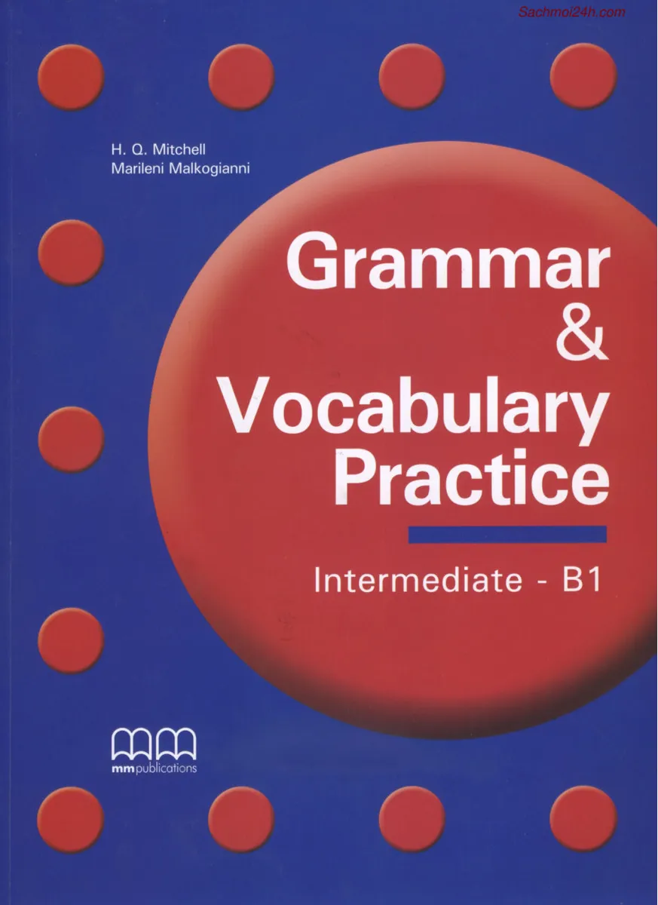
Sachmoi24h.com
H. Q. Mitchell
Marileni Malkogianni
Grammar
Vocabulary
Practice
Intermediate - B1
mmpublications
🔗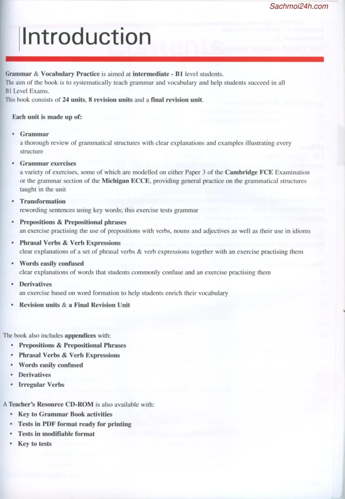
Sachmoi24h.com
Introduction
Grammar & Vocabulary Practice is aimed at intermediate - B1 level students.
The aim of the book is to systematically teach grammar and vocabulary and help students succeed in all
Bl Level Exams.
This book consists of 24 units, 8 revision units and a final revision unit.
Each unit is made up of:
Grammar
a thorough review of grammatical structures with clear explanations and examples illustrating every
structure
Grammar exercises
a variety of exercises, some of which are modelled on either Paper 3 of the Cambridge FCE Examination
or the grammar section of the Michigan ECCE, providing general practice on the grammatical structures
taught in the unit
¢
Transformation
rewording sentences using key words; this exercise tests grammar
Prepositions & Prepositional phrases
an exercise practising the use of prepositions with verbs, nouns and adjectives as well as their use in idioms
Phrasal Verbs & Verb Expressions
clear explanations of a set of phrasal verbs & verb expressions together with an exercise practising them
»
Words easily confused
clear explanations of words that students commonly confuse and an exercise practising them
¢
Derivatives
an exercise based on word formation to help students enrich their vocabulary
Revision units & a Final Revision Unit
The book also includes appendices with:
¢ Prepositions & Prepositional Phrases
¢
Phrasal Verbs & Verb Expressions
¢
Words easily confused
¢
Derivatives
+ Irregular Verbs
A Teacher’s Resource CD-ROM is also available with:
¢ Key to Grammar Book activities
¢
Tests in PDF format ready for printing
¢
Tests in modifiable format
¢
Key to tests
🔗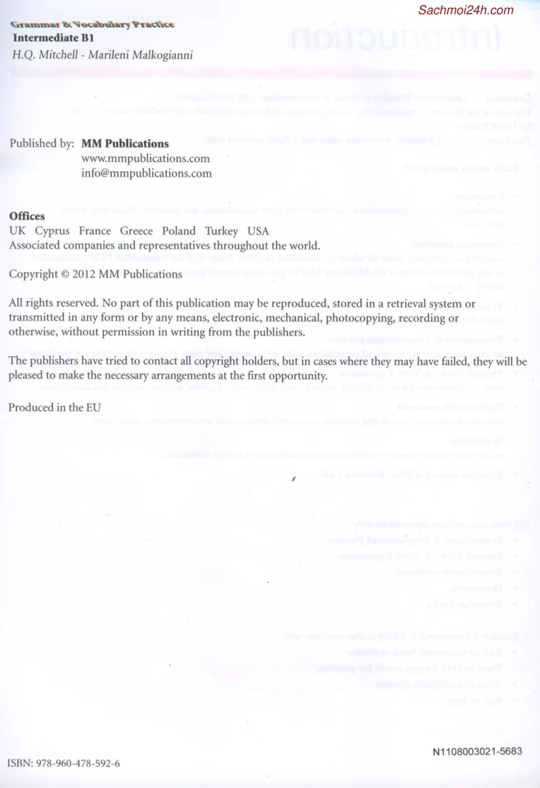
Sachmoi24h.com
Grammar & Nocdovlary Practice
Intermediate B1
H.Q. Mitchell - Marileni Malkogianni
Published by: MM Publications
www.mmpublications.com
info@mmpublications.com
Offices
UK Cyprus France
Greece
Poland Turkey USA
Associated companies and representatives throughout the world.
Copyright © 2012 MM Publications
All rights reserved. No part of this publication may be reproduced, stored in a retrieval system or
transmitted in any form or by any means, electronic, mechanical, photocopying, recording or
otherwise, without permission in writing from the publishers.
The publishers have tried to contact all copyright holders, but in cases where they may have failed, they will be
pleased to make the necessary arrangements at the first opportunity.
Produced in the EU
N1108003021-5683
ISBN: 978-960-478-592-6
🔗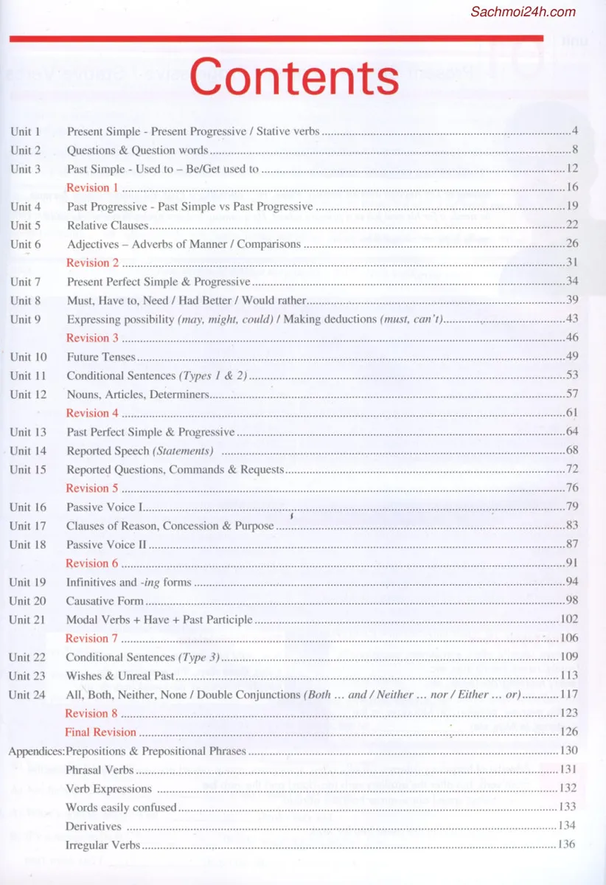
Sachmoi24h.com
Contents
Unit 1
Present Simple - Present Progressive / Stative verbs
Unit 2
Questions & Question words
Unit 3
Past Simple - Used to — Be/Get used to ...
Revision 1
Unit 4
Past Progressive - Past Simple vs Past Progressive .
Unit 5
Relative Clauses...
Unit 6
Adjectives — Adverbs of Manner / Comparisons ..
Revision 2 .
|
Unit 7
Present Perfect Simple & Progressive...
Unit 8
Must, Have to, Need / Had Better / Would rather.
239
Unit 9
Expressing possibility (may, might, could) / Making deductions (must, can’t).
Revision 3
46
Unit 10
Future Tenses..
we 49
Unit 11
Conditional Sentences (Types 1 & 2).....
5) 5)
Unit 12
Nouns, Articles, Determiners..
Fi Fi
Revision 4
Unit 13
Past Perfect Simple & Progressive ..
..64
Unit 14
Reported Speech (Statements)
Unit 15
Reported Questions, Commands & Requests.
anh,
Revision 5.
Unit 16
Passive Voice I..
S79
Unit 17
Clauses of Reason, Concession & Purpose..
Unit 18
Passive Voice II.
Revision 6.
29k
Unit 19
Infinitives and -ing forms ...
...94
Unit 20
Causative Form.
..98
Unit 21
Modal Verbs + Have + Past Participle.
.. 102
Revision 7
.. L06
Unit 22
Conditional Sentences (Type 3)........
ose (bie,
Unit 23
Wishes & Unreal Past.
mp sl Bs.
Unit 24
All, Both, Neither, None / Double Conjunctions (Both ... and / Neither ... nor / Either ... or)..
Santas
Revision 8.
1123
Final Revision .
20
Appendices: Prepositions & Prepositional Phrases ..
ee OU
Phrasal Verbs ....
eee bol
Verb Expressions ..
Words easily confused..
133
Derivatives
Irregular Verbs...
. 136
🔗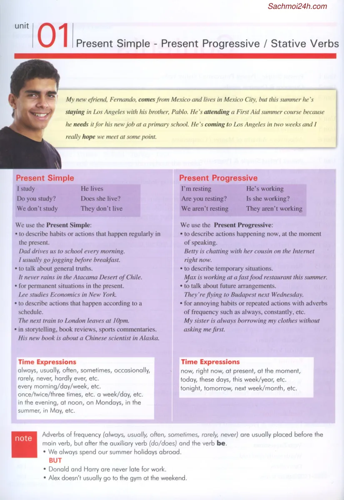
Sachmoi24h.com
unit O01 Present Simple - Present Progressive / Stative Verbs
My new efriend, Fernando, comes from Mexico and lives in Mexico City, but this summer he’s
staying in Los Angeles with his brother, Pablo. He’s attending a First Aid summer course because
he needs it for his new job at a primary school. He’s coming to Los Angeles in two weeks and I
really hope we meet at some point.
Present Simple
I study
He lives
I’m resting
He’s working
Do you study?
Does she live?
Are you resting?
Is she working?
We don’t study
They don’t live
We aren’t resting
They aren’t working
We use the Present Simple:
We use the Present Progressive:
* to describe habits or actions that happen regularly in
the present.
Dad drives us to school every morning.
T usually go jogging before breakfast.
* to talk about general truths.
It never rains in the Atacama Desert of Chile.
e for permanent situations in the present.
Lee studies Economics in New York.
* to describe actions that happen according to a
schedule.
The next train to London leaves at 10pm.
e in storytelling, book reviews, sports commentaries.
His new book is about a Chinese scientist in Alaska.
Time Expressions
always, usually, often, sometimes, occasionally,
rarely, never, hardly ever, etc.
every morning/day/week, etc.
once/twice/three times, etc.
a week/day, etc.
in the evening, at noon, on Mondays, in the
summer, in May, etc.
* to describe actions happening now, at the moment
of speaking.
Betty is chatting with her cousin on the Internet
right now.
* to describe temporary situations.
Max is working at a fast food restaurant this summer.
* to talk about future arrangements.
They’re flying to Budapest next Wednesday.
¢ for annoying habits or repeated actions with adverbs
of frequency such as always, constantly, etc.
My sister is always borrowing my clothes without
asking me first.
Time Expressions
now, right now, at present, at the moment,
today, these days, this week/year, etc.
tonight, tomorrow, next week/month, etc.
| note | Adverbs of frequency (always, usually, often, sometimes, rarely, never) are usually placed before the
main verb, but after the auxiliary verb (do/does) and the verb be.
° We always spend our summer holidays abroad.
BUT
* Donald and Harry are never late for work.
Alex doesn’t usually go to the gym at the weekend.
🔗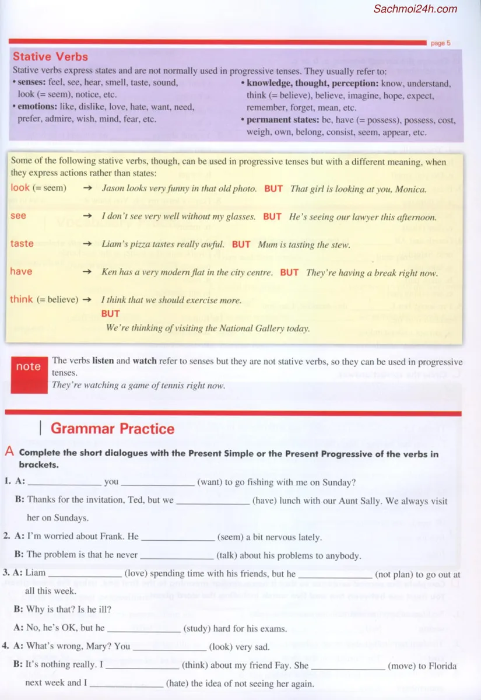
Sachmoi24h.com
Stative Verbs
Stative verbs express states and are not normally used in progressive tenses. They usually refer to:
* senses: feel, see, hear, smell, taste, sound,
look (= seem), notice, etc.
* emotions: like, dislike, love, hate, want, need,
prefer, admire, wish, mind, fear, etc.
knowledge, thought, perception: know, understand,
think believe), believe, imagine, hope, expect,
remember, forget, mean, etc.
* permanent states: be, have (= possess), possess, cost,
weigh, own, belong, consist, seem, appear, etc:
Some of the following stative verbs, though, can be used in progressive tenses but with a different meaning, when
they express actions rather than states:
look (= seem)
—
Jason looks very funny in that old photo. BUT
That girl is looking at you, Monica.
see
=>
Idon’t see very well without my glasses. BUT He’s seeing our lawyer this afternoon.
| taste
Liam’s pizza tastes really awful. BUT Mum is tasting the stew.
have
Ken has a very modern flat in the city centre.
BUT They’re having a break right now.
think (=believe) > I think that we should exercise more.
BUT
We’re thinking of visiting the National Gallery today.
note
The verbs listen and watch refer to senses but they are not stative verbs, so they can be used in progressive
tenses.
They’re watching a game of tennis right now.
Grammar Practice
A Complete the short dialogues with the Present Simple or the Present Progressive of the verbs in
brackets.
tacts:
you _ |
(want) to go fishing with me on Sunday?
B: Thanks for the invitation, Ted, but we
her on Sundays.
2. A: I’m worried about Frank. He
B: The problem is that he never.
3. A: Liam
_(have) lunch with our Aunt Sally. We always visit
(seem) a bit nervous lately.
(talk) about his problems to anybody.
.
(love) spending time with his friends, but he
(not plan) to go out at
all this week.
B: Why is that? Is he ill?
A: No, he’s OK, but he
(study) hard for his exams.
4. A: What’s wrong, Mary? You
(look) very sad.
B: It’s nothing really. I
_
(think) about my friend Fay. She
=
(move) to Florida
next week and I
-
(hate) the idea of not seeing her again.
🔗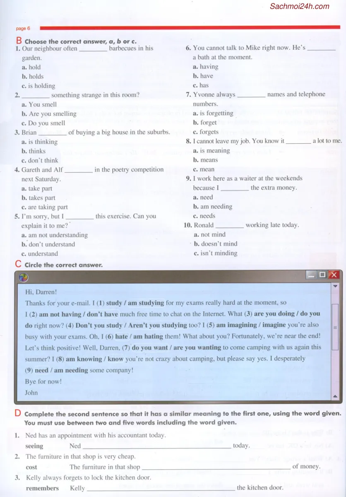
Sachmoi24h.com
page 6
B Choose the correct answer, a, b or ¢.
1. Our neighbour often
barbecues in his
6. You cannot talk to. Mike right now. He’s
garden.
a bath at the moment.
a. hold
a. having
b. holds
b. have
|
c. is holding
c. has
_something strange in this room?
7. Yvonne always
names and telephone
a. You smell
numbers.
b. Are you smelling
a. is forgetting
c. Do you smell
b. forget
3. Brian
_
_of buying a big house in the suburbs.
c. forgets
a. is thinking
8.1 cannot leave my job. You know it.
alot to me.
b. thinks
a. is meaning
ce. don’t think
b. means
4. Gareth and Alf.
in the poetry competition
c. mean
next Saturday.
9. I work here as a waiter at the weekends
a. take part
because I.
the extra money.
b. takes part
a. need
c. are taking part
b. am needing
5. I’m sorry, but I
this exercise. Can you
c. needs
explain it to me?”
10. Ronald
working late today.
a. am not understanding
a. not mind
b. don’t understand
. b. doesn’t mind
c. understand
c. isn’t minding
Cc Circle the correct answer.
@
Box
Hi, Darren!
Thanks for your e-mail. I (1) study / am studying for my exams really hard at the moment, so
I (2) am not having / don’t have much free time to chat on the Internet. What (3) are you doing / do you
do right now? (4) Don’t you study / Aren’t you studying too? I (5) am imagining / imagine you’re also
busy with your exams. Oh, I (6) hate / am hating them! What about you? Fortunately, we’re near the end!
Let’s think positive! Well, Darren, (7) do you want / are you wanting to come camping with us again this
summer? I (8) am knowing / know
not crazy about camping, but please say yes. I desperately
(9) need / am needing some company!
Bye for now!
John
D Complete the second sentence so that it has a similar meaning to the first one, using the word given.
You must use between two and five words including the word given.
1.
Ned has an appointment with his accountant today.
seeing
Ned
_ today.
2.
The furniture in that shop is very cheap.
cost
The furniture in that shop
of money.
3.
Kelly always forgets to lock the kitchen door.
remembers
Kelly
the kitchen door.
🔗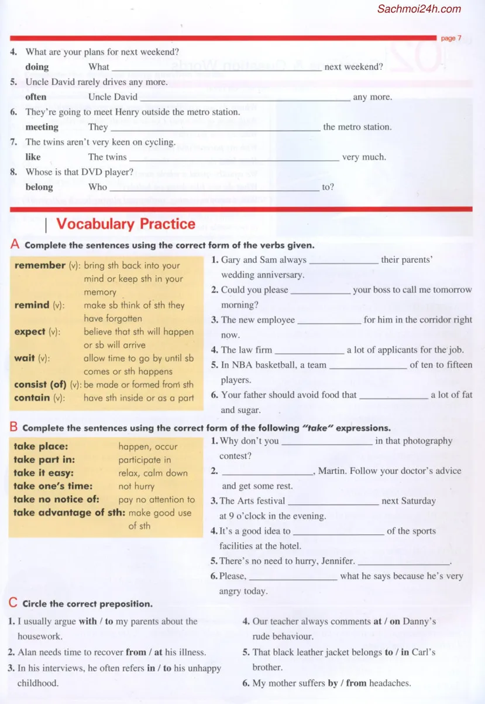
Sachmoi24h.com
What are your plans for next weekend?
doing
What
weekend?
5.
Uncle David rarely drives any more.
often
Uncle David
_any more.
6.
They’re going to meet Henry outside the metro station.
meeting
They
the metro station.
7.
The twins aren’t very keen on cycling.
like
The twins.
very much.
Whose is that DVD player?
belong
Who
|
to?
Vocabulary Practice
A Complete the sentences using the correct form of the verbs given.
1. Gary and Sam always
remember (v): bring sth back into your
_
their parents’
mind or keep sth in your
wedding anniversary.
memory
2. Could you please =
_your boss to call me tomorrow
remind (vy):
make sb think of sth they
morning?
have forgotten
3. The new employee.
for him in the corridor right
expect (v):
believe that sth will happen
now.
or sb will arrive
4. The law firm
wait (v):
-a lot of applicants for the job.
allow time to go by until sb
5. In NBA basketball, a team
comes or sth happens
of ten to fifteen
consist (of) (v): be made or formed from sth
players.
contain (v):
have sth inside or as a part
6. Your father should avoid food that
_a lot of fat
and sugar.
B Complete the sentences using the correct form of the following “take” expressions.
1. Why don’t you
take place:
happen, occur
_in that photography
take part in:
participate in
contest?
take it easy:
relax, calm down
px
, Martin. Follow your doctor’s advice
take one’s time:
not hurry
and get some rest.
take no notice of:
pay no attention to
3. The Arts festival
next Saturday
take advantage of sth: make good use
at 9 o’clock in the evening.
of sth
4. It’s a good idea to
-
_of the sports
facilities at the hotel.
5. There’s no need to hurry, Jennifer.
6. Please,
what he says because he’s very
angry today.
C Circle the correct preposition.
1. I usually argue with / to my parents about the
4. Our teacher always comments at / on Danny’s
housework.
rude behaviour.
2. Alan needs time to recover from / at his illness.
5. That black leather jacket belongs to / in Carl’s
3. In his interviews, he often refers in / to his unhappy
brother.
childhood.
6. My mother suffers by / from headaches.
🔗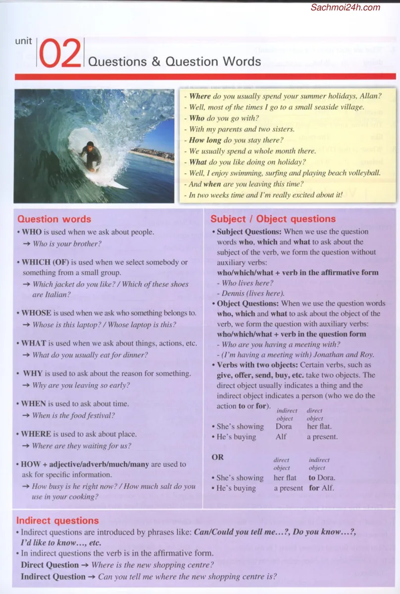
Sachmoi24h.com
unit O2 Questions & Question Words
Where do you usually spend your summer holidays, Allan?
- Well, most of the times I go to a small seaside village.
- Who do you go with?
- With my parents and two sisters.
- How long do you stay there?
- We usually spend a whole month there.
- What do you like doing on holiday?
- Well, I enjoy swimming, surfing and playing beach volleyball.
- And when are you leaving this time?
- In two weeks time and I
really excited about it!
Question words
Subject / Object questions
¢ WHO is used when we ask about people.
¢ Subject Questions: When we use the question
— Who is your brother?
words who, which and what to ask about the
subject of the verb, we form the question without
¢ WHICH (OF) is used when we select somebody or
auxiliary verbs:
something from a small group.
who/which/what + verb in the affirmative form
—> Which jacket do you like? / Which of these shoes
- Who lives here?
are Italian?
- Dennis (lives here).
* Object Questions: When we use the question words
¢ WHOSE is used when we ask who something belongs to.
— Whose is this laptop? / Whose laptop is this?
¢ WHAT is used when we ask about things, actions, etc.
— What do you usually eat for dinner?
¢ WHY is used to ask about the reason for something.
— Why are you leaving so early?
¢ WHEN is used to ask about time.
— When is the food festival?
¢ WHERE is used to ask about place.
— Where are they waiting for us?
HOW + adjective/adverb/much/many are used to
ask for specific information.
— How busy is he right now? / How much salt do you
use in your cooking?
Indirect questions
who, which and what to ask about the object of the
verb, we form the question with auxiliary verbs:
who/which/what + verb in the question form
- Who are you having a meeting with?
- (I’m having a meeting with) Jonathan and Roy.
¢ Verbs with two objects: Certain verbs, such as
give, offer, send, buy, etc. take two objects. The
direct object usually indicates a thing and the
indirect object indicates a person (who we do the
action to or for).
indirect
object
direct
¢ She’s showing
object
Dora
her flat.
He’s buying
Alf
a present.
OR
direct
indirect
object
object
¢ She’s showing
her flat
to Dora.
¢ He’s buying
apresent | for Alf.
* Indirect questions are introduced by phrases like: Can/Could you tell me...?, Do you know...?,
I'd like to know..., etc.
¢ In indirect questions the verb is in the affirmative form.
Direct Question > Where is the new shopping centre?
Indirect Question > Can you tell me where the new shopping centre is?
🔗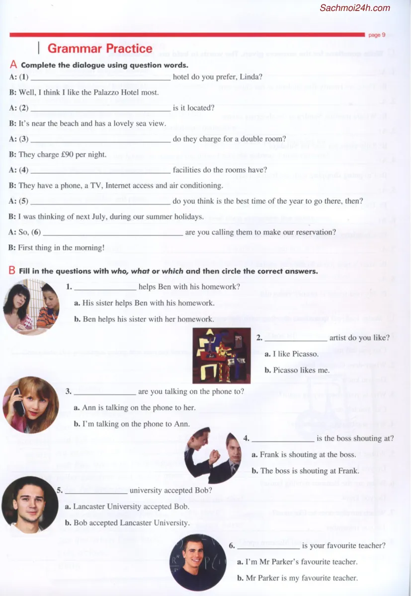
Sachmoi24h.com
Grammar Practice
A Complete the dialogue using question words.
A: (1)
hotel do you prefer, Linda?
B: Well, I think I like the Palazzo Hotel most.
A: (2)
is it located?
B: It’s near the beach and has a lovely sea view.
A: (3)
_do they charge for a double room?
B: They charge £90 per night.
A: (4)
facilities do the rooms have?
B: They have a phone, a TV, Internet access and air conditioning.
A: (5)
do you think is the best time of the year to go there, then?
B: I was thinking of next July, during our summer holidays.
A: So, (6)
are you calling them to make our reservation?
B: First thing in the morning!
B Fill in the questions with who, what or which and then circle the correct answers.
helps Ben with his homework?
a. His sister helps Ben with his homework.
b. Ben helps his sister with her homework.
artist do you like?
a. I like Picasso.
b. Picasso likes me.
-are you talking on the phone to?
a. Ann is talking on the phone to her.
b. I’m talking on the phone to Ann.
is the boss shouting at?
a. Frank is shouting at the boss.
b. The boss is shouting at Frank.
university accepted Bob?
a. Lancaster University accepted Bob.
b. Bob accepted Lancaster University.
-is your favourite teacher?
a. I’m Mr Parker’s favourite teacher.
b. Mr Parker is my favourite teacher.
🔗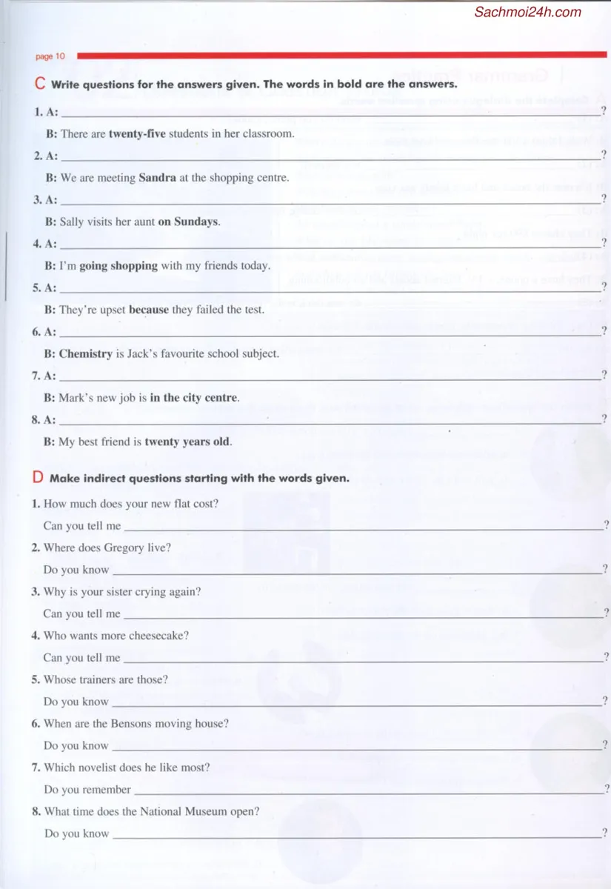
Sachmoi24h.com
page 10
C write questions for the answers given. The words in bold are the answers.
As.
B: There are twenty-five students in her classroom.
2. As .
B: We are meeting Sandra at the shopping centre.
AS |
B: Sally visits her aunt on Sundays.
4. As.
B: I’m going shopping with my friends today.
B: They’re upset because they failed the test.
6. A:
|
B: Chemistry is Jack’s favourite school subject.
y
A:
B: Mark’s new job is in the city centre.
8. A:
B: My best friend is twenty years old.
D Make indirect questions starting with the words given.
1. How much does your new flat cost?
Can you tell me.
2. Where does Gregory live?
Do you know
.
3. Why is your sister crying again?
Can you tell me
_
4. Who wants more cheesecake?
Can you tell me
5. Whose trainers are those?
Do you know
6. When are the Bensons moving house?
Do you know
_
7. Which novelist does he like most?
Do you remember
8. What time does the National Museum open?
Do you know
🔗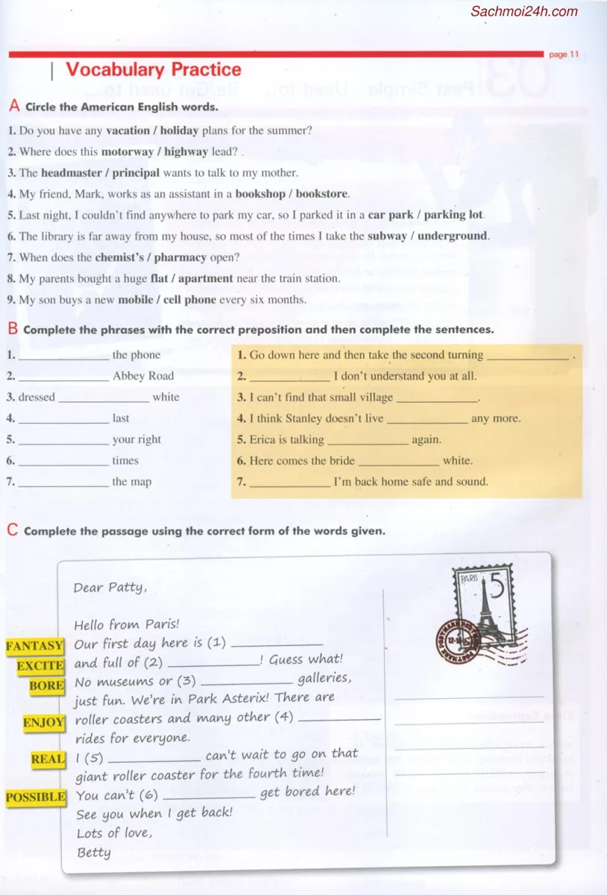
Sachmoi24h.com
| Vocabulary Practice
A Circle the American English words.
1. Do you have any vacation / holiday plans for the summer?
2. Where does this motorway / highway lead? .
3. The headmaster / principal wants to talk to my mother.
4, My friend, Mark, works as an assistant in a bookshop / bookstore.
5. Last night, I couldn’t find anywhere to park my car, so I parked it in a car park / parking lot.
6. The library is far away from my house, so most of the times I take the subway / underground.
7. When does the chemist’s / pharmacy open?
8. My parents bought a huge flat / apartment near the train station.
9, My son buys a new mobile / cell phone every six months.
B Complete the phrases with the correct preposition and then complete the sentences.
nS
the phone
1. Go down here and then take the second turning
2.
Abbey Road
Ze
I don’t understand you at all.
3. dressed
|
_white
3. I can’t find that small village
4.
_last
4. I think Stanley doesn’t live |
_any more.
Sol
_ your right
5. Erica is talking.
_again.
6.
_times
6. Here comes the bride
Te
_
the map
de
I’m back home safe and sound.
Complete the passage using the correct form of the words given.
Dear Patty,
Hello from Paris!
FANTASY| Our first day here is (1)
EXCITE)
and full of (2).
_! Guess what!
BORE}
No museums or (3)
galleries,
ae Pa: We're in Park Asterix! There ave
ENJOY| roller coasters and many other (4)
rides for everyone.
REAL
can’t wait to go on that
giant roller coaster for the fourth tinne!
POSSIBLE,
You can't (6) .
get bored here!
See you when | get back!
Lots of love,
Betty
🔗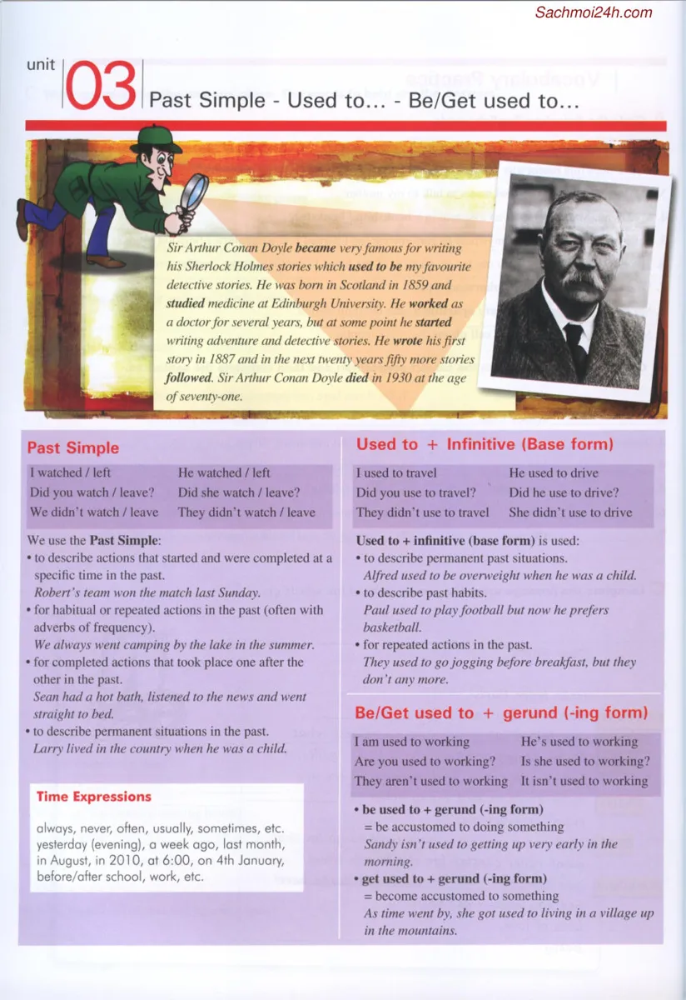
Sachmoi24h.com
unit 03 Past Simple - Used to... - Be/Get used to...
Sir Arthur Conan Doyle became very famous for writing
his Sherlock Holmes stories which used to be my favourite
detective stories. He was born in Scotland in
1859 and
studied medicine at Edinburgh University. He worked as
a doctor for several years, but at some point he started
writing adventure and detective stories. He wrote his first
story in 1887 and in the next twenty years fifty more stories
followed. Sir Arthur Conan Doyle died in 1930 at the age
of seventy-one.
Past Simple
Used to + Infinitive (Base form)
I watched / left
He watched / left
I used to travel
He used to drive
Did you watch / leave?
Did she watch / leave?
Did you use to travel?
Did he use to drive?
We didn’t watch / leave
They didn’t watch / leave
They didn’t use to travel
She didn’t use to drive
We use the Past Simple:
Used to + infinitive (base form) is used:
* to describe actions that started and were completed at a
specific time in the past.
Robert’s team won the match last Sunday.
¢ for habitual or repeated actions in the past (often with
adverbs of frequency).
We always went camping by the lake in the summer.
¢ for completed actions that took place one after the
other in the past.
Sean had a hot bath, listened to the news and went
straight to bed.
* to describe permanent situations in the past.
Larry lived in the country when he was a child.
Time Expressions
always, never, often, usually, sometimes, etc.
yesterday (evening), a week ago, last month,
in August, in 2010, at 6:00, on 4th January,
before/after school, work, etc.
* to describe permanent past situations.
Alfred used to be overweight when he was a child.
* to describe past habits.
Paul used to play football but now he prefers
basketball.
¢ for repeated actions in the past.
They used to go jogging before breakfast, but they
don’t any more.
Be/Get used to + gerund (-ing form)
I am used to working
He’s used to working
Are you used to working?
Is she used to working?
They aren’t used to working
It isn’t used to working
¢ be used to + gerund (-ing form)
= be accustomed to doing something
Sandy isn’t used to getting up very early in the
morning.
° get used to + gerund (-ing form)
= become accustomed to something
As time went by, she got used to living in a village up
in the mountains.
🔗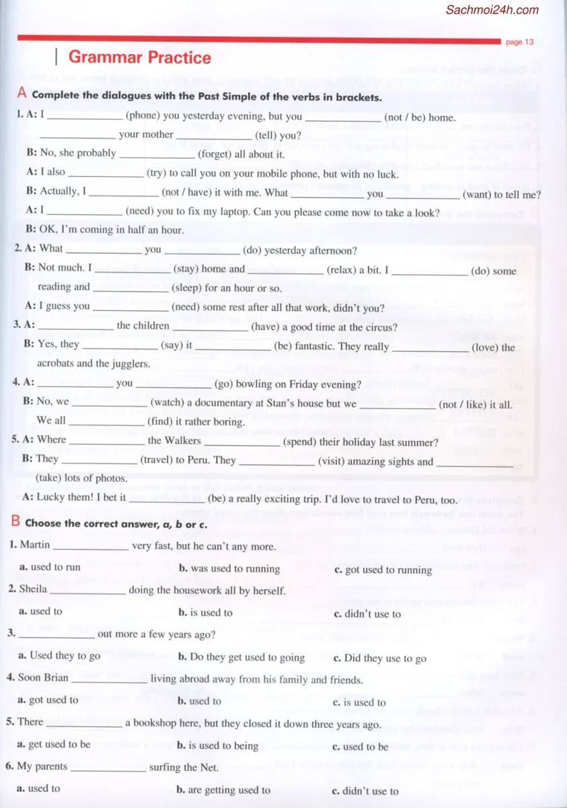
Sachmoi24h.com
page 13
Grammar Practice
A Complete the dialogues with the Past Simple of the verbs in brackets.
AS
(phone) you yesterday evening, but you.
(not / be) home.
your mother
|
(tell) you?
B: No, she probably
(forget) all about it.
A: I also
_
(try) to call you on your mobile phone, but with no luck.
B: Actually, I
(not / have) it with me. What |
you
(want) to tell me?
(need) you to fix my laptop. Can you please come now to take a look?
B: OK, I’m coming in half an hour.
2. A: What.
you |
(do) yesterday afternoon?
B: Not much. I
_
_(stay) home and
_
(relax) a bit. I.
(do) some
reading and
_
(sleep) for an hour or so.
A: I guess you -
(need) some rest after all that work, didn’t you?
_the children
(have) a good time at the circus?
B: Yes, they
_(say) it.
(be) fantastic. They really
(love) the
acrobats and the jugglers.
4. A:
_ You |
(go) bowling on Friday evening?
B: No, we.
_ (watch) a documentary at Stan’s house but we
(not / like) it all.
We all
_
(find) it rather boring.
5. A: Where
_the Walkers
-
(spend) their holiday last summer?
B: They -
(travel) to Peru. They
_(visit) amazing sights and
(take) lots of photos.
A: Lucky them! I bet it
_(be) a really exciting trip. I’d love to travel to Peru, too.
B Choose the correct answer, a, b or c.
1. Martin
=
_very fast, but he can’t any more.
a. used to run
b. was used to running
c. got used to running
2. Sheila
|
doing the housework all by herself.
a. used to
b. is used to
c. didn’t use to
Be.
_out more a few years ago?
a. Used they to go
b. Do they get used to going
c. Did they use to go
4. Soon Brian
_
_living abroad away from his family and friends.
a. got used to
b. used to
c. is used to
5. There
_a bookshop here, but they closed it down three years ago.
a. get used to be
b. is used to being
c. used to be
6. My parents |
surfing the Net.
a. used to
b. are getting used to
c. didn’t use to
🔗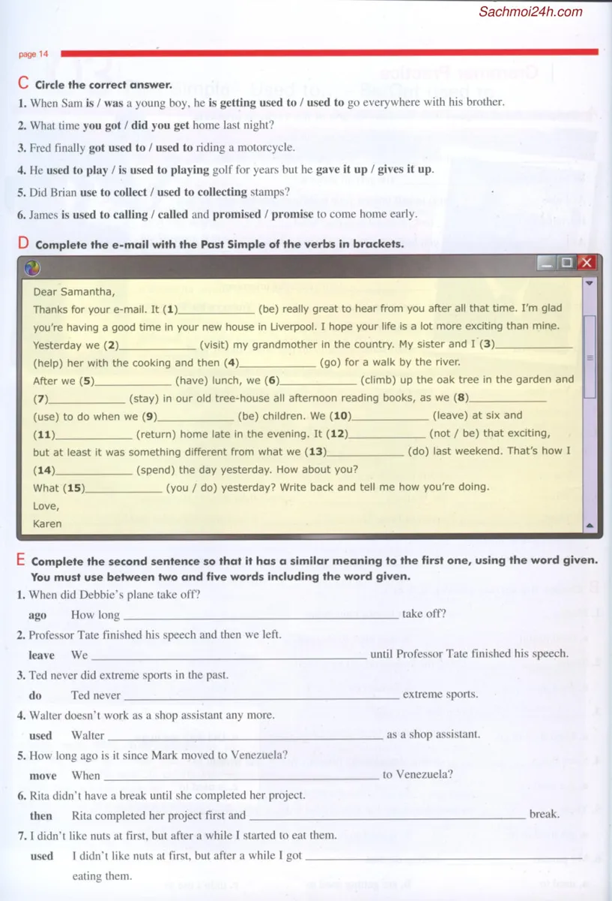
Sachmoi24h.com
C Circle the correct answer.
1. When Sam is / was a young boy, he is getting used to / used to go everywhere with his brother.
2. What time you got / did you get home last night?
3. Fred finally got used to / used to riding a motorcycle.
4. He used to play / is used to playing golf for years but he gave it up / gives it up.
5. Did Brian use to collect / used to collecting stamps?
6. James is used to calling / called and promised / promise to come home early.
D Complete the e-mail with the Past Simple of the verbs in brackets.
Dear Samantha,
Thanks for your e-mail. It (1)_
(be) really great to hear from you after all that time. I’m glad
you’re having a good time in your new house in Liverpool. I hope your life is a lot more exciting than mine.
Yesterday we (2)_
(visit) my grandmother in the country. My sister and I (3)_
(help) her with the cooking and then (4)_
(go) for a walk by the river.
After we (5)_
(have) lunch, we (6)_
(climb) up the oak tree in the garden and
(7)_
(stay) in our old tree-house all afternoon reading books, as we (8)_
(use) to do when we (9)_
(be) children. We (10)_
(leave) at six and
(11)_
(return) home late in the evening. It (12).
(not / be) that exciting,
but at least it was something different from what we (13).
(do) last weekend. That’s how I
(14)_
(spend) the day yesterday. How about you?
What (15)_
(you / do) yesterday? Write back and tell me how you're doing.
Love,
Karen
E Complete the second sentence so that it has a similar meaning to the first one, using the word given.
You must use between two and five words including the word given.
1. When did Debbie’s plane take off?
ago
How long =
_take off?
2. Professor Tate finished his speech and then we left.
leave
We.
until Professor Tate finished his speech.
3. Ted never did extreme sports in the past.
do
Ted never
extreme sports.
4. Walter doesn’t work as a shop assistant any more.
used
Walter
_as a shop assistant.
5. How long ago is it since Mark moved to Venezuela?
move
When
-
_to Venezuela?
6. Rita didn’t have a break until she completed her project.
then
Rita completed her project first and
_break.
7. I didn’t like nuts at first, but after a while I started to eat them.
used
I didn’t like nuts at first, but after a while I got
eating them.
🔗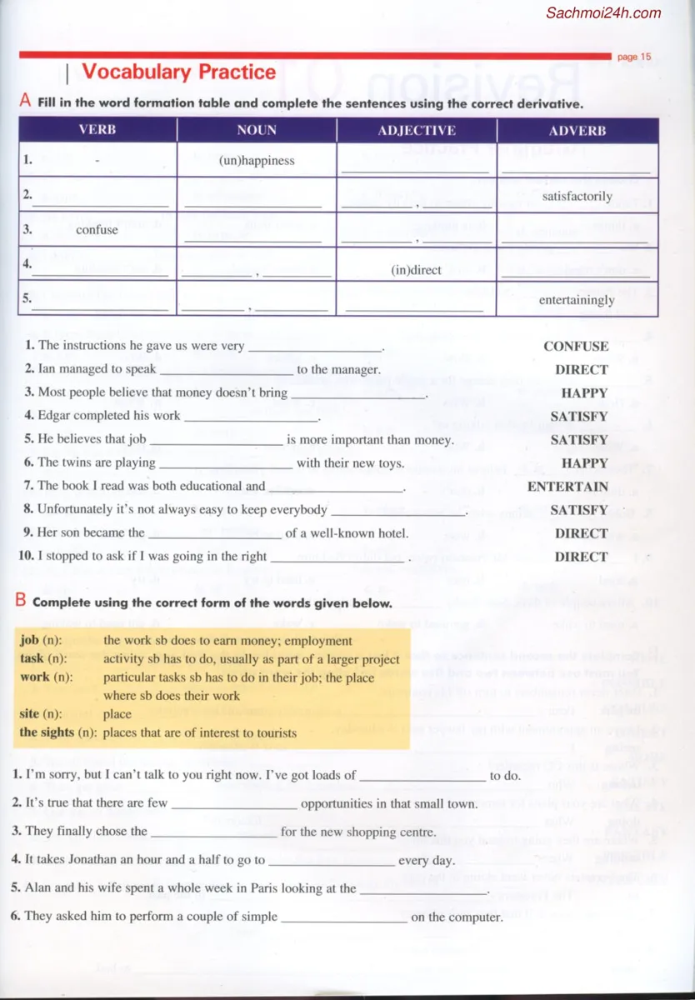
Sachmoi24h.com
Vocabulary Practice
page 15
A Fill in the word formation table and complete the sentences using the correct derivative.
VERB
NOUN
ADJECTIVE
ADVERB
a
(un)happiness
2,
satisfactorily
3.
confuse
4.
(in)direct
5.
entertainingly
1. The instructions he gave us were very
CONFUSE
2. Ian managed to speak
to the manager.
DIRECT
3. Most people believe that money doesn’t bring |
HAPPY
4. Edgar completed his work
SATISFY
5. He believes that job -
_is more important than money.
SATISFY
6. The twins are playing
_with their new toys.
HAPPY
7. The book I read was both educational and
-
ENTERTAIN
8. Unfortunately it’s not always easy to keep everybody
SATISFY
9. Her son became the
_of a well-known hotel.
DIRECT
10. I stopped to ask if I was going in the right
DIRECT
B Complete using the correct form of the words given below.
job (n):
the work sb does to earn money; employment
task (n):
activity sb has to do, usually as part of a larger project
work (n):
particular tasks sb has to do in their job; the place
where sb does their work
site (n):
place
the sights (n): places that are of interest to tourists
1. I’m sorry, but I can’t talk to you right now. I’ve got loads of |
_to do.
2. It’s true that there are few
_Opportunities in that small town.
3. They finally chose the
_for the new shopping centre.
4. It takes Jonathan an hour and a half to go to
day.
5. Alan and his wife spent a whole week in Paris looking at the
6. They asked him to perform a couple of simple
on the computer.
🔗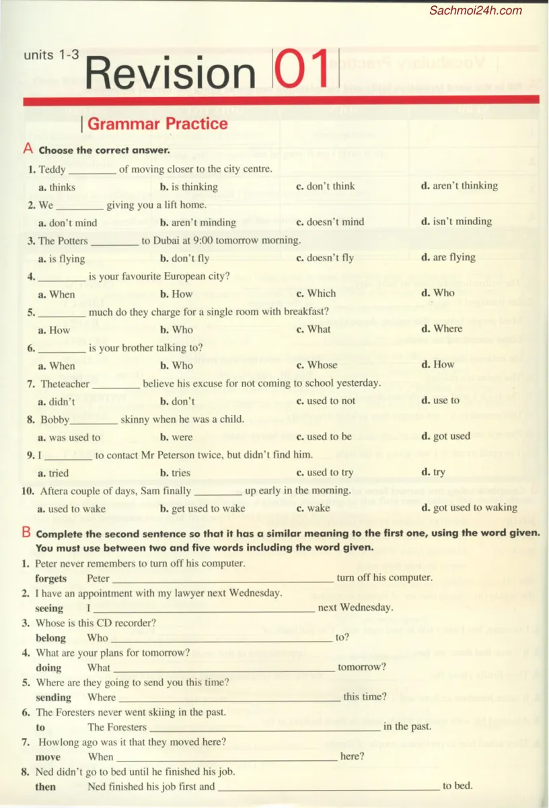
Sachmoi24h.com
units 1-3
Revision O1
19 visludsooV |
Grammar Practice
A Choose the correct answer.
1. Teddy -
of moving closer to the city centre.
a. thinks
b. is thinking
c. don’t think
d. aren’t thinking
2. We -
giving you a lift home.
a. don’t mind
b. aren’t minding
c. doesn’t mind
d. isn’t minding
3. The Potters
-
to Dubai at 9:00 tomorrow morning.
a. is flying
b. don’t fly
c. doesn’t fly
d. are flying
4.
is your favourite European city?
a. When
b. How
c. Which
d. Who
Sy
much do they charge for a single room with breakfast?
a. How
b. Who
c. What
d. Where
6.
_is your brother talking to?
a. When
b. Who
c. Whose
d. How
7. Theteacher
~~
believe his excuse for not coming to school yesterday.
a. didn’t
b. don’t
c. used to not
d. use to
8. Bobby_
skinny when he was a child.
a. was used to
b. were
c. used to be
d. got used
_to contact Mr Peterson twice, but didn’t find him.
a. tried
b. tries
c. used to try
d. try
10. Aftera couple of days, Sam finally
up early in the morning.
a. used to wake
b. get used to wake
c. wake
d. got used to waking
B Complete the second sentence so that it has a similar meaning to the first one, using the word given.
You must use between two and five words including the word given.
1. Peter never remembers to turn off his computer.
forgets
Peter’:
turn off his computer.
2. Ihave an appointment with my lawyer next Wednesday.
seeing
next Wednesday.
3. Whose is this CD recorder?
belong
Who
_
_to?
4, What are your plans for tomorrow?
doing
What
-
‘tomorrow?
5. Where are they going to send you this time?
sending
Where
-
_
this time?
6. The Foresters never went skiing in the past.
to
The Foresters
=
_in the past.
7. Howlong ago was it that they moved here?
move
When
-
here?
8. Ned didn’t go to bed until he finished his job.
then
Ned finished his job first and
to bed.
🔗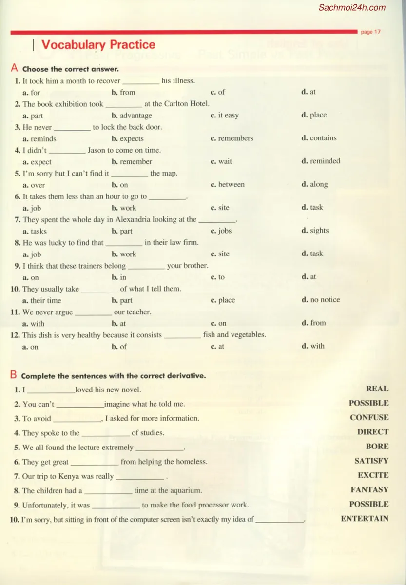
Sachmoi24h.com
page 17
Vocabulary Practice
A Choose the correct answer.
1. It took him a month to recover =
_his illness.
a. for
b. from
c. of
d. at
2. The book exhibition took
-at the Carlton Hotel.
a. part
b. advantage
c. it easy
d. place
3. He never
|
_to lock the back door.
a. reminds
b. expects
c. remembers
d. contains
4. I didn’t
_
Jason to come on time.
a. expect
b. remember
c. wait
d. reminded
5. I’m sorry but I can’t find it.
the map.
a. Over
b. on
c. between
d. along
6. It takes them less than an hour to go to.
a. job
b. work
c. site
d. task
7. They spent the whole day in Alexandria looking at the
a. tasks
b. part
c. jobs
d. sights
8. He was lucky to find that.
in their law firm.
a. job
b. work
c. site
d. task
9. I think that these trainers belong .
_ your brother.
a. on
b. in
c. to
d. at
10. They usually take
of what I tell them.
a. their time
b. part
c. place
d. no notice
11. We never argue
our teacher.
a. with
b. at
c. on
d. from
12. This dish is very healthy because it consists
fish and vegetables.
a. on
b. of
c. at
d. with
B Complete the sentences with the correct derivative.
loved his new novel.
REAL
2. You can’t
_imagine what he told me.
POSSIBLE
3. To avoid
-
_,
| asked for more information.
CONFUSE
4. They spoke to the
_
_of studies.
DIRECT
5. We all found the lecture extremely
BORE
6. They get great _
from helping the homeless.
SATISFY
7. Our trip to Kenya was really
EXCITE
8. The children had a _
time at the aquarium.
FANTASY
9. Unfortunately, it was.
to make the food processor work.
POSSIBLE
10. I’m sorry, but sitting in front of the computer screen isn’t exactly my idea of
|
ENTERTAIN
🔗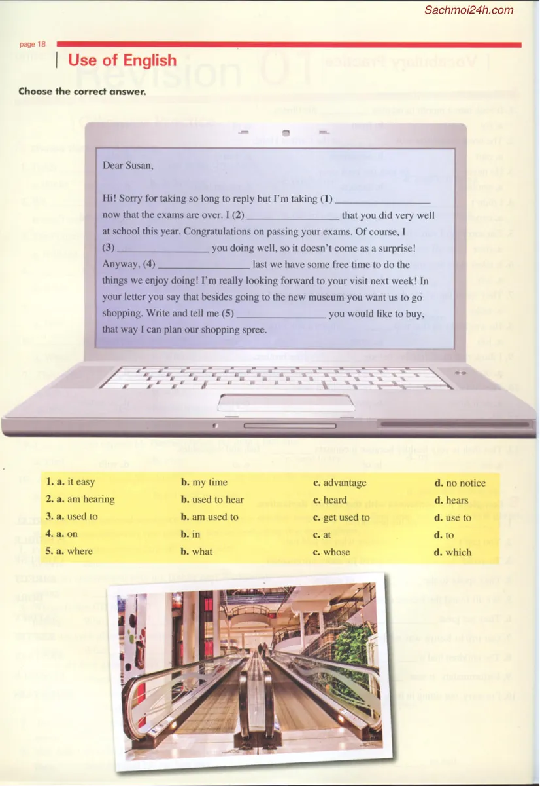
Sachmoi24h.com
page 18
Use of English
Choose the correct answer.
Dear Susan,
Hi! Sorry for taking so long to reply but I’m taking (1)
now that the exams are over. I (2)
that you did very well
at school this year. Congratulations on passing your exams. Of course, I
(3)
you doing well, so it doesn’t come as a surprise!
Anyway, (4).
_last we have some free time to do the
things we enjoy doing! I’m really looking forward to your visit next week! In
your letter you say that besides going to the new museum you want us to go
shopping. Write and tell me (5)
_you would like to buy,
that way I can plan our shopping spree.
1. a. it easy
b. my time
c. advantage
d. no notice
2. a. am hearing
b. used to hear
c. heard
d. hears
3. a. used to
b. am used to
c. get used to
d. use to
4. a. on
b. in
c. at
d. to
5. a. where
b. what
c. whose
d. which
🔗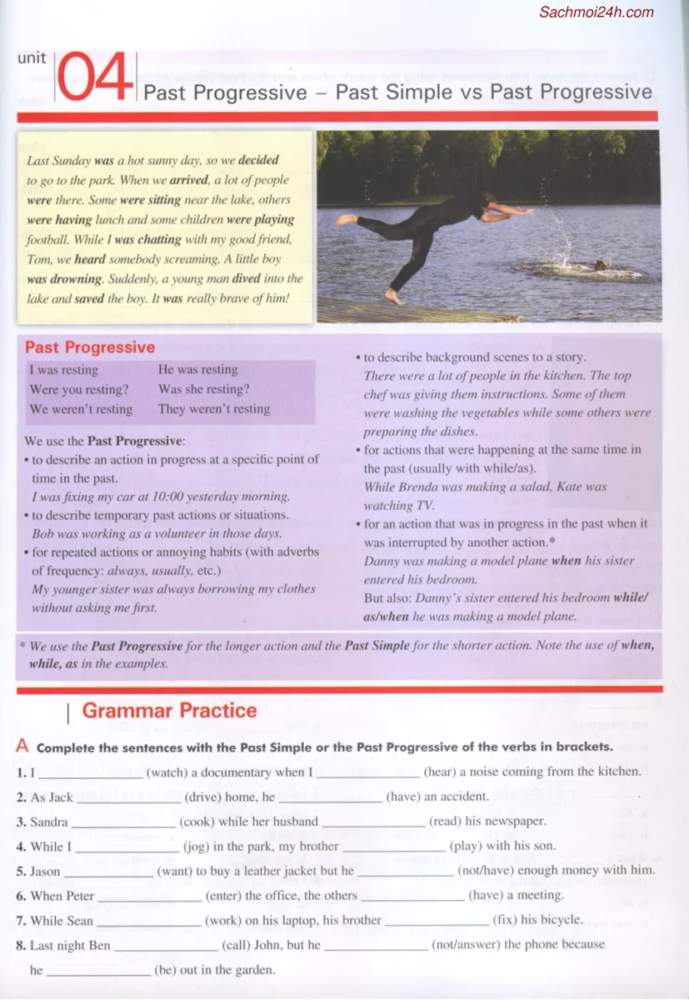
Sachmoi24h.com
unit
y
Past Progressive — Past Simple vs Past Progressive
Last Sunday was a hot sunny day, so we decided
to go to the park. When we arrived, a lot of people
were there. Some were sitting near the lake, others
were having lunch and some children were playing
football. While I was chatting with my good friend,
Tom, we heard somebody screaming. A little boy
was drowning. Suddenly, a young man dived into the
lake and saved the boy. It was really brave of him!
I was resting
He was resting
* to describe background scenes to a story.
There were a lot of people in the kitchen. The top
Were you resting?
Was she resting?
chef was giving them instructions. Some of them
We weren’t resting
They weren’t resting
were washing the vegetables while some others were
We use the Past Progressive:
preparing the dishes.
* to describe an action in progress at a specific point of
* for actions that were happening at the same time in
time in the past.
the past (usually with while/as).
I was fixing my car at 10:00 yesterday morning.
While Brenda was making a salad, Kate was
* to describe temporary past actions or situations.
watching TV.
Bob was working as a volunteer in those days.
for an action that was in progress in the past when it
* for repeated actions or annoying habits (with adverbs
was interrupted by another action.*
of frequency: always, usually, etc.)
Danny was making a model plane when his sister
My younger sister was always borrowing my clothes
entered his bedroom.
But also: Danny’s sister entered his bedroom while/
without asking me first.
as/when he was making a model plane.
* We use the Past Progressive for the longer action and the Past Simple for the shorter action. Note the use of when,
while, as in the examples.
Grammar Practice
A Complete the sentences with the Past Simple or the Past Progressive of the verbs in brackets.
11
_(watch) a documentary when I
(hear) a noise coming from the kitchen.
Jack:
_(drive) home, he az
(have) an accident.
3. Sandra
_
(cook) while her husband
_(read) his newspaper.
4. While I
_(jog) in the park, my brother =
_(play) with his son.
5. Jason
|
(want) to buy a leather jacket but he.
(not/have) enough money with him.
6. When Peter
-
_(enter) the office, the others
(have) a meeting.
7. While Sean
-
_(work) on his laptop, his brother:
_ (fix) his bicycle.
8. Last night Ben.
_(call) John, but he
|
(not/answer) the phone because
he
_
(be) out in the garden.
🔗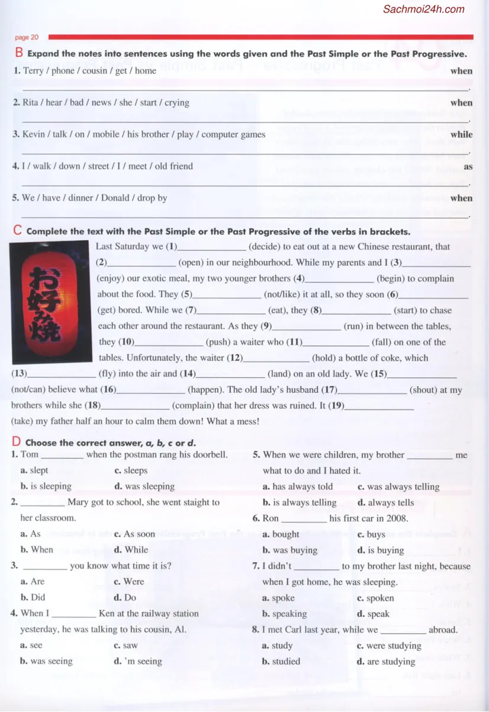
Sachmoi24h.com
page 20
B Expand the notes into sentences using the words given and the Past Simple or the Past Progressive.
1. Terry / phone / cousin / get / home
when
2. Rita / hear / bad / news / she / start / crying
when
3. Kevin / talk / on / mobile / his brother / play / computer games
while
4.1 / walk / down / street / I / meet / old friend
as
5. We / have / dinner / Donald / drop by
when
Complete the text with the Past Simple or the Past Progressive of the verbs in brackets.
Last Saturday we (1).
(decide) to eat out at a new Chinese restaurant, that
(2)_
(open) in our neighbourhood. While my parents and I (3).
(enjoy) our exotic meal, my two younger brothers (4)_
(begin) to complain
about the food. They (5)_
(not/like) it at all, so they soon (6)_
(get) bored. While we (7)_
they (8)_
(start) to chase
each other around the restaurant. As they (9).
(run) in between the tables,
they (10)_
(push) a waiter who (11)_
(fall) on one of the
tables. Unfortunately, the waiter (12).
(hold) a bottle of coke, which
(13)_
(fly) into the air and (14).
(land) on an old lady. We (15).
(not/can) believe what (16)
(happen). The old lady’s husband (17).
_ (shout) at my
brothers while she (18)
(complain) that her dress was ruined. It (19)_
(take) my father half an hour to calm them down! What a mess!
D Choose the correct answer, a, b,c or d.
1. Tom.
when the postman rang his doorbell.
5. When we were children, my brother
me
a. slept
c. sleeps
what to do and I hated it.
b. is sleeping
d. was sleeping
a. has always told
c. was always telling
Mary got to school, she went staight to
b. is always telling
d. always tells
her classroom.
6. Ron
-
_his first car in 2008.
a. AS
c. As soon
a. bought
c. buys
b. When
d. While
b. was buying
d. is buying
3.
you know what time it is?
7. I didn’t |
to my brother last night, because
a. Are
c. Were
when I got home, he was sleeping.
b. Did
d. Do
a. spoke
c. spoken
4. When I.
Ken at the railway station
b. speaking
d. speak
yesterday, he was talking to his cousin, Al.
8. I met Carl last year, while we
_
a. See
Cc. Saw
a. study
c. were studying
b. was seeing
d. ’m seeing
b. studied
d. are studying
🔗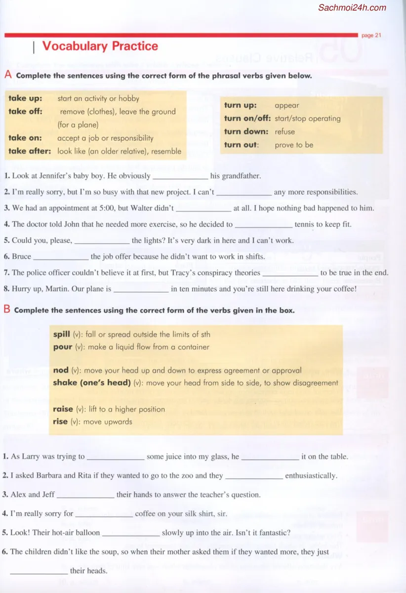
Sachmoi24h.com
| Vocabulary Practice
A Complete the sentences using the correct form of the phrasal verbs given below.
take up:
start an activity or hobby
turn up:
take off:
appear
remove (clothes), leave the ground
(for a plane)
turn on/off: start/stop operating
take on:
accept a job or responsibility
turn down:
refuse
turn out:
prove to be
take after:
look like (an older relative), resemble
1. Look at Jennifer’s baby boy. He obviously
his grandfather.
2. I’m really sorry, but I’m so busy with that new project. I can’t.
_any more responsibilities.
3. We had an appointment at 5:00, but Walter didn’t
_
at all. I hope nothing bad happened to him.
4. The doctor told John that he needed more exercise, so he decided to
_
_tennis to keep fit.
5. Could you, please, =
the lights? It’s very dark in here and I can’t work.
6. Bruce
-
the job offer because he didn’t want to work in shifts.
7. The police officer couldn’t believe it at first, but Tracy’s conspiracy theories
to be true in the end.
8. Hurry up, Martin. Our plane is
=
_in ten minutes and you’re still here drinking your coffee!
B Complete the sentences using the correct form of the verbs given in the box.
spill (v): fall or spread outside the limits of sth
pour (v): make a liquid flow from a container
nod (v): move your head up and down to express agreement or approval
shake (one’s head) (v): move your head from side to side, to show disagreement
raise (v): lift to a higher position
rise (v): move upwards
1. As Larry was trying to
_
juice into my glass, he
it on the table.
2. I asked Barbara and Rita if they wanted to go to the zoo and they
enthusiastically.
3. Alex and Jeff.
_their hands to answer the teacher’s question.
4. I’m really sorry for
coffee on your silk shirt, sir.
5. Look! Their hot-air balloon
slowly up into the air. Isn’t it fantastic?
6. The children didn’t like the soup, so when their mother asked them if they wanted more, they just
their heads.
🔗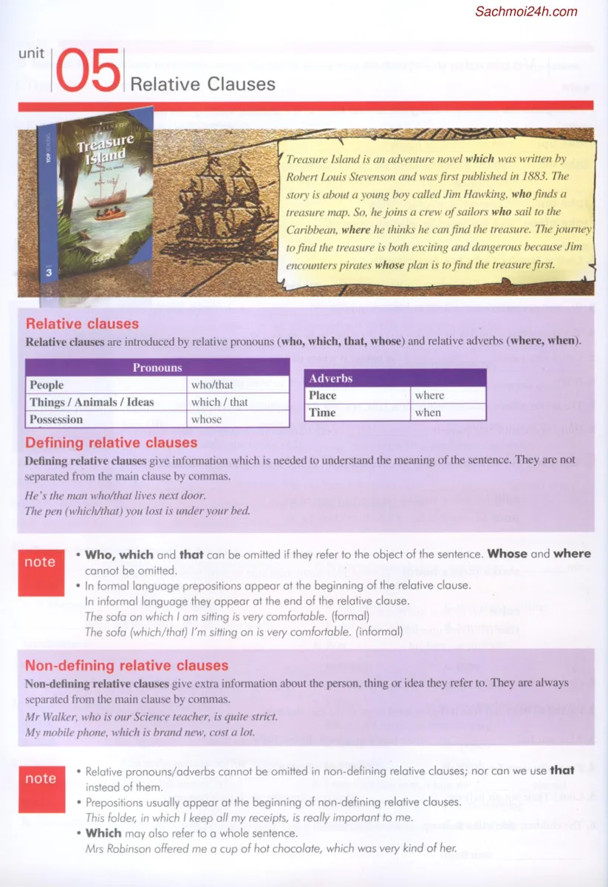
Sachmoi24h.com
unit
Relative Clauses
Treasure Island is an adventure novel which was written by
Robert Louis Stevenson and was first published in 1883. The
story is about a young boy called Jim Hawking, who finds a
treasure map. So, he joins a crew of sailors who sail to the
Caribbean, where he thinks he can find the treasure. The journey
to find the treasure is both exciting and dangerous because Jim
encounters pirates whose plan is to find the treasure first.
Relative clauses
Relative clauses are introduced by relative pronouns (who, which, that, whose) and relative adverbs (where, when).
Pronouns
People
who/that
| Adverbs
| Place
Things / Animals / Ideas
which / that
| where
Time
Possession
whose
when
Defining relative clauses
Defining relative clauses give information which is needed to understand the meaning of the sentence. They are not
separated from the main clause by commas.
He’s the man who/that lives next door.
The pen (which/that) you lost is under your bed.
‘note * Who, which and that can be omitted if they refer to the object of the sentence. Whose and where
cannot be omitted.
° In formal language prepositions appear at the beginning of the relative clause.
In informal language they appear at the end of the relative clause.
The sofa on which | am sitting is very comfortable. (formal)
The sofa (which/that) I’m sitting on is very comfortable. (informal)
Non-defining relative clauses
Non-defining relative clauses give extra information about the person, thing or idea they refer to. They are always
separated from the main clause by commas.
Mr Walker, who is our Science teacher, is quite strict.
My mobile phone, which is brand new, cost a lot.
* Relative pronouns/adverbs cannot be omitted in non-defining relative clauses; nor can we use that
instead of them.
* Prepositions usually appear at the beginning of non-defining relative clauses.
This folder, in which | keep all my receipts, is really important to me.
¢ Which may also refer to a whole sentence.
Mrs Robinson offered me a cup of hot chocolate, which was very kind of her.
🔗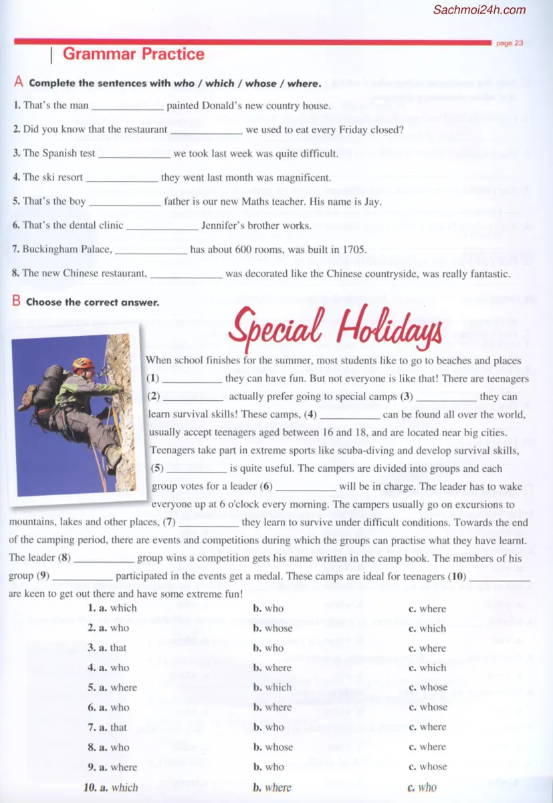
Sachmoi24h.com
Grammar Practice
page 23
A Complete the sentences with who / which / whose / where.
1. That’s the man.
painted Donald’s new country house.
2. Did you know that the restaurant
we used to eat every Friday closed?
3. The Spanish test.
4. The ski resort
=
5. That’s the boy
6. That’s the dental clinic
7. Buckingham Palace,
we took last week was quite difficult.
they went last month was magnificent.
father is our new Maths teacher. His name is Jay.
Jennifer’s brother works.
has about 600 rooms, was built in 1705.
8. The new Chinese restaurant,
was decorated like the Chinese countryside, was really fantastic.
B Choose the correct answer.
When school finishes for the summer, most students like to go to beaches and places
(1).
_they can have fun. But not everyone is like that! There are teenagers
(2).
actually prefer going to special camps (3)
they can
learn survival skills! These camps, (4)
_
can be found all over the world,
usually accept teenagers aged between 16 and 18, and are located near big cities.
Teenagers take part in extreme sports like scuba-diving and develop survival skills,
(5).
_is quite useful. The campers are divided into groups and each
group votes for a leader (6)
will be in charge. The leader has to wake
everyone up at 6 o'clock every morning. The campers usually go on excursions to
mountains, lakes and other places, (7)
they learn to survive under difficult conditions. Towards the end
of the camping period, there are events and competitions during which the groups can practise what they have learnt.
The leader (8) |
wins a competition gets his name written in the camp book. The members of his
group (9) |
participated in the events get a medal. These camps are ideal for teenagers (10)
are keen to get out there and have some extreme fun!
1. a. which
b. who
c. where
2. a. who
b. whose
c. which
3. a. that
b. who
c. where
4. a. who
b. where
c. which
5. a. where
b. which
c. whose
6. a. who
b. where
c. whose
7. a. that
b. who
c. where
8. a. who
b. whose
c. where
9. a. where
b. who
c. whose
10. a. which
b. where
c, who
🔗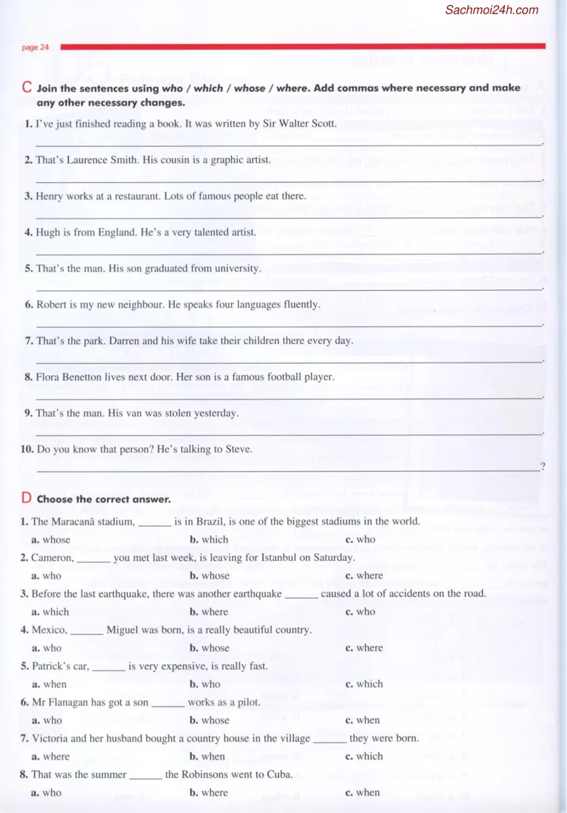
Sachmoi24h.com
page 24
C Join the sentences using who / which / whose / where. Add commas where necessary and make
any other necessary changes.
1. I’ve just finished reading a book. It was written by Sir Walter Scott.
2. That’s Laurence Smith. His cousin is a graphic artist.
3. Henry works at a restaurant. Lots of famous people eat there.
4. Hugh is from England. He’s a very talented artist.
5. That’s the man. His son graduated from university.
6. Robert is my new neighbour. He speaks four languages fluently.
7. That’s the park. Darren and his wife take their children there every day.
8. Flora Benetton lives next door. Her son is a famous football player.
9. That’s the man. His van was stolen yesterday.
10. Do you know that person? He’s talking to Steve.
D Choose the correct answer.
1. The Maracana stadium,
is in Brazil, is one of the biggest stadiums in the world.
a. whose
b. which
c. who
2. Cameron,
you met last week, is leaving for Istanbul on Saturday.
a. who
b. whose
c. where
3. Before the last earthquake, there was another earthquake
_caused a lot of accidents on the road.
a. which
b. where
c. who
4. Mexico,
Miguel was born, is a really beautiful country.
a. who
b. whose
c. where
5; Patrick's car,
is very expensive, is really fast.
a. when
b. who
c. which
6. Mr Flanagan has got a son
-
works as a pilot.
a. who
b. whose
c. when
7. Victoria and her husband bought a country house in the village
they were born.
a. where
b. when
c. which
8. That was the summer .
the Robinsons went to Cuba.
a. who
b. where
c. when
🔗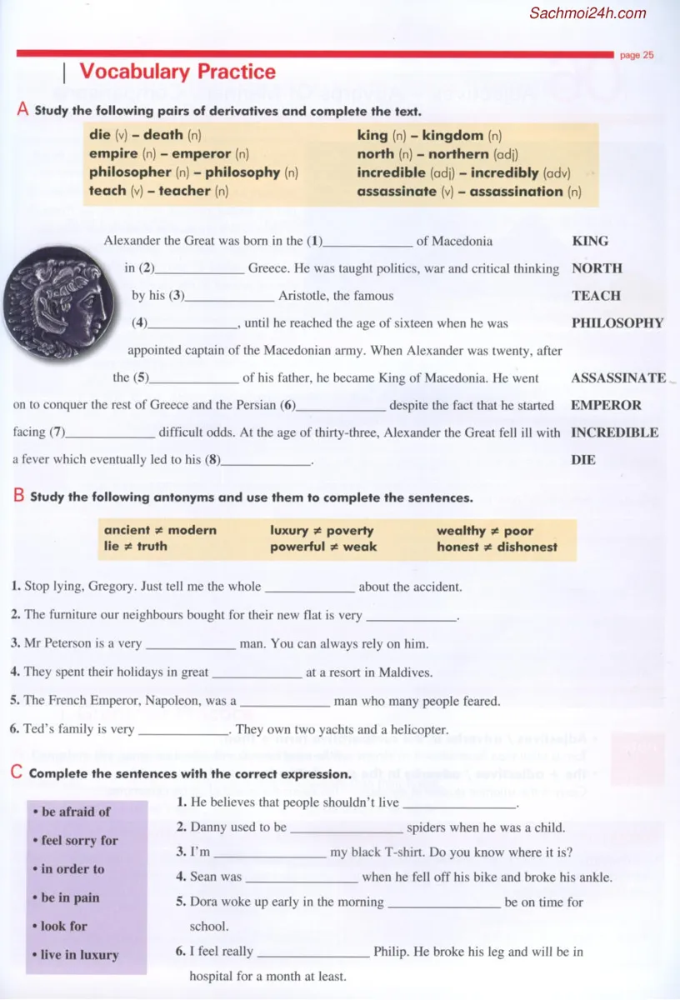
Sachmoi24h.com
page 25
| Vocabulary Practice
A Study the following pairs of derivatives and complete the text.
die (v) - death (n)
king (n) — kingdom (n)
empire (n) - emperor (n)
philosopher (n) a philosophy (n)
teach (v) - teacher (n)
north (n) - northern (adj)
incredible (adj) - incredibly (adv)
assassinate (v) — assassination (n)
Alexander the Great was born in the (1).
_of Macedonia
KING
in (2)_
Greece. He was taught politics, war and critical thinking
NORTH
by his (3)_
Aristotle, the famous
TEACH
(4)
, until he reached the age of sixteen when he was
PHILOSOPHY
appointed captain of the Macedonian army. When Alexander was twenty, after
the (5)_
of his father, he became King of Macedonia. He went
ASSASSINATE
on to conquer the rest of Greece and the Persian (6).
despite the fact that he started
EMPEROR
facing (7)_
difficult odds. At the age of thirty-three, Alexander the Great fell ill with
INCREDIBLE
a fever which eventually led to his (8).
DIE
B Study the following antonyms and use them to complete the sentences.
ancient # modern
luxury # poverty
wealthy # poor
lie # truth
powerful + weak
honest # dishonest
1. Stop lying, Gregory. Just tell me the whole
about the accident.
2. The furniture our neighbours bought for their new flat is very .
3. Mr Peterson is a very
_man. You can always rely on him.
4. They spent their holidays in great.
a resort in Maldives.
5. The French Emperor, Napoleon, was a.
-man who many people feared.
6. Ted’s family is very
. They own two yachts and a helicopter.
C Complete the sentences with the correct expression.
¢ be afraid of
1. He believes that people shouldn’t live’
2. Danny used to be
.
spiders when he was a child.
¢ feel sorry for
Sime
my black T-shirt. Do you know where it is?
¢ in order to
4. Sean was
-
when he fell off his bike and broke his ankle.
¢ be in pain
5. Dora woke up early in the morning
_be on time for
¢ look for
school.
¢ live in luxury
6. I feel really
Philip. He broke his leg and will be in
hospital for a month at least.
🔗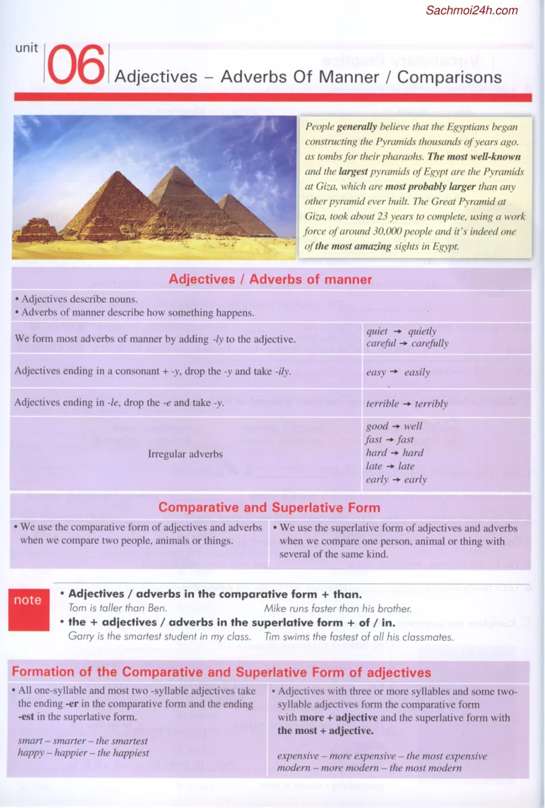
Sachmoi24h.com
unit O06 Adjectives — Adverbs Of Manner / Comparisons
People generally believe that the Egyptians began
constructing the Pyramids thousands of years ago.
as tombs for their pharaohs. The most well-known
and the largest pyramids of Egypt are the Pyramids
at Giza, which are most probably larger than any
other pyramid ever built. The Great Pyramid at
Giza, took about 23 years to complete, using a work
force of around 30,000 people and it’s indeed one
of the most amazing sights in Egypt.
Adjectives / Adverbs of manner
¢ Adjectives describe nouns.
° Adverbs of manner describe how something happens.
We form most adverbs of manner by adding -ly to the adjective.
quiet
careful > carefully
quietly
Adjectives ending in a consonant + -y, drop the -y and take -ily.
easy > easily
Adjectives ending in -le, drop the -e and take -y.
terrible + terribly
good of well
fast > fast
Irregular adverbs
hard “6 hard
late + late
early + early
Comparative and Superlative Form
° We use the comparative form of adjectives and adverbs
¢ We use the superlative form of adjectives and adverbs
when we compare two people, animals or things.
when we compare one person, animal or thing with
several of the same kind.
note
* Adjectives / adverbs in the comparative form + than.
Tom is taller than Ben.
Mike runs faster than his brother.
* the + adjectives / adverbs in the superlative form + of / in.
Garry is the smartest student in my class.
Tim swims the fastest of all his classmates.
Formation of the Comparative
and Superlative Form of adjectives
* All one-syllable and most two -syllable adjectives take
the ending -er in the comparative form and the ending
-est in the superlative form.
smart — smarter — the smartest
happy — happier — the happiest
¢ Adjectives with three or more syllables and some two-
syllable adjectives form the comparative form
with more + adjective and the superlative form with
the most + adjective.
expensive — more expensive — the most expensive
modern — more modern — the most modern
🔗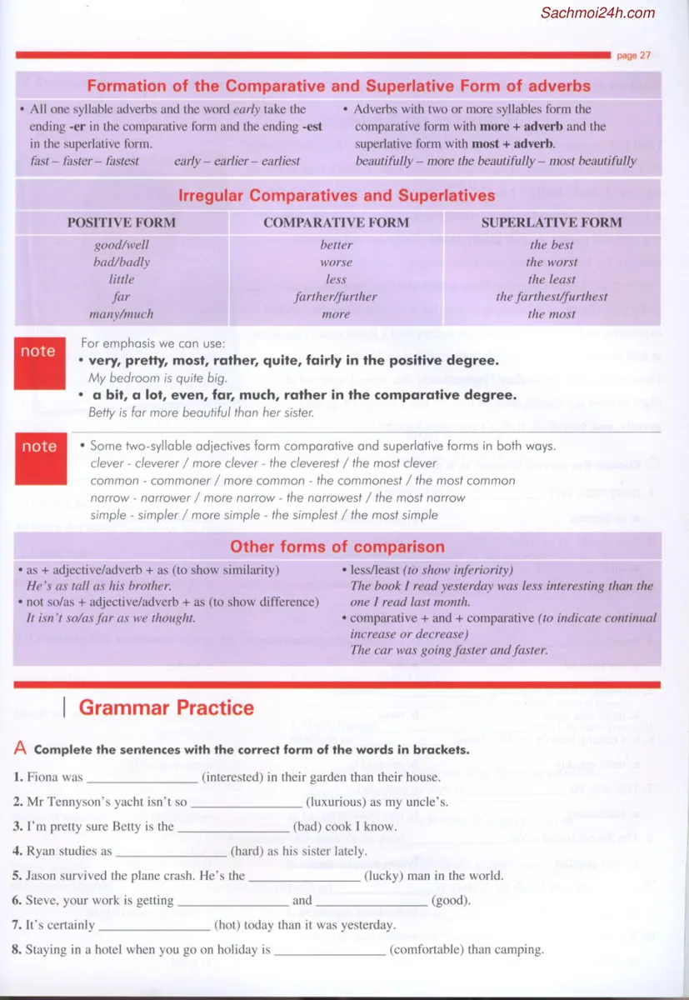
Sachmoi24h.com
page 27
Formation of the Comparative and Superlative Form of adverbs
e All one syllable adverbs and the word early take the
ending -er in the comparative form and the ending -est
in the superlative form.
fast — faster — fastest
early — earlier — earliest
¢ Adverbs with two or more syllables form the
comparative form with more + adverb and the
superlative form with most + adverb.
beautifully — more the beautifully — most beautifully
Irregular Comparatives and Superlatives
POSITIVE
FORM
COMPARATIVE FORM
SUPERLATIVE FORM
good/well
better
the best
bad/badly
worse
the worst
little
less
the least
far
farther/further
the farthest/furthest
many/much
more
the most
note.
° very, pretty, most, rather, quite, fairly in the positive degree.
For emphasis we can use:
My bedroom is quite big.
a bit, a lot, even, far, much, rather in the comparative degree.
Betty is far more beautiful than her sister.
note
* Some two-syllable adjectives form comparative and superlative forms in both ways.
clever - cleverer / more clever - the cleverest / the most clever
common - commoner / more common - the commonest / the most common
narrow - narrower / more narrow - the narrowest / the most narrow
simple - simpler / more simple - the simplest / the most simple
Other forms of comparison
* as + adjective/adverb + as (to show similarity)
¢ less/least (to show inferiority)
He’s as tall as his brother.
The book I read yesterday was less interesting than the
* not so/as + adjective/adverb + as (to show difference)
one I read last month.
It isn’t so/as far as we thought.
* comparative + and + comparative (to indicate continual
increase or decrease)
The car was going faster and faster.
Grammar Practice
A Complete the sentences with the correct form of the words in brackets.
1. Fiona was
-
(interested) in their garden than their house.
2. Mr Tennyson’s yacht isn’t so
(luxurious) as my uncle’s.
3. I’m pretty sure Betty is the.
(bad) cook I know.
4. Ryan studies as
_
(hard) as his sister lately.
5. Jason survived the plane crash. He’s the
(lucky) man in the world.
6. Steve, your work is getting.
and |
_ (good).
7. It’s certainly
(hot) today than it was yesterday.
8. Staying in a hotel when you go on holiday is
(comfortable) than camping.
🔗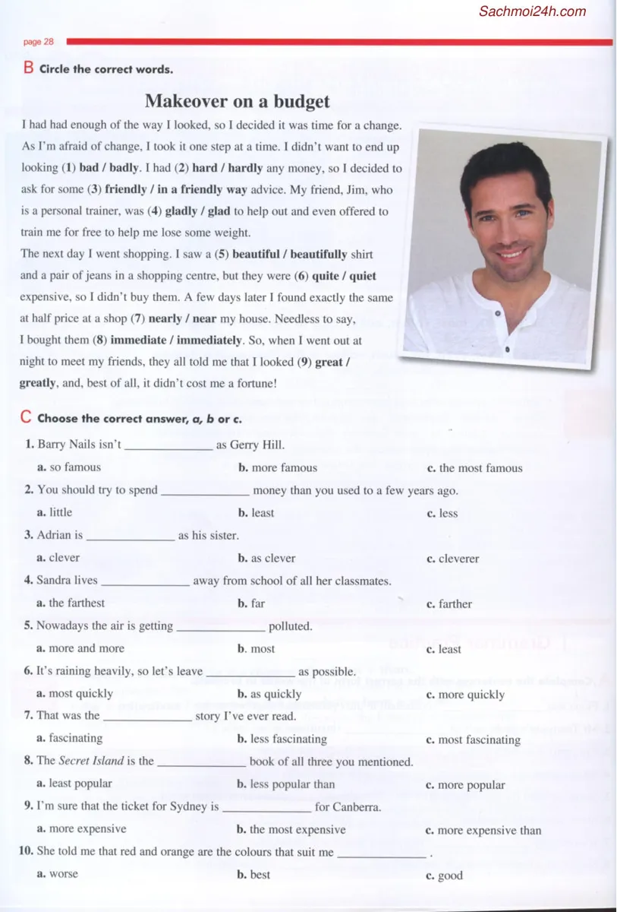
Sachmoi24h.com
page 28
B Circle the correct words.
Makeover on a budget
I had had enough of the way I looked, so I decided it was time for a change.
As I’m afraid of change, I took it one step at a time. I didn’t want to end up
looking (1) bad / badly. I had (2) hard / hardly any money, so I decided to
ask for some (3) friendly / in a friendly way advice. My friend, Jim, who
is a personal trainer, was (4) gladly / glad to help out and even offered to
train me for free to help me lose some weight.
The next day I went shopping. I saw a (5) beautiful / beautifully shirt
and a pair of jeans in a shopping centre, but they were (6) quite / quiet
expensive, so I didn’t buy them. A few days later I found exactly the same
at half price at a shop (7) nearly / near my house. Needless to say,
I bought them (8) immediate / immediately. So, when I went out at
night to meet my friends, they all told me that I looked (9) great /
greatly, and, best of all, it didn’t cost me a fortune!
a Choose the correct answer, a, b or c.
1. Barry Nails isn’t
|
_as Gerry Hill.
a. so famous
b. more famous
c. the most famous
2. You should try to spend.
money than you used to a few years ago.
a. little
b. least
c. less
3. Adrian is
_as his sister.
a. clever
b. as clever
c. cleverer
4. Sandra lives
away from school of all her classmates.
a. the farthest
b. far
c. farther
5. Nowadays the air is getting |
polluted.
a. more and more
b. most
c. least
6. It’s raining heavily, so let’s leave
=
_as possible.
a. most quickly
b. as quickly
c. more quickly
7. That was the
.
story I’ve ever read.
a. fascinating
b. less fascinating
c. most fascinating
8. The Secret Island is the
book of all three you mentioned.
a. least popular
b. less popular than
c. more popular
9. I’m sure that the ticket for Sydney is
-
_for Canberra.
a. more expensive
b. the most expensive
c. more expensive than
10. She told me that red and orange are the colours that suit me
a. worse
b. best
c. good
🔗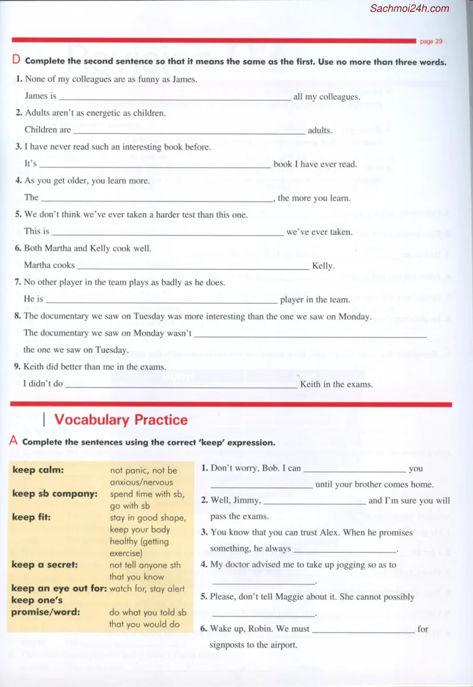
Sachmoi24h.com
page 29
D Complete the second sentence so that it means the same as the first. Use no more than three words.
1. None of my colleagues are as funny as James.
James is
-
all my colleagues.
2. Adults aren’t as energetic as children.
Children are
_adults.
3. I have never read such an interesting book before.
_book I have ever read.
4. As you get older, you learn more.
The -
, the more you learn.
5. We don’t think we’ve ever taken a harder test than this one.
This is
|
we’ ve ever taken.
6. Both Martha and Kelly cook well.
Martha cooks
7. No other player in the team plays as badly as he does.
He is.
player in the team.
8. The documentary we saw on Tuesday was more interesting than the one we saw on Monday.
The documentary we saw on Monday wasn’t
the one we saw on Tuesday.
9. Keith did better than me in the exams.
I didn’t do-
_Keith in the exams.
| Vocabulary Practice
A Complete the sentences using the correct ‘keep’ expression.
keep calm:
not panic, not be
1. Don’t worry, Bob. I can
you
anxious/nervous
keep sb company:
until your brother comes home.
spend time with sb,
2. Well, Jimmy,
go with sb
_and I’m sure you will
keep fit:
stay in good shape,
pass the exams.
keep your body
3. You know that you can trust Alex. When he promises
healthy (getting
exercise)
something, he always.
keep a secret:
not tell anyone sth
4. My doctor advised me to take up jogging so as to
that you know
keep an eye out for: watch for, stay alert
keep one’s
5. Please, don’t tell Maggie about it. She cannot possibly
promise/word:
do what you told sb
that you would do
6. Wake up, Robin. We must.
for
signposts to the airport.
🔗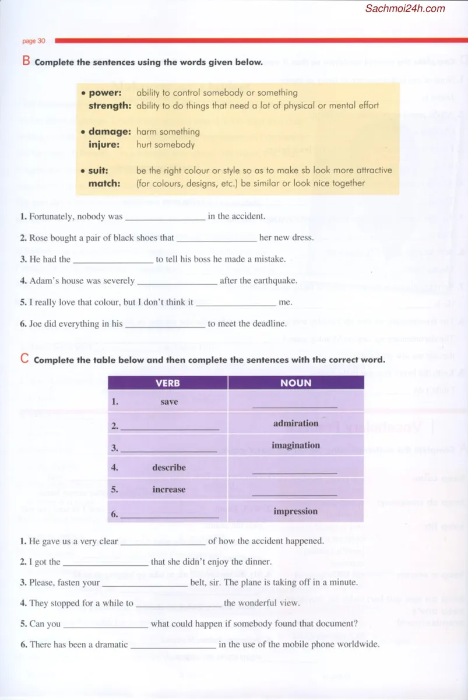
Sachmoi24h.com
page 30
B Complete the sentences using the words given below.
power: |
ability to control somebody or something
strength: ability to do things that need a lot of physical or mental effort
e damage: harm something
injure:
hurt somebody
e suit:
be the right colour or style so as to make sb look more attractive
match:
(for colours, designs, etc.) be similar or look nice together
1. Fortunately, nobody was
_in the accident.
2. Rose bought a pair of black shoes that
her new dress.
3. He had the
to tell his boss he made a mistake.
4. Adam’s house was severely
after the earthquake.
5. I really love that colour, but I don’t think it
me.
6. Joe did everything in his
to meet the deadline.
C Complete the table below and then complete the sentences with the correct word.
VERB
NOUN
1:
save
2.
admiration
a
imagination
4.
describe
a
increase
6.
impression
1. He gave us a very clear
of how the accident happened.
2. I got the.
that she didn’t enjoy the dinner.
3. Please, fasten your
belt, sir. The plane is taking off in a minute.
4. They stopped for a while to
|
the wonderful view.
5. Can you |
what could happen if somebody found that document?
6. There has been a dramatic
in the use of the mobile phone worldwide.
🔗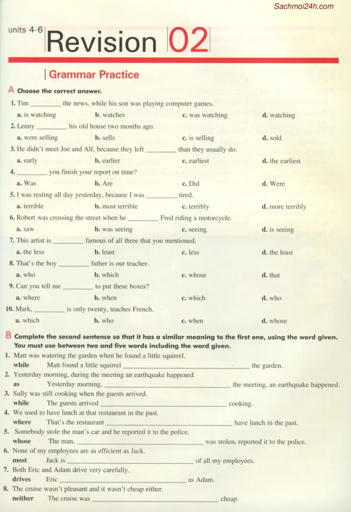
Sachmoi24h.com
units 4-6 |
Revision O2
Grammar Practice
A Choose the correct answer.
1. Tim
-
_the news, while his son was playing computer games.
a. is watching
b. watches
c. was watching
d. watching
2. Lenny -
his old house two months ago.
a. were selling
b. sells
c. is selling
d. sold
3. He didn’t meet Joe and Alf, because they left
than they usually do.
a. early
b. earlier
c. earliest
d. the earliest
4.
_you finish your report on time?
a. Was
b. Are
c. Did
d. Were
5. I was resting all day yesterday, because I was.
tired.
a. terrible
b. most terrible
c. terribly
d. more terribly
6. Robert was crossing the street when he
Fred riding a motorcycle.
a. SAW
b. was seeing
c. seeing
d. is seeing
7. This artist is
_
famous of all three that you mentioned.
a. the less
b. least
c. less
d. the least
8. That’s the boy |
father is our teacher.
a. who
b. which
c. whose
d. that
9. Can you tell me.
_to put these boxes?
a. where
b. when
c. which
d. who
10. Mark,
_is only twenty, teaches French.
a. which
b. who
c. when
d. whose
B Complete the second sentence so that it has a similar meaning to the first one, using the word given.
You must use between two and five words including the word given.
1. Matt was watering the garden when he found a little squirrel.
while
Matt found a little squirrel =
_the garden.
2. Yesterday morning, during the meeting an earthquake happened.
as
Yesterday morning,
_the meeting, an earthquake happened.
3. Sally was still cooking when the guests arrived.
while
The guests arrived
_
_ cooking.
4. We used to have lunch at that restaurant in the past.
where
That’s the restaurant.
_have lunch in the past.
5. Somebody stole the man’s car and he reported it to the police.
whose
The man, _
was stolen, reported it to the police.
6. None of my employees are as efficient as Jack.
most
Jack is
of all my employees.
7. Both Eric and Adam drive very carefully.
drives
Eric
ia
_as Adam.
8. The cruise wasn’t pleasant and it wasn’t cheap either.
neither
The cruise was
-
_ cheap.
🔗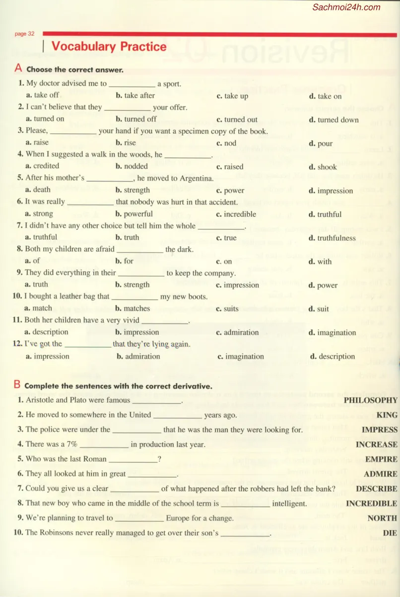
Sachmoi24h.com
page 32
Vocabulary Practice
A Choose the correct answer.
1. My doctor advised me to
_a sport.
a. take off
b. take after
c. take up
d. take on
2. I can’t believe that they
_your offer.
a. turned on
b. turned off
c. turned out
d. turned down
3. Please, _
your hand if you want a specimen copy of the book.
a. raise
b. rise
c. nod
d. pour
4. When I suggested a walk in the woods, he.
a. credited
b. nodded
c. raised
d. shook
5. After his mother’s
_, he moved to Argentina.
a. death
b. strength
c. power
d. impression
6. It was really |
_that nobody was hurt in that accident.
a. strong
b. powerful
c. incredible
d. truthful
7. I didn’t have any other choice but tell him the whole
a. truthful
b. truth
c. true
d. truthfulness
8. Both my children are afraid
_
the dark.
a. of
b. for
c. on
d. with
9. They did everything in their.
_to keep the company.
a. truth
b. strength
c. impression
d. power
10. I bought a leather bag that
al
my new boots.
a. match
b. matches
c. suits
d. suit
11. Both her children have a very vivid
a. description
b. impression
c. admiration
d. imagination
12. P've got the
that they’re lying again.
a. impression
b. admiration
c. imagination
d. description
B Complete the sentences with the correct derivative.
1. Aristotle and Plato were famous
PHILOSOPHY
2. He moved to somewhere in the United
_years ago.
KING
3. The police were under the
that he was the man they were looking for.
IMPRESS
4. There was a 7%
in production last year.
INCREASE
5. Who was the last Roman
ai
EMPIRE
6. They all looked at him in great
ADMIRE
7. Could you give us a clear |
of what happened after the robbers had left the bank?
DESCRIBE
8. That new boy who came in the middle of the school term is
intelligent.
INCREDIBLE
9. We’re planning to travel to
.
Europe for a change.
NORTH
10. The Robinsons never really managed to get over their son’s
|
DIE
🔗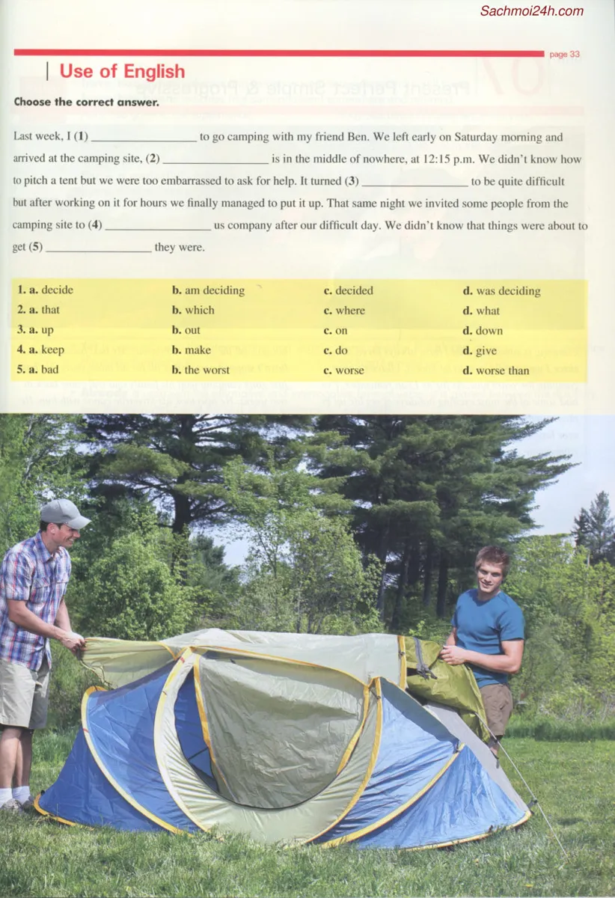
Sachmoi24h.com
page 33
| Use of English
Choose the correct answer.
Last week, I (1)
_to go camping with my friend Ben. We left early on Saturday morning and
arrived at the camping site, (2)
is in the middle of nowhere, at 12:15 p.m. We didn’t know how
to pitch a tent but we were too embarrassed to ask for help. It turned (3).
to be quite difficult
but after working on it for hours we finally managed to put it up. That same night we invited some people from the
camping site to (4)
_us company after our difficult day. We didn’t know that things were about to
get (5).
_they were.
1. a. decide
b. am deciding
c. decided
d. was deciding
2. a. that
b. which
c. where
d. what
3. a. up
b. out
c. on
d. down
4. a. keep
b. make
c. do
d. give
5. a. bad
b. the worst
c. worse
d. worse than
🔗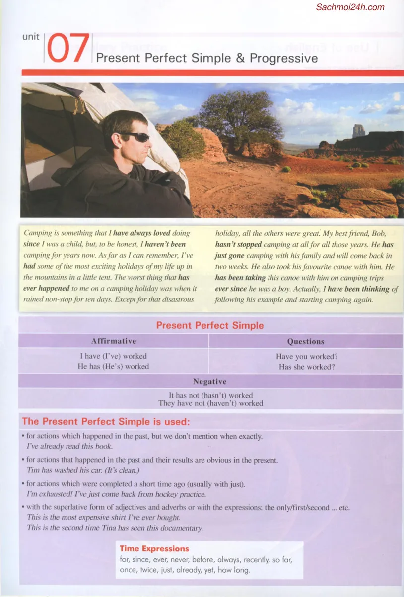
Sachmoi24h.com
unit O7 Present Perfect Simple & Progressive
Camping is something that I have always loved doing
since I was a child, but, to be honest, I haven’t been
camping for years now. As far as I can remember, I’ve
had some of the most exciting holidays of my life up in
the mountains in a little tent. The worst thing that has
ever happened to me on a camping holiday was when it
rained non-stop for ten days. Except for that disastrous
holiday, all the others were great. My best friend, Bob,
hasn’t stopped camping at all for all those years. He has
just gone camping with his family and will come back in
two weeks. He also took his favourite canoe with him. He
has been taking this canoe with him on camping trips
ever since he was a boy. Actually, I have been thinking of
following his example and starting camping again.
Present Perfect Simple
Affirmative
Questions
I have (I’ve) worked
Have you worked?
He has (He’s) worked
Has she worked?
Negative
It has not
worked
They have not (haven’t) worked
The Present Perfect Simple is used:
* for actions which happened in the past, but we don’t mention when exactly.
I’ve already read this book.
° for actions that happened in the past and their results are obvious in the present.
Tim has washed his car. (It’s clean.)
* for actions which were completed a short time ago (usually with just).
I’m exhausted! I’ve just come back from hockey practice.
* with the superlative form of adjectives and adverbs or with the expressions: the only/first/second ... etc.
This is the most expensive shirt I’ve ever bought.
This is the second time Tina has seen this documentary.
Time Expressions
for, since, ever, never, before, always, recently, so far,
once, twice, just, already, yet, how long.
🔗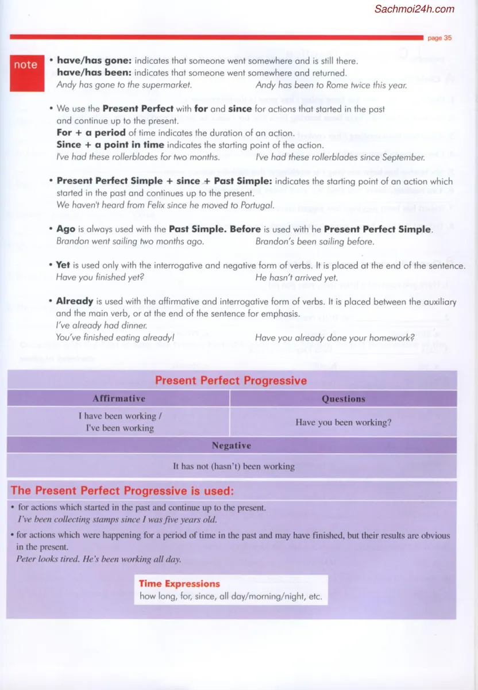
Sachmoi24h.com
page 35
note
* have/has gone: indicates that someone went somewhere and is still there.
have/has been: indicates that someone went somewhere and returned.
Andy has gone to the supermarket.
Andy has been to Rome twice this year.
¢ We use the Present Perfect with for and since for actions that started in the past
and continue up to the present.
For + a period of time indicates the duration of an action.
Since +a point in time indicates the starting point of the action.
I've had these rollerblades for two months.
I've had these rollerblades since September.
* Present Perfect Simple + since + Past Simple: indicates the starting point of an action which
started in the past and continues up to the present.
We haven't heard from Felix since he moved to Portugal.
* Ago is always used with the Past Simple. Before is used with he Present Perfect Simple.
Brandon went sailing two months ago.
Brandon’s been sailing before.
° Yet is used only with the interrogative and negative form of verbs. It is placed at the end of the sentence.
Have you finished yet?
He hasn’t arrived yet.
° Already is used with the affirmative and interrogative form of verbs. It is placed between the auxiliary
and the main verb, or at the end of the sentence for emphasis.
I’ve already had dinner.
You've finished eating already!
Have you already done your homework?
Present Perfect Progressive
Affirmative
Questions
I have been working /
I've been working
Have you been working?
Negative
It has not (hasn’t) been working
The Present Perfect Progressive is used:
* for actions which started in the past and continue up to the present.
I’ve been collecting stamps since I was five years old.
* for actions which were happening for a period of time in the past and may have finished, but their results are obvious
in the present.
Peter looks tired. He’s been working all day.
Time Expressions
how long, for, since, all day/morning/night, etc.
🔗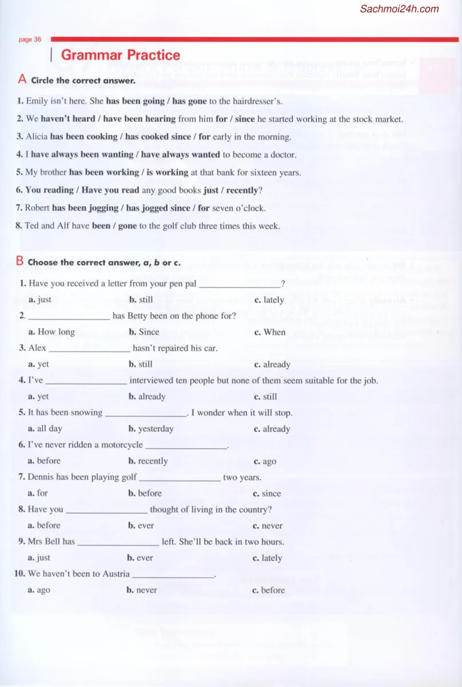
Sachmoi24h.com
page 36
Grammar Practice
A Circle the correct answer.
1. Emily isn’t here. She has been going / has gone to the hairdresser’s.
2. We haven’t heard / have been hearing from him for / since he started working at the stock market.
3. Alicia has been cooking / has cooked since / for early in the morning.
4. I have always been wanting / have always wanted to become a doctor.
5. My brother has been working / is working at that bank for sixteen years.
6. You reading / Have you read any good books just / recently?
7. Robert has been jogging / has jogged since / for seven o’clock.
8. Ted and Alf have been / gone to the golf club three times this week.
B Choose the correct answer, a, b or c.
1. Have you received a letter from your pen pal
a. just
b. still
c. lately
2.
has Betty been on the phone for?
a. How long
b. Since
c. When
3. Alex
-
_hasn’t repaired his car.
a. yet
b. still
c. already
4. I’ve
_
interviewed ten people but none of them seem suitable for the job.
a. yet
b. already
ce. still
5. It has been snowing
. | wonder when it will stop.
a. all day
b. yesterday
c. already
6. I’ve never ridden a motorcycle
a. before
b. recently
c. ago
7. Dennis has been playing golf -
_two years.
a. for
b. before
c. since
8. Have you =
thought of living in the country?
a. before
b. ever
c. never
9. Mrs Bell has
left.
be back in two hours.
a. just
b. ever
c. lately
10. We haven’t been to Austria
a. ago
b. never
c. before
🔗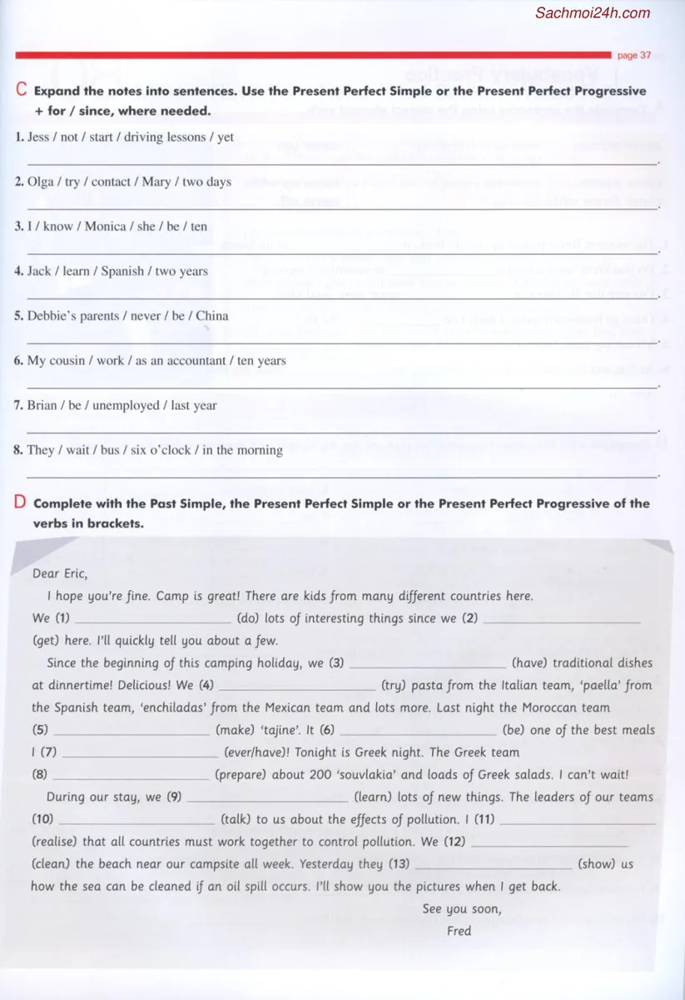
Sachmoi24h.com
age 37
Expand the notes into sentences. Use the Present Perfect Simple or the Present Perfect Progressive
+ for / since, where needed.
1. Jess / not / start / driving lessons / yet
2. Olga / try / contact / Mary / two days
3. I / know / Monica / she / be / ten
4. Jack / learn / Spanish / two years
5. Debbie’s parents / never / be / China
6. My cousin / work / as an accountant / ten years
7. Brian / be / unemployed / last year
8. They / wait / bus / six o’clock / in the morning
D Complete with the Past Simple, the Present Perfect Simple or the Present Perfect Progressive of the
verbs in brackets.
Dear Eric,
| hope you’re fine. Camp is great! There are kids from many different countries here.
We (1)
(do) lots of interesting things since we (2)
(get) here. I’ll quickly tell you about a few.
Since the beginning of this camping holiday, we (3)
(have) traditional dishes
at dinnertime! Delicious! We (4)
(try) pasta from the Italian team, ‘paella’ from
the Spanish team, ‘enchiladas’ from the Mexican team and lots more. Last night the Moroccan team
(5)
(make) ‘tajine’. It (6)
(be) one of the best meals
| (7)
(ever/have)! Tonight is Greek night. The Greek team
(8)
(prepare) about 200 ‘souvlakia’ and loads of Greek salads. | can’t wait!
During our stay, we (9)
(learn) lots of new things. The leaders of our teams
(10)
(talk) to us about the effects of pollution. | (11)
(realise) that all countries must work together to control pollution. We (12)
(clean) the beach near our campsite all week. Yesterday they (13)
(show) us
how the sea can be cleaned if an oil spill occurs. I’ll show you the pictures when | get back.
See you soon,
Fred
🔗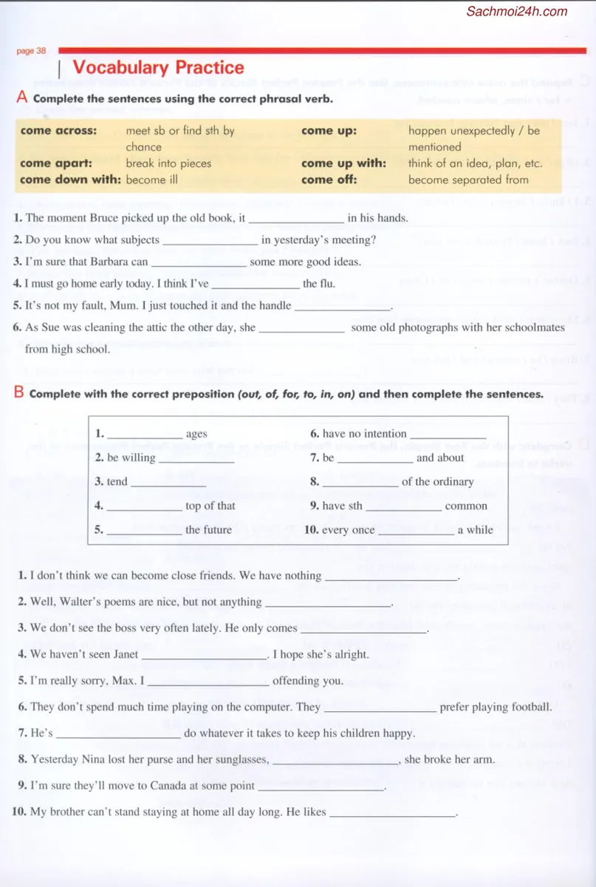
Sachmoi24h.com
Vocabulary Practice
A Complete the sentences using the correct phrasal verb.
come across:
meet sb or find sth by
come up:
happen unexpectedly / be
chance
mentioned
come apart:
break into pieces
come up with:
think of an idea, plan, etc.
come down with: become ill
come off:
become separated from
1. The moment Bruce picked up the old book, it
in his hands.
2. Do you know what subjects
_in yesterday’s meeting?
3. I’m sure that Barbara can
_some more good ideas.
4. I must go home early today. I think I’ ve
the flu.
5. It’s not my fault, Mum. I just touched it and the handle
6. As Sue was cleaning the attic the other day, she
some old photographs with her schoolmates
from high school.
B Complete with the correct preposition (out, of, for, to, in, on) and then complete the sentences.
i
_ages
6. have no intention.
2. be willing |
7. be.
_and about
3. tend
|
8.
_of the ordinary
4.
_top of that
9, have sth
|
common
5.
the future
10. every once
=
_a while
1. I don’t think we can become close friends. We have nothing
2. Well, Walter’s poems are nice, but not anything
3. We don’t see the boss very often lately. He only comes
4. We haven’t seen Janet
.
[hope she’s alright.
5. I’m really sorry, Max. I
_ offending you.
6. They don’t spend much time playing on the computer. They
_prefer playing football.
7. He’s |
_do whatever it takes to keep his children happy.
8. Yesterday Nina lost her purse and her sunglasses,
_, she broke her arm.
9. I’m sure they’ll move to Canada at some point
10. My brother can’t stand staying at home all day long. He likes
🔗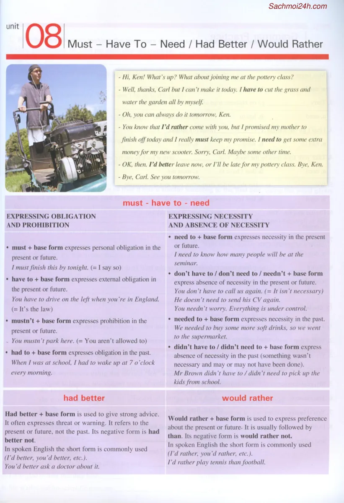
Sachmoi24h.com
unit
Must — Have To — Need / Had Better / Would Rather
- Hi, Ken! What’s up? What about joining me at the pottery class?
- Well, thanks, Carl but I can’t make it today. I have to cut the grass and
water the garden all by myself.
- Oh, you can always do it tomorrow, Ken.
- You know that I'd rather come with you, but I promised my mother to
finish off today and I really must keep my promise. I need to get some extra
money for my new scooter. Sorry, Carl. Maybe some other time.
- OK, then. I'd better leave now, or I'll be late for my pottery class. Bye, Ken.
- Bye, Carl. See you tomorrow.
EXPRESSING OBLIGATION
EXPRESSING NECESSITY
AND PROHIBITION
AND ABSENCE OF NECESSITY
¢ need to + base form expresses necessity in the present
* must + base form expresses personal obligation in the
or future.
present or future.
I need to know how many people will be at the
I must finish this by tonight. (= I say so)
seminar.
* have to + base form expresses external obligation in
¢ don’t have to / don’t need to / needn’t + base form
express absence of necessity in the present or future.
the present or future.
You don’t have to call us again. (= It isn’t necessary)
You have to drive on the left when you’re in England.
(= It’s the law)
¢ mustn’t + base form expresses prohibition in the
present or future.
You mustn’t park here. (= You aren’t allowed to)
¢ had to + base form expresses obligation in the past.
When I was at school, I had to wake up at 7 o'clock
every morning.
had better
Had better + base form is used to give strong advice.
It often expresses threat or warning. It refers to the
present or future, not the past. Its negative form is had
better not.
In spoken English the short form is commonly used
(I'd better, you’d better, etc.).
You’d better ask a doctor about it.
He doesn’t need to send his CV again.
You needn’t worry. Everything is under control.
¢ needed to + base form expresses necessity in the past.
We needed to buy some more soft drinks, so we went
to the supermarket.
didn’t have to / didn’t need to + base form express
absence of necessity in the past (something wasn’t
necessary and may or may not have been done).
Mr Brown didn’t have to / didn’t need to pick up the
kids from school.
would rather
Would rather + base form is used to express preference
about the present or future. It is usually followed by
than. Its negative form is would rather not.
In spoken English the short form is commonly used
(I'd rather, you’d rather, etc.).
Id rather play tennis than football.
🔗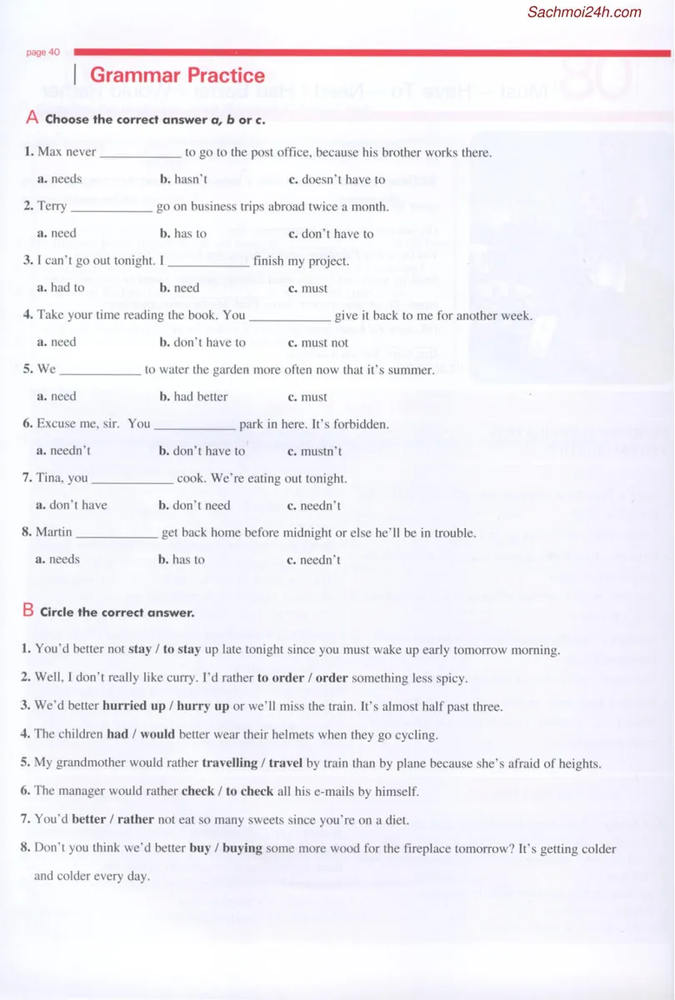
Sachmoi24h.com
page 40
Grammar Practice
A Choose the correct answer a, b or c.
1. Max never
to go to the post office, because his brother works there.
a. needs
b. hasn’t
c. doesn’t have to
2. Terry |
_go on business trips abroad twice a month.
a. need
b. has to
c. don’t have to
3. I can’t go out tonight. I.
finish my project.
a. had to
b. need
c. must
4. Take your time reading the book. You
give it back to me for another week.
a. need
b. don’t have to
c. must not
5. We.
to water the garden more often now that it’s summer.
a. need
b. had better
c. must
6. Excuse me, sir. You
park in here. It’s forbidden.
a. needn’t
b. don’t have to
c. mustn’t
7. Tina, you
_cook. We’re eating out tonight.
a. don’t have
b. don’t need
c. needn’t
8. Martin:
_ get back home before midnight or else
be in trouble.
a. needs
b. has to
c. needn’t
B Circle the correct answer.
1. You’d better not stay / to stay up late tonight since you must wake up early tomorrow morning.
2. Well, I don’t really like curry. I’d rather to order / order something less spicy.
3. We’d better hurried up / hurry up or we’ll miss the train. It’s almost half past three.
4. The children had / would better wear their helmets when they go cycling.
5. My grandmother would rather travelling / travel by train than by plane because she’s afraid of heights.
6. The manager would rather check / to check all his e-mails by himself.
7. You'd better / rather not eat so many sweets since you’re on a diet.
8. Don’t you think we’d better buy / buying some more wood for the fireplace tomorrow? It’s getting colder
and colder every day.
🔗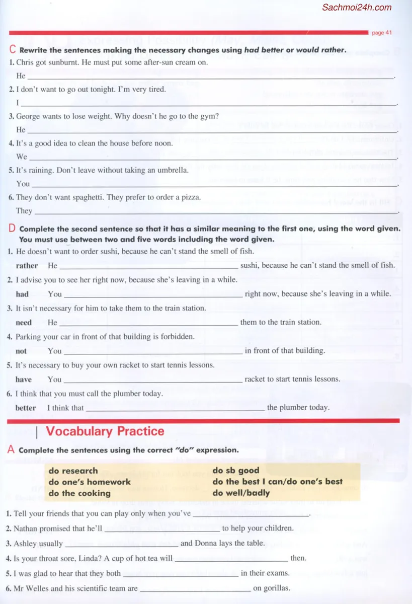
Sachmoi24h.com
page 41
C Rewrite the sentences making the necessary changes using had better or would rather.
1. Chris got sunburnt. He must put some after-sun cream on.
He
2. 1 don’t want to go out tonight. I’m very tired.
3. George wants to lose weight. Why doesn’t he go to the gym?
He
4, It’s a good idea to clean the house before noon.
We.
5. It’s raining. Don’t leave without taking an umbrella.
You
6. They don’t want spaghetti. They prefer to order a pizza.
They
D Complete the second sentence so that it has a similar meaning to the first one, using the word given.
You must use between two and five words including the word given.
1. He doesn’t want to order sushi, because he can’t stand the smell of fish.
rather
He
sushi, because he can’t stand the smell of fish.
2. I advise you to see her right now, because she’s leaving in a while.
had
You
-
right now, because she’s leaving in a while.
3. It isn’t necessary for him to take them to the train station.
need
He
them to the train station.
4, Parking your car in front of that building is forbidden.
You
.
not
in front of that building.
5. It’s necessary to buy your own racket to start tennis lessons.
have
You
racket to start tennis lessons.
6. I think that you must call the plumber today.
better
I think that
the plumber today.
Vocabulary Practice
A Complete the sentences using the correct “do” expression.
do research
do sb good
do one’s homework
do the best I can/do one’s best
do the cooking
do well/badly
1. Tell your friends that you can play only when you’ ve
2. Nathan promised that
_
_to help your children.
3. Ashley usually
_and Donna lays the table.
4. Is your throat sore, Linda? A cup of hot tea will
then.
5. I was glad to hear that they both
_in their exams.
6. Mr Welles and his scientific team are.
_on gorillas.
🔗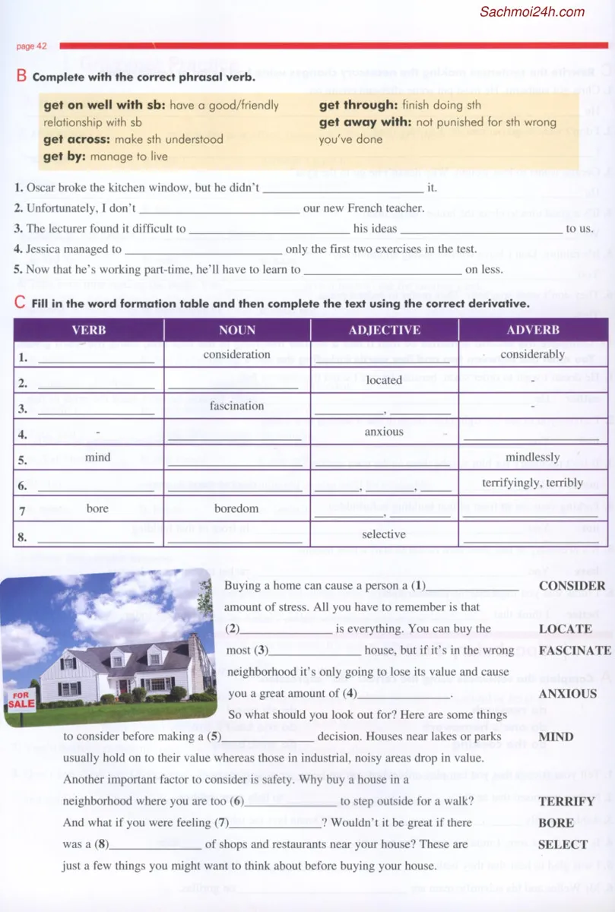
Sachmoi24h.com
page 42
B Complete with the correct phrasal verb.
get on well with sb: have a good/friendly
relationship with sb
get across: make sth understood
get by: manage to live
1. Oscar broke the kitchen window, but he didn’t
2. Unfortunately, I don’t
3. The lecturer found it difficult to
get through: finish doing sth
get away with: not punished for sth wrong
you've done
It.
our new French teacher.
his ideas
to us.
4. Jessica managed to
only the first two exercises in the test.
5. Now that he’s working part-time, he’ll have to learn to
on less.
C Fill in the word formation table and then complete the text using the correct derivative.
VERB
NOUN
ADJECTIVE
ADVERB
consideration
considerably
2.
located
3.
fascination
anxious
mind
mindlessly
| 6.
terrifyingly, terribly
Ka
bore
boredom
18.
selective
Buying a home can cause a person a (1).
CONSIDER
amount of stress. All you have to remember is that
(2)_
is everything. You can buy the
LOCATE
most (3)_
_house, but if it’s in the wrong
FASCINATE
neighborhood it’s only going to lose its value and cause
Be]
you a great amount of (4)_
ANXIOUS
1
|
So what should you look out for? Here are some things
to consider before making a (5)
_decision. Houses near lakes or parks
MIND
usually hold on to their value whereas those in industrial, noisy areas drop in value.
Another important factor to consider is safety. Why buy a house in a
neighborhood where you are too (6),
_
to step outside for a walk?
TERRIFY
And what if you were feeling (7).
_? Wouldn’t it be great if there
BORE
was a (8)_
of shops and restaurants near your house? These are
SELECT
just a few things you might want to think about before buying your house.
🔗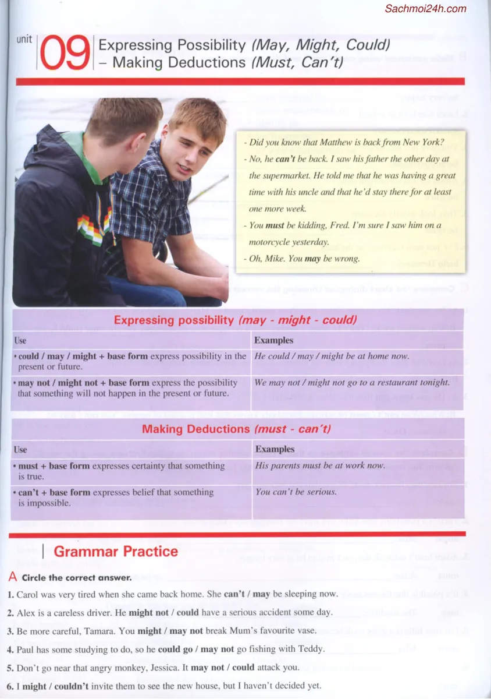
Sachmoi24h.com
unit
Expressing Possibility (Vay, Might, Could)
Making Deductions (Must, Can’t)
Did you know that Matthew is back from New York?
- No, he can’t be back. I saw his father the other day at
the supermarket. He told me that he was having a great
time with his uncle and that he’d stay there for at least
one more week.
- You must be kidding, Fred. I’m sure I saw him on a
motorcycle yesterday.
- Oh, Mike. You may be wrong.
Expressing possibility (may - might - could)
Use
Examples
* could / may / might + base form express possibility in the
/ He could / may / might be at home now.
present or future.
*may not / might not + base form express the possibility
We may not / might not go to a restaurant tonight.
that something will not happen in the present or future.
Making Deductions (must - can’t)
Use
Examples
* must + base form expresses certainty that something
His parents must be at work now.
is true.
* can’t + base form expresses belief that something
You can’t be serious.
is impossible.
Grammar Practice
A Circle the correct answer.
1. Carol was very tired when she came back home. She can’t / may be sleeping now.
2. Alex is a careless driver. He might not / could have a serious accident some day.
3. Be more careful, Tamara. You might / may not break Mum’s favourite vase.
4. Paul has some studying to do, so he could go / may not go fishing with Teddy.
5. Don’t go near that angry monkey, Jessica. It may not / could attack you.
6. | might / couldn’t invite them to see the new house, but I haven’t decided yet.
🔗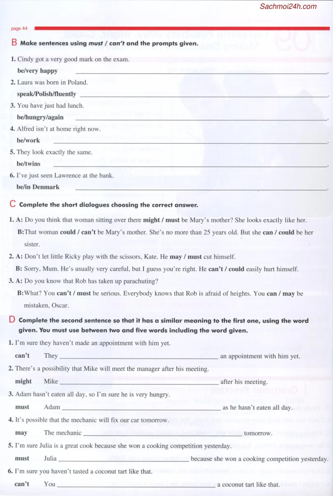
Sachmoi24h.com
page 44
B Make sentences using must / can’t and the prompts given.
1. Cindy got a very good mark on the exam.
be/very happy
2. Laura was born in Poland.
speak/Polish/fluently
3. You have just had lunch.
be/hungry/again
4. Alfred isn’t at home right now.
be/work
5. They look exactly the same.
be/twins
6. I’ve just seen Lawrence at the bank.
be/in Denmark
Cc Complete the short dialogues choosing the correct answer.
1. A: Do you think that woman sitting over there might / must be Mary’s mother? She looks exactly like her.
B:That woman could / can’t be Mary’s mother. She’s no more than 25 years old. But she can / could be her
sister.
2. A: Don’t let little Ricky play with the scissors, Kate. He may / must cut himself.
B: Sorry, Mum. He’s usually very careful, but I guess you’re right. He can’t / could easily hurt himself.
3. A: Do you know that Rob has taken up parachuting?
B: What? You can’t / must be serious. Everybody knows that Rob is afraid of heights. You can / may be
mistaken, Oscar.
D Complete the second sentence so that it has a similar meaning to the first one, using the word
given. You must use between two and five words including the word given.
1. I’m sure they haven’t made an appointment with him yet.
can’t
They
an appointment with him yet.
2. There’s a possibility that Mike will meet the manager after his meeting.
might
Mike
|
_after his meeting.
3. Adam hasn’t eaten all day, so I’m sure he is very hungry.
must
Adam.
_as he hasn’t eaten all day.
4. It’s possible that the mechanic will fix our car tomorrow.
may
The mechanic.
_tomorrow.
5. I’m sure Julia is a great cook because she won a cooking competition yesterday.
must
Julia.
_because she won a cooking competition yesterday.
6. I’m sure you haven’t tasted a coconut tart like that.
can’t
You
aa
-a coconut tart like that.
🔗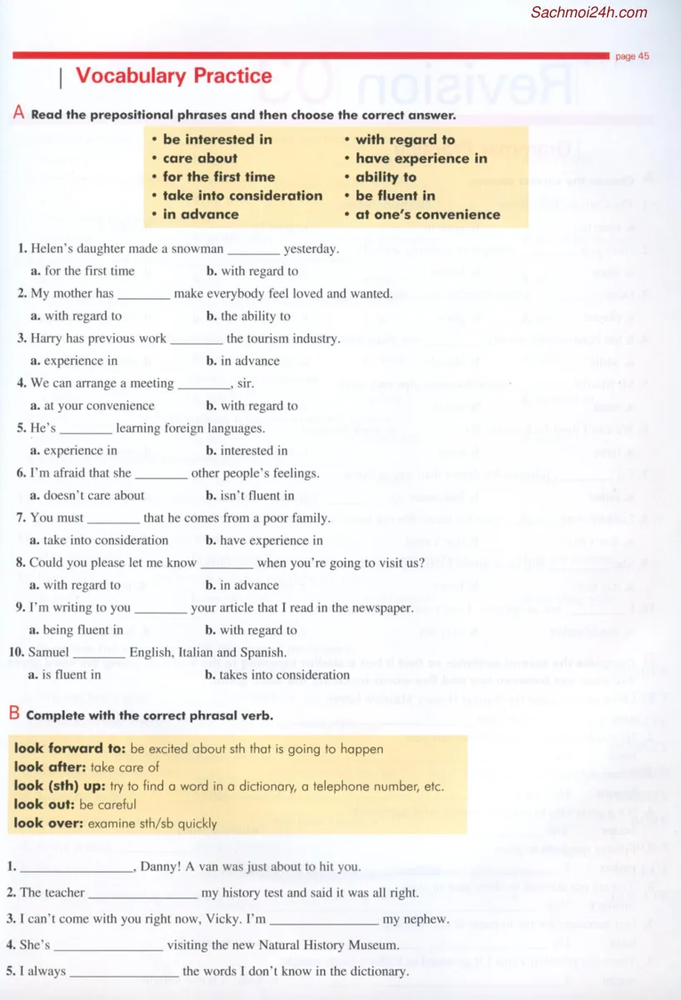
Sachmoi24h.com
page 45
Vocabulary Practice
A Read the prepositional phrases and then choose the correct answer.
¢ be interested in
¢ with regard to
* care about
have experience in
* for the first time
* ability to
take into consideration
¢ be fluent in
e in advance
¢ at one’s convenience
1. Helen’s daughter made a snowman
yesterday.
a. for the first time
b. with regard to
2. My mother has |
make everybody feel loved and wanted.
a. with regard to
b. the ability to
3. Harry has previous work
_the tourism industry.
a. experience in
b. in advance
4. We can arrange a meeting.
, Sir.
a. at your convenience
b. with regard to
5. He’s
.
_learning foreign languages.
a. experience in
b. interested in
6. I’m afraid that she
-
other people’s feelings.
a. doesn’t care about
b. isn’t fluent in
7. You must
-
that he comes from a poor family.
a. take into consideration
b. have experience in
8. Could you please let me know
|
when you’re going to visit us?
a. with regard to
b. in advance
9. I’m writing to you =
_your article that I read in the newspaper.
a. being fluent in
b. with regard to
10. Samuel
|
English, Italian and Spanish.
a. is fluent in
b. takes into consideration
B Complete with the correct phrasal verb.
look forward to: be excited about sth that is going to happen
look after: take care of
look (sth) up: try to find a word in a dictionary, a telephone number, etc.
look out: be careful
look over: examine sth/sb quickly
i
Danny! A van was just about to hit you.
2. The teacher
-
_my history test and said it was all right.
3. I can’t come with you right now, Vicky. I’m.
my nephew.
4. She’s
_
visiting the new Natural History Museum.
5. I always .
the words I don’t know in the dictionary.
🔗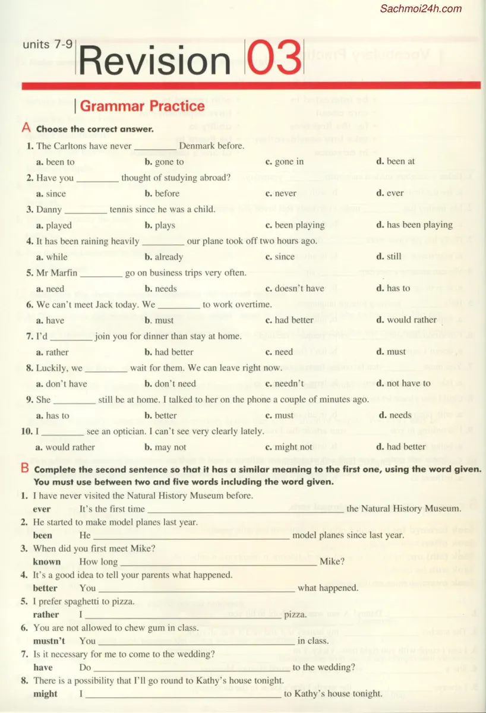
Sachmoi24h.com
units 7-9 Revision O3
risiudsooV
Grammar Practice
A Choose the correct answer.
1. The Carltons have never
Denmark before.
a. been to
b. gone to
c. gone in
d. been at
2. Have you
thought of studying abroad?
a. since
b. before
c. never
d. ever
3. Danny .
tennis since he was a child.
a. played
b. plays
c. been playing
d. has been playing
4. It has been raining heavily
our plane took off two hours ago.
a. while
b. already
c. since
d. still
5. Mr Marfin
_go on business trips very often.
a. need
b. needs
c. doesn’t have
d. has to
6. We can’t meet Jack today. We
to work overtime.
a. have
b. must
c. had better
d. would rather
Tera
_join you for dinner than stay at home.
a. rather
b. had better
c. need
d. must
8. Luckily, we
_
wait for them. We can leave right now.
a. don’t have
b. don’t need
c. needn’t
d. not have to
9. She
_
still be at home. I talked to her on the phone a couple of minutes ago.
a. has to
b. better
c. must
d. needs
10. I
see an optician. I can’t see very clearly lately.
a. would rather
b. may not
c. might not
d. had better
B Complete the second sentence so that it has a similar meaning to the first one, using the word given.
You must use between two and five words including the word given.
1. I have never visited the Natural History Museum before.
It’s the first time
.
ever
the Natural History Museum.
2. He started to make model planes last year.
been
He’
model planes since last year.
3. When did you first meet Mike?
known
How long _
_Mike?
4. It’s a good idea to tell your parents what happened.
better
You
-
happened.
5. I prefer spaghetti to pizza.
rather
if
pizza.
6. You are not allowed to chew gum in class.
mustn’t
You
g
in class.
7. Is it necessary for me to come to the wedding?
have
Do
_to the wedding?
8. There is a possibility that Pil go round to Kathy’s house tonight.
might
to Kathy’s house tonight.
🔗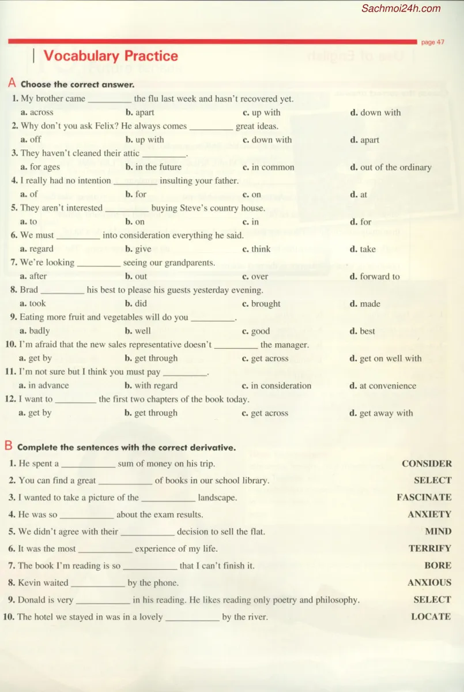
Sachmoi24h.com
page 47
Vocabulary Practice
A Choose the correct answer.
1, My brother came
|
_the flu last week and hasn’t recovered yet.
a. across
b. apart
c. up with
d. down with
2. Why don’t you ask Felix? He always comes
|
_ great ideas.
a. off
b. up with
c. down with
d. apart
3. They haven’t cleaned their attic
a. for ages
b. in the future
c. in common
d. out of the ordinary
4. I really had no intention
|
_insulting your father.
a. of
b. for
c. on
d. at
5. They aren’t interested
buying Steve’s country house.
a. to
b. on
c. in
d. for
6. We must
-
into consideration everything he said.
a. regard
b. give
c. think
d. take
7. We're looking |
our grandparents.
a. after
b. out
c. over
d. forward to
8. Brad
=
his best to please his guests yesterday evening.
a. took
b. did
c. brought
d. made
9. Eating more fruit and vegetables will do you.
a. badly
b. well
c. good
d. best
10. I’m afraid that the new sales representative doesn’t
_the manager.
a. get by
b. get through
c. get across
d. get on well with
11. I’m not sure but I think you must pay .
a. in advance
b. with regard
c. in consideration
d. at convenience
12. I want to _
_the first two chapters of the book today.
a. get by
b. get through
c. get across
d. get away with
B Complete the sentences with the correct derivative.
1. He spent a
.
sum of money on his trip.
CONSIDER
2. You can find a great |
of books in our school library.
SELECT
3. I wanted to take a picture of the.
_landscape.
FASCINATE
4. He was so
-
about the exam results.
ANXIETY
5. We didn’t agree with their
decision to sell the flat.
MIND
6. It was the most
of my life.
TERRIFY
7. The book I’m reading is so |
that I can’t finish it.
BORE
8. Kevin waited
-
by the phone.
ANXIOUS
9. Donald is very
in his reading. He likes reading only poetry and philosophy.
SELECT
10. The hotel we stayed in was in a lovely
_ by the river.
LOCATE
🔗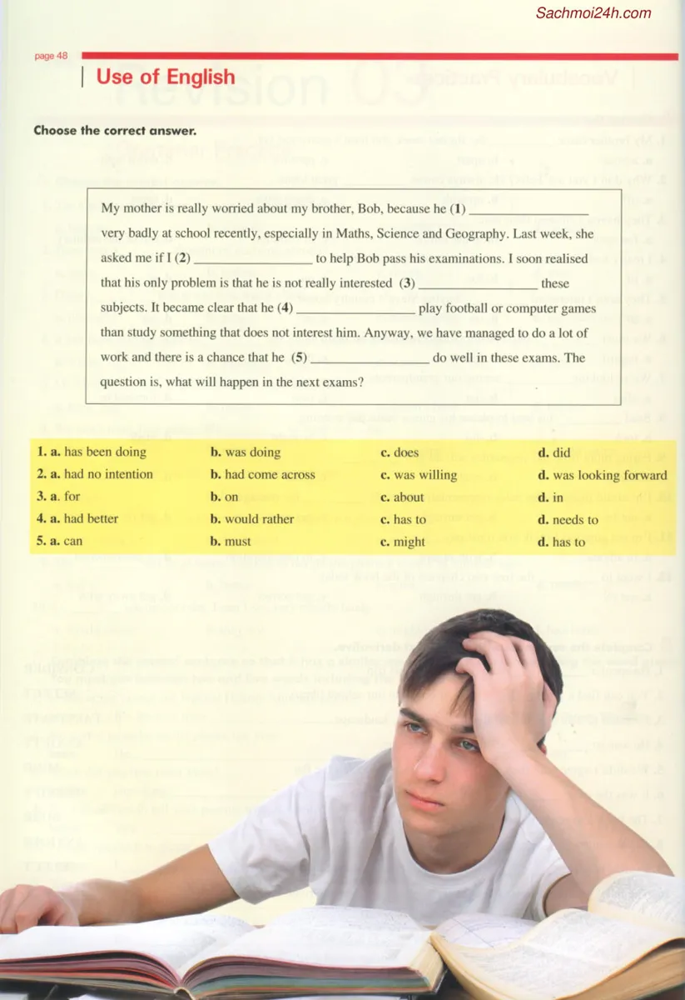
Sachmoi24h.com
Use of English
Choose the correct answer.
My mother is really worried about my brother, Bob, because he (1)
very badly at school recently, especially in Maths, Science and Geography. Last week, she
asked me if I (2).
_
to help Bob pass his examinations. I soon realised
that his only problem is that he is not really interested (3)
these
subjects. It became clear that he (4)
_play football or computer games
than study something that does not interest him. Anyway, we have managed to do a lot of
work and there is a chance that he (5) -
_do well in these exams. The
question is, what will happen in the next exams?
1. a. has been doing
b. was doing
c. does
d. did
2. a. had no intention
b. had come across
c. was willing
d. was looking forward
3. a. for
b. on
c. about
d. in
4. a. had better
b. would rather
c. has to
d. needs to
5. a. can
b. must
c. might
d. has to
🔗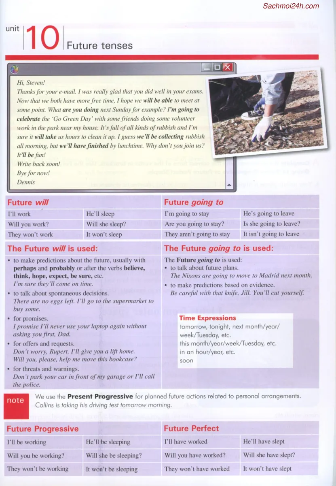
Sachmoi24h.com
unit 10 Future tenses
Hi, Steven!
Thanks for your e-mail. I was really glad that you did well in your exams.
Now that we both have more free time, I hope we will be able to meet at
some point. What are you doing next Sunday for example? I’m going to
celebrate the ‘Go Green Day’ with some friends doing some volunteer
work in the park near my house. It’s full of all kinds of rubbish and I’m
sure it will take us hours to clean it up. I guess we'll be collecting rubbish
all morning, but we’ll have finished by lunchtime. Why don’t you join us?
be fun!
Write back soon!
Bye for now!
Dennis
Future going to
I'll work
He'll sleep
I’m going to stay
He’s going to leave
Will you work?
Will she sleep?
Are you going to stay?
Is she going to leave?
They won’t work
It won’t sleep
They aren’t going to stay
It isn’t going to leave
The Future going to is used:
* to make predictions about the future, usually with
perhaps and probably or after the verbs believe,
think, hope, expect, be sure, etc.
I’m sure they'll come on time.
* to talk about spontaneous decisions.
There are no eggs left. I'll go to the supermarket to
buy some.
° for promises
I promise I ll never use your laptop again without
asking you first, Dad.
¢ for offers and requests.
Don’t worry, Rupert. I'll give you a lift home.
Will you, please, help me move this bookcase?
¢ for threats and warnings.
Don’t park your car in front of my garage or I’ll call
the police.
note
The Future going to is used:
¢ to talk about future plans.
The Nixons are going to move to Madrid next month.
* to make predictions based on evidence.
Be careful with that knife, Jill. You’ll cut yourself.
Time Expressions
tomorrow, tonight, next month/year/
week/Tuesday, etc.
this month/year/week/Tuesday, etc.
in an hour/year, etc.
soon
We use the Present Progressive for planned future actions related to personal arrangements.
Collins is taking his driving test tomorrow morning.
Future Perfect
I'll be working
He’ll be sleeping
Pil have worked
have slept
Will you be working?
Will she be sleeping?
Will you have worked?
Will she have slept?
They won’t be working
It won’t be sleeping
They won’t have worked
It won’t have slept
🔗Sachmoi24h.com
page 50
The Future Progressive is used:
*
to talk about actions that will be in progress at a
*
to talk about actions that will be completed before a
specific time in the future.
specific time or another action in the future. The verb
At 8 tomorrow morning, we'll be travelling to
describing the second action is in the Present Simple.
Morocco.
They’ll have finished dinner by the time you go home.
>»
to emphasise the duration of an action.
Ricardo will be working on that project all next week.
Time Expressions
by +a point in time (e.g. Sunday), by the
time, by then, before, etc.
Grammar Practice
A Complete the sentences with the correct form of the verbs in brackets. Use the Future Simple, Future
Going to, Future Progressive or Future Perfect Simple.
1. Your mobile phone is ringing, Bill. I.
(answer) it if you want.
2. Valerie’s brother
=
(get) his degree in Biology next year.
3. At 10 o’clock tomorrow we.
(travel) to the South of France.
4. Megan =
(tidy up) the whole house by the time the guests arrive.
5. Robert, .
_(you/help) me with that exercise?
6. Look! That man
_(jump) off that cliff.
7. He -
_(work) overtime every day next week.
8. By the end of the year, Kevin
|
_(graduate) from university.
B Complete the text with the correct form of the verbs in brackets. Use the Present Simple, the Present
Progressive and all the Future forms.
Lights from outer space
American scientists have predicted that by 2060 the Earth
(1)
(use) electricity generated by power
stations on the moon. Although some people
(2).
(find) this hard to believe, Professor
Merritt, Chairperson of the World Energy Committee, seems quite
convinced. Why? Well, by 2060 we (3)
(need) five times more power than we produce today, mainly due to a
dramatic increase in population. The scientists in charge of the project
(4)
(plan) to place large dishes on the
moon, which (5)
the sun's rays and send them to Earth-based receivers. By the
time the sun's rays (6)
(reach) the Earth, microwaves
(7).
(already/turn) them into electricity. Professor Merritt believes that the power
stations on the moon (8)
(eventually/meet) all Earth's existing energy needs in an
effective, problem-free way. By 2020, the research team (9)
_(already/analyse) the first
samples from the moon, and this (10)
(determine) whether this dream can really come
true after all!
🔗Sachmoi24h.com
page 51
C Choose the correct answer, a, b, c or d.
1. By the end of the day Melissa
all the e-mails to her clients.
a. will send
b. sends
c. will be sending
d. will have sent
2. I promise that I
such a stupid thing again.
a.
not going to
b. won’t be doing
c. won’t do
d. won’t have done
3. Brian
-
seminars all day long at the book exhibition tomorrow.
a. will be attending
b. is attending
c. will attend
d. will have attended
4. Don’t be afraid of the horse. It.
_ you, Burt.
a. won’t be hurting
b. won’t hurt
c. won’t have hurt
d. not going to hurt
5. Look at that child, Patricia. He
the road all alone.
a. is going to cross
b. will be crossing
c. shall cross
d. will have crossed
6. Dennis
_his pottery class by the end of June.
a. will have completed _ b. shall complete
c. will be completing
d. going to complete
7, Please, don’t call me between 3:00 and 4:00 because we.
a meeting then.
a. will have
b. will be having
c. going to have
d. will have had
8. Andy expects that the Simpsons
a. will have arrived
b. going to arrive
c. will arrive
d. will be arriving
D Complete the second sentence so that it has a similar meaning to the first one, using the word
given. You must use between two and five words including the word given.
1. George will have your car ready by the end of the day.
fixed
George.
by the end of the day.
2. Penny is expecting her baby at the end of May.
to
Penny
_her baby at the end of May.
3. The Black Bulls are likely to win the match.
probably
The Black Bulls
_the match.
4, Dean has planned to visit his cousin this weekend.
going
Dean
his cousin this weekend.
5. I’m to sit for my English exams tomorrow morning.
be
I
my English exams tomorrow morning.
6. Pam will prepare lunch before Greg comes back from work.
have
Pam.
by the time Greg comes back from work.
🔗Sachmoi24h.com
Vocabulary Practice
A Fill in the word formation table and complete the sentences using the correct derivative.
VERB
NOUN
ADJECTIVE
ADVERB
ay
create
ES
environmentally
volunteer
4
challenging
5,
destruction
6.
protector,
| protected,
protectively
will help build new homes for people whose houses were destroyed by floods.
VOLUNTAR\
2. We try to use detergents that are
friendly.
ENVIRONMEN!
3. You can find the most amazing |
in rain forests.
CREATI
4. They’re doing research on the
power of nuclear weapons.
DESTRO)
5. They say that a mentally
job may keep your brain sharp for longer.
CHALLENGI
6. More than 1550 endangered species are under.
by government law.
PROTEC!
7. There was an earthquake which
_the biggest part of the old town.
DESTRUCTION
8. Rex offered to work
_at an old people’s home for a few hours every day.
VOLUNTEER
B Complete the sentences using the correct “put” expression.
put an end fo sth:
stop sth
to put it mildly:
used to describe sth more extreme, usually worse, than believed
put ideas into sb’s head:
put in a good word for sb:
put the finishing touches:
make sb\do sth that they had not thought about before
say positive things about sb
completé sth by adding the final improvements
1. I’m finishing the painting in a minute. I’m just putting
a. the finishing touches
b. it mildly
2. At some point, the two of you should put
_that silly argument.
a. an end to
b. in a good word for
3,
, the measures taken by the headmaster were unpopular.
a. To put an end
b. To put it mildly
4. I thanked her for putting in
with her boss.
a. the finishing touches
5. Could you stop putting.
a. ideas into her head
b. a good word for me
_? We can’t afford to go on a cruise this year.
b. the finishing touches to her
🔗Sachmoi24h.com
unit 11 Conditional Sentences (Types 7&2)
- Hi, Cedric. What are your plans for the weekend?
Well, if the weather is good, I’ll transform my roof into a
real garden!
- What do you mean?
- It’s simple, Max. I’m going to plant all kinds of flowers
and trees to make a ‘green roof’. You know, I have
realised that we can’t help the environment unless we ‘go
green’. If I were you, I would give it a try, Max.
Conditional Sentences
¢ Conditional Sentences consist of two clauses, the if-clause and the main clause. When the if-clause comes before
the main clause, they are separated by a comma.
If you eat all that ice cream, you’ll get sick.
You'll get sick if you eat all that ice cream.
Conditional Sentences Type 1
We use Conditional Sentences Type 1 to express something which is likely to happen in the present or future.
if-clause
main clause
¢ Future Will
you'll see his new pet.
If + Present Simple
¢ Modal Verbs (may, might, can, must, should)
If you go to Curt’s house,
you may meet his cousin.
¢ Imperative
give him this book, please.
note
Zero Conditional
The Zero Conditional is used to express general truths.
If-clause
Main clause
I{/When + Present Simple
> Present Simple
If iron gets wet,
it rusts.
Conditional Sentences Type 2
We use Conditional Sentences Type 2 to express unreal or imaginary situations, or for situations which are unlikely
to happen in the present or the future.
if-clause
main clause
If + Past Simple
would
could
+ bare infinitive
If Rex had more free time,
he would take up a sport.
If he had more money,
Larry would buy a new car.
🔗Sachmoi24h.com
page 54
note
* In Conditional Sentences Type 2, were is often used instead of was in the if-clause.
If | were older, | would drive my dad’s car.
* We use If I were you, to express an opinion or to give advice.
If | were you, | wouldn’t talk to Mr Collins like that.
unless = if not
* In all types of Conditional Sentences, we may use unless instead of if + not in the if-clause.
They won't buy a new house unless they sell their old one. (= They won't buy a new house if they
don’t sell their old one.)
Grammar Practice
A Complete the short dialogues with the correct form of the verbs in brackets.
1. - I really love this pair of shoes, Kim.
- They look fantastic on you, Liz. If you
(like) them that much, buy them.
- Oh, if I had the money, I
(buy) them right now. Anyway, I'll have to wait till the sales, which is
next month.
2. - Have you heard that Mr Scott inherited two million dollars from a distant uncle?
- Really? What luck!
- What
.
you.
(do) if you inherited a lot of money, Bill?
- Well, first of all, if I had all that money, I
(stop) working and
(start) travelling all
around the world. I wouldn’t come back unless I.
(have) no more money in my pockets!
B Expand the notes into sentences to form Conditional Sentences Type 1 or 2.
1. If / weather / be / warm / tomorrow / we / have / picnic
2. If/1/ be / you/1/ not / turn down / that job offer
3. Unless / Alex / finish / homework / he / not play / on / computer
4. If / we / have / a lot of money / we / travel / all over the world
5. If / you / make fun of / me / I / never / speak / you /again
6. What/ you / do / if / meet / your football player?
🔗Sachmoi24h.com
5 Expand the notes into sentences to form Conditional Sentences Type 1 or 2.
1, Hf
I'm ill, so I can’t go to work today.
I must take a painkiller. I don’t want my
2, If
headache to get worse.
I’ve got a flat tyre, but I don’t know how to
3, If
change it, so [ have to wait for the AA.
I hope the mushroom soup is hot. I won't eat
4,
it if it isn’t.
I work long hours so it’s impossible for me to
5, If
take up a sport.
D Choose the correct answer, a, b or c.
1. If you drop ice in water, it.
a. floats
b. will have floated
c. floated
2. If I could do that on my own, I.
for your help.
_
a. asked
b. wouldn’t ask
c. don’t ask
3. Unless you
,
we'll miss our flight.
a. will hurry
b. didn’t hurry
c. hurry
4. If we don’t protect dolphins, they
extinct.
a. are
b. won’t be
c. will become
5. You'll pay higher insurance if you
a sports Car.
a. buy
b. will buy
c. bought
6. If 1.
_you, I would complain to the hotel manager.
a. will be
b. would be
c. were
ells:
_camping at the weekend if I weren’t ill.
a. will go
b. would go
c. went
8. They would join us for dinner if they
more free time.
a. had
b. would have
c. will have
🔗Sachmoi24h.com
page 56
Vocabulary Practice
A Complete the sentences with the correct form of the phrasal verbs given below.
GIVE...
---OFF
give up:
stop trying
cool off:
make sb calm or less excited
give out: distribute.
show off: try to impress others with their abilities,
give back: return to the previous owner
wealth, etc.
give off: — send out a smell
put off:
delay, postpone
give in to: be unable to control a strong need
get off:
leave a bus or train
or desire
pay off:
finish paying a debt
1. Sean finally -
_his son’s demands and
1. We had to
_the meeting again because
bought him a new bike.
Greg was ill.
2. The kitchen was
-
_a terrible smell
2. Why are you so angry again, Marvin? Please, try to
after the fire.
a little bit.
3. Did you remember to.
_Gregory his
3. The Connors really love to |
_their
tennis racket.
4
brand new yacht.
4. The teacher told me to
_the tests to
4. If Felix inherited a large sum of money, he would
the whole class.
all his debts.
5. They |
_trying to make him sell his
5. I think that we must.
_the bus at the
house. It was a real waste of time.
second stop. I'll ask the driver.
B Complete the sentences using the correct derivative.
Verbs
—>
Adjectives
Adjectives >
Nouns
hope
>
hopeful /-less
warm
warmth
Use
useful / -less
long
length
d eep
—>
mean
meaningful / -less
depth
1. I think that the
_of that boat is approximately 12 metres.
LONG
2. They’ve been trying to find their lost car keys for hours, but it’s.
HOPE
3. The tool kit you gave Steve as a present was very |
. He really loved it.
USE
4. Sheila found a lot of -
_
words that she couldn’t understand in the strange poem.
MEAN
5. The children can easily swim here; the water isn’t
DEPTH
6. The
.
of the fireplace and a hot cup of cocoa was just what we needed after skiing
all afternoon.
WARM
🔗Sachmoi24h.com
12 Nouns, Articles
& Determiners
The pineapple is a tropical fruit which grows in South America and other
tropical places. It originates from the area between southern Brazil and
Paraguay. The original name of the fruit was “ananas” — meaning excellent
fruit - but when the European explorers discovered it, they called it pineapple.
Christopher Columbus brought it to Europe in 1493. In many cultures, the
pineapple is a symbol of welcome, friendship and hospitality.
Nouns
Countable nouns
Countable nouns can be counted and have singular and plural forms. We can use a/an, one in the singular and
some, any, (a) few, etc. in the plural.
Uncountable nouns
Uncountable nouns are used only with a singular form verb and we can’t use a/an or numbers with them. To express
quantity we use some, any, much, little, a lot of, etc.
meat, sugar, cheese, butter, chicken, chocolate, etc.
liquids
milk, water, coffee, etc.
wool, gold, paper, glass, iron, leather, etc.
love, help, freedom, time, information, news, advice, health, communication,
work, experience, traffic, business, etc.
natural phenomena
weather, light, rain, snow, etc.
baggage, furniture, money, luggage, etc.
Articles (a/an/the)
¢ The indefinite article a is used before singular nouns when we mention them for the first time or when we don’t refer
toa specific item. We use a when the next word begins with a consonant sound and an when the next word begins
with a vowel sound.
There is a lamp in the room.
There isn’t an armchair in the room.
¢ The definite article the is used before countable and uncountable nouns.
the is used:
Examples
* before something specific or already mentioned.
¢ for things that are unique.
¢ for things that are defined.
¢ with the superlative of adjectives/adverbs.
I have to go to the dentist.
I bought two T-shirts and a dress. The dress is white.
The sun heats the earth.
The house which is next to ours is 300 years old.
Joan is the best student of all.
* before names of seas, oceans, rivers, deserts, groups of
islands, mountain ranges and countries in the plural.
¢ before nationalities when we refer to the whole nation.
* before people’s surnames when we refer to the whole
family.
¢ with hotels, restaurants, theatres, cinemas, museums.
* with newspapers, services and organisations.
the Black Sea, the Indian Ocean, the Thames,
the Kalahari Desert, the Azores, the Alps, the USA
The Chinese invented paper thousands of years ago.
The Simpsons came to see us last night.
the Hilton, the Pasta House, the National Theatre,
the Odeon Cinema, the British Museum
the Guardian, the police, the United Nations
🔗Sachmoi24h.com
page 58
the is not used:
Examples
° before countable and uncountable nouns which refer to
He loves chocolate.
something general or not mentioned before.
Whales are mammals.
before names of people, streets, cities, countries,
Mark Smith, Oxford Street, Rome, Italy, Europe, Corsica,
continents, islands and mountains.
Mount Everest
* before the days of the week and months.
on Monday, in June
¢ before names of squares, parks and lakes.
Trafalgar Square, Central Park, Lake Winnipeg
* before the names of magazines, sports, games, colours, Newsweek, tennis, chess, white, Maths, Spanish
school subjects and languages (when they are not
followed by the word language).
¢ with meals (breakfast, lunch, dinner).
What did you have for breakfast?
BUT: When we talk about a specific meal, we use the
I didn’t enjoy the dinner on the plane.
e before the words bed, court, church, home, hospital,
Thomas went to university to study engineering.
prison, school, university, work when they are used for
the purpose for which they exist.
* before names of airlines or companies.
some + uncountable / plural countable nouns is used
in affirmative sentences and in questions when we offer
something or ask for something politely.
any + uncountable / plural countable nouns
is used in questions and negative sentences.
no {= not any) + uncountable / plural countable nouns
is used in affirmative sentences to give a negative meaning.
a lot / lots / plenty are always used with of when they
are followed by a noun. They are used with:
- plural nouns and a plural verb.
- uncountable nouns and a singular verb.
BUT: Peter went to the university to visit his professor.
Air France, BMW
There is some orange Juice in the fridge.
Would you like some chips?
Could I have some coffee?
Is there any orange Juice in the fridge?
There aren’t any chips on the table.
There is no cheese in the fridge. = There isn’t any cheese
in the fridge.
There were a lot of people in the park.
Have some more food. There’s lots left.
Is there enough coffee for everyone ? Yes, there’s plenty.
note
Many and much ore used in affirmative sentences with too, so, how and as.
There’s too much sugar in my coffee.
| ° Much is used with very as an adverb (or on its own in negative sentences).
| miss my family very much.
She didn’t like the food (very) much.
° Alot (of)/Lots (of)/Plenty (of) are quite informal, so in formal writing it is better to use many or
a number of with countable nouns and much or a great deal of with uncountable nouns.
Many/A number of people believe that recent technological developments have improved our lives.
Much/A great deal of stress is often experienced by people who work in offices.
Alot (of)/Lots (of)/Plenty (of) are not used with measurements of time or distance.
| was ill for many weeks.
a few/a little/few/little
Examples
° a few = a small number, some) is used with plural nouns and a fs need a few more things from the supermarket.
plural verb.
There are a few coins on the table.
a little ( =a small amount, some) is used with uncountable
nouns and a singular verb.
There’s still a little cake left in the fridge.
¢ few (= not many) is used with plural nouns and a plural verb.
Very few people disagreed with him.
° little ( = not much ) is used with uncountable nouns and a
There was little evidence to support his claim.
singular verb.
🔗Sachmoi24h.com
¢ For emphasis we can use:
° Some, any, much, many, a little, a few, a
note
very, so, too + little/few
lot, lots, plenty can also be used without nouns,
There’s very little milk in my coffee.
- only +a little/a few
as pronouns.
Have you got any money? No, |
got any.
He’s got only a few friends.
We didn’t buy any bread. We've got plenty.
Grammar Practice
ajar
a kilo
A Complete the dialogue with the phrases given in the box below.
a packet
a carton
ten slices
three bars
two loaves
A: What else should I add to our shopping list, Sandra?
B: Well, we also need (1)
of cheddar cheese, (2).
of bread,
(3) _
of orange juice and (4).
_of whole-grain cereal.
A: OK, anything else?
B: Maybe we could add some more things, such as (5)
_of strawberry jam,
(6).
of chocolate and (7)
of turkey. Have I forgotten anything?
A: Well, I think we’re OK.
B Complete the sentences with a(n), the, or, -
1. I read in
article that there are no bridges which cross
Amazon River.
2. What colour was
pe
_dress -
Nicky bought yesterday?
Jason finds it very difficult to learn
_Chinese language.
4. Jennifer had
omelette with mushrooms and
chef’s salad.
5. Bill went to.
_London University to study
Economics.
6. We made
.
amazing ski resort in
reservation at
Alps.
7. I guess,
summer is
_most popular season of
8. You can find
giant bird-eating spider in
_rainforests of.
South America.
C Choose the correct answer, a, b or c.
D Circle the correct answer.
1. Is there
.
_apple juice in the fridge?
1. Wait a minute. There are few / a few more
a. a lot
b. some
c. any
things I want to tell you.
2. Could I have
_ coffee, please?
2. There was very little / a little he could do to
a. much
b. some
c. any
help me with my project.
3. Justin can’t eat this soup. There’s too
salt in it.
3. There are only few / a few hotels in this city.
a. much
b. plenty
c. many
We won’t find a room easily.
4. How
-
people were there at your cousin’s wedding?
4. Hurry up, children. We’ve got very few / little
a. much
b. many
c. any
time left.
5. There’s
|
light in this room. It’s too dark.
5. He’s got a few / few friends in London, so he
a. much
b. any
c. no
may stay with them.
6. Come on, children. There’s
_cake for everyone.
6. I’m sure there are very little / few job
a. plenty of
b. lots
c. many
opportunities in this small town.
🔗Sachmoi24h.com
page 60
Vocabulary Practice
A Complete the phrases with the correct preposition (of, at, to, in) and match each phrase with the
correct definition. Then complete the sentences.
1.
‘present
a. because of sth
2. as a result a
b. now
3. succeed
-
c. as stated by
4. belong
d. manage to do sth
5. according
e. in the future
6.
_the coming years
f. be in sb’s possesion
the accountant, you owe the company $500.
2. These sunglasses don’t
_my brother.
3. Cathy was still very weak
her illness.
4. If we don’t try to protect the environment, many more animal species will die out.
5. Sam is staying with his cousin in Prague
6. Ronald finally
_passing his driving test.
B Complete the sentences using the correct form of the following “make” expressions. Then, choose
the correct answer.
make it difficult for sb to: make things hard for sb
make haste: hurry up
make it to the top: be very successful
make the most of sth: take full advantage of sth as it may not last long
make up for lost time: enjoy sth as much as possible, because you didn’t
have the chance to do it in the past
1. He couldn’t travel much when he was young, but he decided to
now.
a. make it difficult for him
b. make up for lost time
2. Why don’t we go on a picnic? It’s a lovely day and we must.
a. make the most of it
b. make it to the top
33
_, children. The school bus is waiting for you.
a. Make haste
b. Make up for lost time
4. Rob is a very intelligent and hardworking young man. I’m sure he’II
_
_one day soon.
a. make it to the top
b. make haste
5. I was driving to work yesterday, but the storm
-
me to get there on time.
a. made the most of
b. made it difficult for
🔗Sachmoi24h.com
units 10-12 Revision O4
nsludesoV.
‘Grammar Practice
A Choose the correct answer.
1, At this time tomorrow, Gerry
_his driving test.
a. shall take
b. going to take
c. shall have taken
d. will be taking
2. Henry .
a shower as soon as he finishes cleaning his room.
a. will have had
b. will have
c. have
d. is having
3. Will you .
painting the house by tomorrow?
a. finished
b. going to finish
c. have finished
d. finishing
4. Those cars are going really fast. There
.
an accident.
a. is
b. will have been
c. is going to be
d. going to be
5. They could take better pictures if they =
a digital camera.
a. would have
b. will have
c. had
d. are going to have
6. If 1
by the sea, I would go fishing every day.
a. lived
b. would live
c. live
d. will be living
7. Could I have
=
‘more apple juice, please?
a. no
b. some
c. any
d. many
8. I can’t drink this tea. There’s too
sugar in it.
a. much
b. plenty
c. many
d. lot of
9. How
-
teachers were there at the seminar yesterday?
a. some
b. many
c. any
d. much
10. Don’t leave. There are’
_more things I want to tell you.
a. few
b. any
c. little
d. a few
B
the second sentence so that it has a similar meaning to the first one, using the word given.
You must use between two and five words including the word given.
1. Arnold has planned to redecorate his travel agency next month.
going
Arnold.
his travel agency next month.
2. Pil finish the housework before the children come back from school.
have
by the time the children come back from school.
3. Mark is likely to win another medal.
probably
Mark
another medal.
4. Unless we send them an e-mail, they won’t know.
not
If |
them an e-mail, they won’t know.
5. You can keep this mug if Roy doesn’t want it.
unless
You can keep this mug |
oe
6. Don’t say anything because your father will get angry.
you
If
=} your father will get angry.
7. We'll be on the plane for Rome by the time he arrives.
left
We.
for Rome by the time he arrives.
8. When is your appointment with the manager?
meeting
When
-
_the manager?
🔗Sachmoi24h.com
page 62
Vocabulary Practice
A Choose the correct answer.
1. He finished my portrait yesterday, but he’s putting
_at the moment.
LE
a. it mildly
b. the final touches
c. ideas into my head
d. an end to
2. Do you think you could put _
_with the head teacher?
a. an end to
b. it mildly
c. in a good word for me
d. the final touches
3. I finally
trying to make him change his mind.
a. gave up
b. gave out
c. gave back
d. gave off
4. They told me to
-
these leaflets.
a. give off
b. give out
c. give up
d. give in to
5).
the meeting because the chairman had to leave.
a. showed off
b. paid off
c. got off
d. put off
6. Andy loves
=
his brand new sports car.
a. giving off
b. putting off
c. showing off
d. cooling off
7. I broke my leg as I was
_the bus yesterday morning.
a. cooling off
b. giving off
c. paying off
d. getting off
8. According |
Ned, that’s the best Chinese restaurant in the city.
a. of
b. in
c. at
d. to
9. Unfortunately, he didn’t succeed |
_getting the job after all.
a. in
b. on
c. for
d. at
10. Matt worked so hard that he finally made
a. haste
b. it to the top
c. the most of
d. difficult
B Complete the sentences with the correct derivative.
1. We must become more sensitive to
_issues.
ENVIRONMENT
2. It was one of the most
earthquakes in history.
DESTROY
3. The new graphic artist they hired is very
CREATE
4. Karen does
work at a children’s hospital twice a week.
VOLUNTEER
5. He put on a.
mask and a pair of goggles.
PROTECT
6. A food processor is a really
present for Bob, who’s a cook.
USE
4. The
|
of their welcome made us feel at home.
WARM
8. Check the
of the water to make sure the kids can swim here.
DEEP
9. After he was fired, he felt completely
_about the future.
HOPE
10. It’s true that not everyone wants a
_ job.
CHALLENGE
🔗Sachmoi24h.com
page 63
Use of English
Choose the correct answer.
If you would like to have an exciting holiday this summer, then, (1)
to
the Bluebell Hotel in Blueville. The hotel has just recently been renovated and our famous
designers are now putting (2).
So what you (3)
is a comfortable, clean and modern environment. The hotel is built near one of the most
beautiful places in the town and it is surrounded by a beautiful park. If you want to spend
your time by the sea, (4)
well-known-Sandy Beach is nearby. You can
also play beach volleyball there! So, don’t (5).
_off your much needed
holiday, book now and make the most of our specials!
1. a. will come
b. you would come
c. might come
d. come
2. a. an end to it
b. ideas into our head
c. the finishing touches
d. in a good word for us
3. a. are finding
b. will find
c. found
d. have found
4.a.a
b. an
c. this
d. the
5. a. put
b. give
c. pay
d. get
🔗Sachmoi24h.com
unit 13 Past Perfect Simple & Progressive
I’m sure Matt will never forget that day. He was
about to move house and it had been a very tiring
and stressful week. He had been packing his
things all day long and by the end of the day he
had finished everything. The only thing he hadn’t
done was to carry his luggage and some other
boxes to his car. When he finally did it and was
ready to leave, he realised he had forgotten his
sunglasses on the kitchen table. So he went back
to get them. When he came out again, he couldn’t
believe his eyes. Somebody had stolen his car with
all his belongings! It wasn’t his lucky day!
Affirmative
Questions
Negative
I had finished / I'd finished
Had you finished?
It had not (hadn’t) finished
He had written / He'd written
Had she written?
They had not (hadn’t) written
The Past Perfect Simple is used:
¢ for an action which was completed before a specific time in the past.
Larry had finished his presentation by 11:00 in the morning.
¢ for an action which was completed before another action in the past (in time clauses with before, after, when, by
the time).
We use the Past Perfect Simple for the action that happened first and the Past Simple for the action that followed.
We had just started the meeting when Terry entered the office.
e with adjectives / adverbs in the superlative degree and expressions
such as: the first/second/only ..., etc.
Time Expressions
by + point in time
That was the most interesting board game I had ever played.
before + point in time
already, ever, never, just, until, before,
after, when, by the time
note
When two actions which were both completed in the past are connected with before or after, we can
use either the Past Perfect Simple or the Past Simple for the action that happened first. For the second
action we use only the Past Simple.
They had eaten dinner before Charlie came back home.
Affirmative
Questions
Negative
I had been searching /
I'd been searching
Had you been searching?
It had not (hadn’t) been searching
🔗Sachmoi24h.com
page 65
The Past Perfect Progressive is used:
* for an action which was in progress before another action or a specific point
of time in the past (in time clauses with when, before, after, by the time).
Time Expressions
By 10:00 yesterday morning, I had been marking tests for three hours
by + point in time
without a break.
before + point in time
They had been waiting for half an hour before they called him to
already, by the time, when, for,
see where he was.
since, after, before, how long
* for a lengthy action which took place in the past and its results were obvious
at a later point of time in the past.
Peter was really tired because he had been painting the house all day long.
note
Stative verbs are not usually used in the Past Perfect Progressive.
Grammar Practice
A Complete the sentences with the correct form of the verbs in brackets. Use the Past Simple,
Past Perfect Simple or Past Perfect Progressive.
1. Eric
-
(wait) for over an hour before Harry
_(come).
(finish) my homework by 6:00 p.m. yesterday.
3. My parents |
(encourage) me to become a surgeon for years.
4. We =
(be) late and by the time we
(get) to the station the train
_(already/leave).
5. Elisa.
(be) tired because she
|
(clean) the house all day.
6. Patrick
|
(realise) he
(forget) his passport at home, when
he =
(arrive) at the airport.
B Expand the notes into sentences. Use the Past Simple, Past Perfect Simple or the Past Perfect
Progressive.
1. He / live / London / ten years / before / move / Bristol
2. Our mother / finish / cooking / by the time / guests / arrive
3. When / bell / ring / students / already / complete / test
4. Edward / be / exhausted / because / travel / all day
5. My friend / come / after / I / leave / the restaurant
6. Craig / walk / park / an hour / when / meet / old friend
🔗Sachmoi24h.com
page 66
c Read what the following people said about an earthquake that occurred yesterday. Complete with
the Past Perfect Simple or the Past Perfect Progressive of the verbs in brackets.
“T was in my car at the time. I (1).
a
restaurant. I (2)
(never/experience) an earthquake
before, so I didn’t know what to do. I saw people running out of their houses.
Some of them (3)
(sleep) as they were still in
their pyjamas. Later, when the earthquake stopped, I continued driving and
when I arrived home, I was happy to see that the earthquake
(4)
(not/destroy) my house,” explained Mr Jones.
“I was very tired because I (5)
to go to bed early. Luckily, I (6)
earthquake took place. Actually, I (7)
(study) all day, so I decided
_(not/fall) asleep when the
(just/get) out of bed
to get a glass of water when part of the ceiling fell in on it. Later I realised how
lucky I (8).
_(be),” said Maria.
“We (9).
(play) video games for hours and were
thinking of going to bed when the earthquake occurred. When our parents felt
the earth shake, they shouted to us to get under the table but we
(10).
(already/do) so,” said Mark.
D Complete the second sentence so that it has a similar meaning to the first one, using the word given.
You must use between two and five words including the word given.
1.
We finished the pottery lesson. Then we went to Tim’s house.
had
We went to Tim’s house
.
_the pottery lesson.
2.
Ihad been asleep for only ten minutes when the baby woke up.
sleeping
only ten minutes when the baby woke up.
We ordered lunch and then Dennis came and joined us.
already
We.
when Dennis came and joined us.
4.
Walter had been in front of his computer for ten hours before he went to bed.
working
Walter
his computer for ten hours before
he went to bed.
5. They packed their suitcases and then took a taxi to the train station.
had
As soon
_
their suitcases, they took a taxi to
the train station.
6.
I completed my project and then sent it by e-mail to John.
after
I sent my project to John by e-mail
|
🔗Sachmoi24h.com
page 67
Vocabulary Practice
A Complete the word formation table and complete the sentences using the correct derivative.
VERB
NOUN
ADJECTIVE
ADVERB
(dis)appear | (dis) .
mysteriously
3.
| 4.
apologetic
|5.
astonishingly
1. Allow me to.
.
didn’t mean to offend you.
APOLOGY
2. My pet parrot disappeared
from its cage and I never saw it again.
MYSTERY
3. His new book was a great
. The critics really loved it.
SUCCEED
4, After two days, his family had to call the police and report his
APPEAR
5. To my.
_, Eric scored three goals in yesterday’s match.
ASTONISH
6. Rita gave me an.
look but didn’t say anything.
APOLOGY
7. The police solved the
bank robbery and arrested the three robbers.
MYSTERY
8. The Tailors run a
_
family business in Seattle.
SUCCESS
9,
, it was going to rain again.
APPARENT
10. The success of her first novel was really
ASTONISH
B Read the phrases witn “in”. Then, choose the correct answer.
¢ in front of
¢ in touch with
* in addition to
in charge of
in place of
* in comparison with
¢ in answer to
° in agreement with
1. Henry is in _
the whole department now that Mr Norris left.
a. place of
b. answer to
c. charge of
2. Please, don’t park
_of my garage.
a. in front
b. in place
c. in charge
3. I sent them an e-mail yesterday in
their letter of complaint.
a. answer to
b. comparison with
1
¢. agreement with
4. Unfortunately, we aren’t
our old friends from school.
a. in place of
b. in touch with
c. in answer to
ay
his salary, he gets some extra money for delivering parcels for the company.
a. In front of
b. In addition to
c. In agreement with
6. The whole committee was in
the mayor about the new park.
a. charge of
b. comparison with |!
¢. agreement with
7. Anna usually uses margarine in|
butter in her cooking.
a. touch with
b. place of
c. front of
8. My cooking skills are very basic in
-my mother’s.
a. place of
b. charge of
c. comparison with
🔗Sachmoi24h.com
unit 14 Reported Speech (Statements)
Yesterday morning, as I was leaving the bank, I met
James. He told me that he had had an accident while he
had been driving to work the previous day. The driver
of the other car told the police that he had probably
fallen asleep at the wheel and lost control of his vehicle.
Luckily, nobody was hurt.
Reported Speech (Statements)
In Direct Speech, we give the exact words that
In Reported Speech, we give the meaning of what
someone said. The words of the speaker are put in
someone said, but with some changes and without
quotation marks.
quotation marks. We use a reporting verb, usually say
or tell, followed by that (which can be omitted) and
the reported statement.
Irina said, “Tina is on the phone.”
=>
Trina said that Tina was on the phone.
note
° We use say when there is no indirect object.
“| can’t fix the car,” he said.
He said that he couldn’t fix the car.
° We use tell when there is an indirect object.
“I'll be late, Tom,” he said.
He told Tom that he would be late.
* When we change a sentence from Direct to Reported
Speech, pronouns and possessive adjectives change
according to the meaning of the sentence.
I like your new bike,” said Ian.
Tan said that he liked my new bike.
¢ When a sentence changes from Direct to Reported
Speech, tenses, modals and time expressions change
as follows:
Present Simple > Past Simple
Mike said, “I want to buy a new car.”
Mike said (that) he wanted to buy a new car.
Present Progressive > Past Progressive
Alan said, “I’m having a shower.”
Alan said he was having a shower.
Past Simple > Past Perfect Simple
Lars said, “I saw a bear behind the tree.”
Lars said he had seen a bear behind the tree.
Present Perfect Simple > Past Perfect Simple
Tim said, “I’ve seen the Loch Ness monster.”
Tim said he had seen the Loch Ness monster.
Present Perfect Progressive > Past Perfect
Progressive
Andy said, “I’ve been waiting for an hour.”
Andy said he had been waiting for an hour.
will > would
Dan said,
call you later.”
Dan said he would call me later.
can > could
Mina said, “I can show you the way.”
Mina said she could show me the way.
Conditional Sentences Type 1 > Conditional
Sentences Type 2
Don said, “If we take a taxi, we'll get there more
quickly.”
Don said if they took a taxi, they would get there
more quickly.
may > might
Paul said, “I may go to Brazil.”
Paul said he might go to Brazil.
must > had to
Jim said, “You must work hard.”
Jim said I had to work hard.
🔗Sachmoi24h.com
now > then
tomorrow > the next day / the following day
Mandy said, “I'll talk to Emma now!”
Mandy said she would talk to Emma then.
today, tonight > that day, that night
Tom said, “We're meeting Tim today.”
Tom said they were meeting Tim that day.
yesterday > the previous day / the day before
Danny said, “I visited my lawyer yesterday.”
Robin said, “I’m flying to Paris tomorrow.”
Robin said he was flying to Paris the following day.
ago > before
Ben said, “I bought this car two days ago.”
Ben said he had bought that car two days before.
last week/month, etc. > the previous week/month, etc.
the week/month, etc. before
Danny said he had visited his lawyer the previous day.
Dave said, “I called Alf last week.”
this morning/year, etc.
> that morning/year, etc.
Dave said that he had called Alf the previous week.
Mark said, “I haven’t eaten anything since this
morning.”
next week / month, etc. > the following week/ month,
Mark said he hadn’t eaten anything since that
etc.
morning.
Gary said, “I'll return the book next week.”
here > there
Gary said he would return the book
Eric said, “I saw it here.”
the following week.
Eric said he had seen it there.
note
° These changes are not be made when the sentence expresses a general truth or the reporting verb is
in the Present, Future or Present Perfect Simple.
“| enjoy cooking,” Kate said.
=>
Kate said (that) she enjoys cooking.
“| will move to Dublin next year,” Eric says. >
Eric says he will move to Dublin next year.
The Past Perfect and the verbs could, might, should, would and used to do not change in Reported Speech.
The Past Progressive usually doesn’t change but when it does, it changes to Past Perfect Progressive.
* Conditional Sentences Types 2 and 3 do not change in Reported Speech.
There are a number of special introductory verbs used in Reported Speech.
Examples
> verb + full infinitive (agree, claim, demand, offer,
promise, refuse, threaten, etc.)
verb + object + full infinitive (advise, allow,
ask, beg, encourage, forbid, invite, order, permit,
remind, warn, etc.)
verb + -ing form (accuse sb of, apologise for, admit
(to), complain to sb about, deny, insist on, suggest,
verb + that clause (admit, agree, claim, complain,
a at) babysit for you, “ said Patty.
Patty offered to babysit for me.
“You should take better care of yourself, John, said Greg.
Greg advised John to take better care of himself.
“George lied to me,
” said Ted.
Ted accused George of lying to him.
“You never listen to me,” he said.
exclaim, explain, inform sb, promise, suggest, etc.) He complained that I never listened to him.
🔗Sachmoi24h.com
page 70
Grammar Practice
A Circle the correct answer.
Yesterday evening, I went to Tim’s house because he wanted to talk to me.
He told (1) me / to me that he (2) is planning / was planning to go on a
business trip to Italy (3) next week / the following week. He said that he
(4) was going / will going to stay in Milan for ten days and that he
(5) needed / will need my help with his house and garden. He explained
(6) me / to me that somebody (7) had / must to feed his fish and water his
plants. He also said that he (8) won’t trust / didn’t trust anybody else but
me, and he (9) would appreciate / will appreciate it if I accepted / accept.
B Rewrite the sentences using Reported Speech.
1. “I can’t talk now because I’m very busy,” Hugh said.
Hugh said.
2. “Weenjoyed the documentary we saw last night,” the children told their mother.
The children told their mother
3. “Imust get up early tomorrow morning,” Bob said.
Bob said
-
4. “Thave already complained about the noise twice today,” Martha told him.
Martha told him
5. “The mechanic will fix my car tomorrow,” Mr Burton said.
Mr Burton said
C Choose the correct answer.
1. Peter said that he
anew pair of jeans.
4. They told Benny that they
_
travel to Egypt.
a. had bought
b. buys
a. ought
b. might
2. Emilytold me that she
_
that recipe for
5. Floracomplained that her brother
cheese cake on the Internet.
her diary.
a. had found
b. finds
a. kept
b. was keeping
3. He said that we had to deliver these parcels
6. Hesaid that he had sold his car a year
a. previous day
b. the following day
a. before
b. previous
D Change the following sentences into Reported Speech. Use one of the reporting verbs in the box,
making the necessary change.
offer
accuse of
advise
suggest
deny
1. “Helen,you lied to me,” Cynthia said.
Cynthia
2. “Let’s have dinner at my house tonight,” Peter said.
Peter.
3. “T’ll drive you to the airport,” Calvin told Mark.
Calvin
|
4. “T didn’t break the window,” Jack said.
Jack
5. “You should see a dentist before your toothache gets worse,” John told his sister.
John
=
🔗Sachmoi24h.com
page 71
| Vocabulary Practice
A Complete the word formation table and then complete the dialogue with the correct derivative.
VERB
NOUN
ADJECTIVE
ADVERB
1k
belief
(un)
(un) |
exhibit
exhibitor,
Be
completion
(in)completely
4
burgle
, burglary
g
play,
playful
6.
exhaustion
exhausted,
Z
luck
A: Hi, Emma. What’s up?
B: Hi, Joanne. You won’t (1)
what
BELIEF
happened to me yesterday. When I returned
home from the book (2)
EXHIBIT
I found the window of my bedroom broken and
the whole house in a complete mess. It was
obvious that a (3)
had broken
BURGLE
into my house.
A: Really? Did he steal anything?
B: Yes. He stole the TV set and the DVD (4)
_, as Well as some money. | also
PLAY
found the drawer where I keep my jewellery (5).
, empty! Imagine all my
COMPLETE
jewellery gone! (6)
,
he didn’t have time to steal anything else, as far as I
LUCK
could see. Then I called the police and tried to tidy up the house. I was really
GAY
when I finished.
EXHAUST
A: I guess, it wasn’t your lucky day, Emma.
B Complete the sentences using the correct phrasal verb.
break in(to): enter a building or car by force to steal sth
break down: stop working because of a
break in: to interrupt when sb else is talking
mechanical fault
break out (of violent events): start suddenly
break through: make a way through sth by force
1. The firefighters had to
wall to put out the fire in the factory.
a. break through
b. break in
c. break out
2. The burglar
_their house through the bathroom window.
a. broke out
b. broke into
c. broke down
3. As Barbara was talking, Fay suddenly .
_, saying, “You’re to blame’’.
a. broke in
b. broke down
c. broke out
4. As I was driving back home, my car
a. broke out
b. broke through
c. broke down
5. I think that the World War I
in 1914.
a. broke down
b. broke in
c. broke out
🔗Sachmoi24h.com
unit 15 Reported Questions, Commands & Requests
When Mr Benson entered the office on Monday morning,
he asked me where Kevin was. I replied that he was in
hospital with a broken leg. Mr Benson was very surprised
and wanted to know why no one had told him about it.
I reminded him that he had been away on business the
previous week. Then he asked me to call Kevin on his
mobile phone and went into his office.
Reported Questions
e To change questions from Direct Speech inte Reported Speech, we change tenses, pronouns, and other words just
as in reported statements. Reported questions begin with the reporting verbs ask, wonder and want to know oad
follow ie word order of affirmative sentences, ie. subject + verb + object. There is a full stop, not ‘a question
mark at the end of a reported question.
If the direct question begins with a question word,
(who, which, what, where, when, how, etc.), the
reported question also begins with the same question
word.
ele the direct question does not begin with a question
word, but with an auxiliary verb, (do/does, did, have/
has, etc.), the reported question begins with if or
whether.
“Where are you going?” he asked me.
He asked me where I was going.
“Did you watch the documentary last night?” Brad asked
his friend.
Brad asked his friend if /whether he had watched the
documentary the previous night.
note
Question Tags are omitted in Reported Speech.
“They haven’t arrived yet, have they?” he asked.
He asked it/whether they had arrived yet.
Reported Commands & Requests
° To change commands from Direct Speech into Reported Speech, we use the reporting verbs tell, order, warn, etc.,
which are followed by a full infinitive or not + full infinitive.
“Be quiet,” the teacher said. > The teacher told me to be quiet.
“Don’t make noise,” Mum said. > Mum told me not to make noise.
e To change requests from Direct Speech into Reported Speech, we use the reporting verbs ask, beg, etc., which are
followed by a full infinitive or not + full infinitive.
“Give me a glass of water, please,” Tony said.
Tony asked me to give him a glass of water.
“Please Anna, don’t tell anyone else,” Kate said.
Kate asked Anna not to tell anyone else.
note
When the direct request is in question form, in Reported Speech the verb of the sentence changes to
full infinitive. “Will you close the window?” Ben said. > Ben asked me to close the window.
🔗Sachmoi24h.com
page 73
Grammar Practice
A Rewrite the sentences using Reported Speech.
1. “Do you need help with the cleaning?” I asked Fiona.
2. “Bring me some more coffee, please” Jeremy asked the waiter.
3. “What did you do yesterday, Alan?” Nelson wondered.
4. “Don’t stay out late tonight” mother told Chris.
5. “Are we going to a restaurant tonight?” Bob wanted to know.
6. “Get out of the car immediately” the police officer ordered the driver.
B Rewrite the following dialogue using Reported Speech.
Alex:
So, what are you doing tonight, Dennis?
Alex:
\
Will you be very angry at me if I don’t come
Dennis: We’re having dinner with the Foresters,
with you, Dennis?
remember?
Dennis: Yes, of course, I will! We have to go, because
Alex:
I completely forgot about it.
we’re going to discuss the new project and I
Dennis: Pil pick you up at 9:00 tonight.
really need your support. So, start getting ready!
Ps,
3..
4,
Se.
Ge
C Choose the correct answer, a, b or c.
1. I asked Danny
me back the book.
a. bring
b. if he brings
c. to bring
2. Andrew asked Tom.
to work the previous day.
a. why hadn’t he come
b. why he hadn’t come
c. why didn’t he come
3. Our teacher wondered
the question.
a. if we understood
b. did we understand
c. do we understand
4. My parents warned me
that again.
a. doing
b. did I do
c. not to do
5. He told his mother
_early in the morning.
a. wake him up
b. to wake him up
c. woke him up
6. Elisabeth wanted to know
a good book lately.
a. if I read
b. if I’m reading
c. if I had read
🔗Sachmoi24h.com
page 74
D Rewrite the sentences using Direct Speech.
1. Philip told his parents that he wanted to become a lawyer.
2. Matt suggested trying to finish the project by Friday.
3. Peter told Tom that he couldn't be there on time.
4. Mary told us that she had never met Larry's sister before.
5. Charlie said that he would be working all day that day.
6. My father told me that if I disobeyed, I would get into serious trouble.
7. My sister wanted to know what time Emily was meeting us.
8. The policeman ordered me to give him my passport immediately.
Vocabulary Practice
A Complete the short dialogues with the correct “catch” expression.
catch sb red-handed: find sb in the act of doing sth bad or illegal
catch a cold: become ill/come down with a cold
catch sb’s eye: attract sb’s attention
catch sight of sb/sth: see sb/sth for a moment, suddenly notice
catch sb off guard: surprise sb by doing or saying sth they were not expecting
1. A: What are your plans for the weekend?
B: Babysitting! You see, when the Walkers asked me to babysit for them, I was_
and agreed to it without thinking twice.
2. A: Are you OK, Barry? You don’t look very well.
B: The truth is that I haven’t been feeling well all day today. I’ve got a terrible headache and a sore throat. Maybe
I’ve
_
3. A: I’m really angry at the waiter. I’ve been trying to
_
for half an hour but he never
looks this way.
B: Maybe we should talk to the manager.
4. A: Do you know why they fired Steve?
B: Well, I don’t know if it’s true, but I’ve heard that Mr Collins was
_taking money
from the till.
5. A: Oh, Max, where’s the bus? I can’t stand waiting here any longer.
B: Daniel, stop nagging. I just
the bus in the distance.
🔗Sachmoi24h.com
page 75
B Fill in the word formation table and then complete the text using the correct derivative.
VERB
NOUN
ADJECTIVE
ADVERB
1
nationality,
2.
see
3.
stranger
4,
terrify
,
terrible
, terribly
5.
, robbery
6.
, thankfulness
thankfully
Yesterday morning, I was waiting at the (1)
NATION
Bank to pay some bills. While I was talking on my mobile phone, I
caught (2).
_of a young man dressed in black
SEE
who was acting a bit (3) .
_In a couple of
STRANGE
minutes, he put on a mask, approached the teller and asked for
all the money. The teller was (4)
_and did
TERRIFY
as he was told. The (5)
_took the money
ROB
and vanished in no time. (6).
_, nobody was hurt.
THANK
🔗Sachmoi24h.com
units 13-15
Revision O05
Grammar Practice
A Choose the correct answer.
1. I was very tired yesterday because I.
_for two nights.
a. hadn’t been sleeping
b. hadn’t slept
c. didn’t sleep
d. was sleeping
2. How long had you been standing there before I.
_ you?
a. SCE
b. had seen
c. was seeing
d. saw
3. When Jill heard the alarm, she ran out of the house, but the thieves
=
her car.
a. had already stolen
b. were already stolen
c. already stole
d. had already been stealing
4. Mark
-
_to learn Spanish on his own for three years, but last year he decided to go to a language school.
a. was trying
b. had been trying
c. has tried
d. has been trying
5. Eric said that he had lost his mobile phone .
a. yesterday
b. previous day
c. the day until
d. the day before
6. Carl told
=
that Tom couldn’t be there on time.
a. me
b. to me
c. for me
d. at me
7. His secretary told them
-
in the office.
a. not wait
b. not to wait
c. to not wait
d. don’t wait
8. Mr Taylor _
_to the hotel manager about the service in the hotel.
a. said
b. explained
c. accused
d. complained
9, Mike asked me
-
_abroad before.
a. whether I travel
b. had I travelled
c. if I travelled
d. whether I had travelled
10. The police officer asked me
a. where are you from
b. whether you are from
c. where I was from
d. where was I from
B Complete the second sentence so that it has a similar meaning to the first one, using the word given.
You must use between two and five words including the word given.
1. Nelson was still sending e-mails when Rex called him.
Nelson
.
finished
sending e-mails when Rex called him.
2. He had been asleep for only five minutes when he heard a loud noise.
sleeping
He_
for only five minutes when he heard a loud noise.
3. “Sometimes I can’t understand Jim,” said Norman.
could
Norman said that sometimes
=
4. “Gerry has just talked to the manager,” Peter said.
had
Peter said that.
_to the manager.
5. “Put all your toys in the toy box, children,” said Mum.
to
Mum told the children’
_in the toy box.
6. “How did you break your arm?” asked Fred.
broken
Fred asked me.
_my arm.
7. “Don’t park your car here,” said Mr Silver.
Mr Silver told
_
not
my car there.
8. “When are you planning to leave?” Gina asked.
was
Gina asked me when
-
_to leave.
🔗Sachmoi24h.com
page
Vocabulary Practice
A Choose the correct answer.
1. Both my brother and J are still
our old friends from Dover.
a. in place of
b. in touch with
c. in answer to
d. in addition to
2. Could you tell me who is.
of the marketing department?
a. in charge
b. in answer
c. in agreement
d. in comparison
Sein
_ painting the whole house, he built a new garage.
a. charge of
b. front of
c. addition to
d. touch with
4. The children were telling stories
.
the fireplace.
a. in place of
b. in touch with
c. in addition to
d. in front of
5. The teacher asked me when World War II
a. broke out
b. broke in
c. broke into
d. broke down
6. Joe was late because his car had
|
a. broken out
b. broken in
c. broken down
d. broken through
7. Somebody
_my best friend’s house a week ago.
a. broke out
b. broke into
c. broke through
d. broke down
8. I’m sorry for.
on your conversation but we have to leave soon.
a. breaking in
b. breaking down
c. breaking through
d. breaking out
9. He was caught.
money from my purse.
a. off guard
b. sight of
c. a cold
d. red-handed
10. Don’t walk in the rain without your anorak or
a. catch a cold
b. catch sight of it
c. catch your eye
d. catch it off guard
11. The newspaper headline about the earthquake caught his
a. sight
b. cold
e. eye
d. off guard
12. Even though I hadn’t planned to, I accepted the offer because I was caught |
a. sight of
b. off guard
c. a cold
d. their eye
B Complete the sentences with the correct derivative.
1. Terry has had a long,
as a businessman.
SUCCESS
2. I accepted his
_for keeping me waiting.
APOLOGISE
3. The opening ceremony of the Olympic Games was really
AMAZE
4. They were all worried about his sudden
DISAPPEAR
5. We were really _
_after the long journey to Melbourne.
EXHAUST
6. The Websters reported the
_
_to the police.
BURGLAR
7. I met my English teacher at a book
_last Saturday.
EXIBIT
8. Their new colleague is acting a bit
STRANGE
9. There are students of different.
_at his school.
NATION
10. An old woman fainted during the bank
_ yesterday.
ROBBER
🔗Sachmoi24h.com
Use of English
Choose the correct answer.
I bumped into Ted yesterday and he (1)
me that he had visited the
National Gallery last week. While he was looking at some paintings, the alarm sounded.
Someone (2)
_two paintings worth millions of dollars. He went on to
say that this was not the first time that something like this had happened. Just two months
earlier some burglars had (3) =
_the gallery and stolen five very
valuable paintings. The police arrived within minutes and nobody was allowed to leave
the gallery until the police had had a chance to question them. (4) |
of the investigation was Detective Charlie Barley. He asked Ted (5)
anything, but unfortunately he had not, and was therefore not in a position to help.
1. a. said
b. told
c. exclaimed
d. asked
2. a. had stolen
b. had been stealing
c. has stolen
d. has been stealing
3. a. broken out of
b. broken through
c. broken into
d. broken down
4. a. In charge
b. In front
c. In place
d. In touch
5. a. had he seen
b. when he had seen
c. have you seen
d. if he had seen
🔗Sachmoi24h.com
unit 16 Passive Voice I
If a flight is delayed or cancelled, our clients are usually compensated with free meals,
hotel rooms or long-distance calls. An alternate flight with the same or a different
airline can also be arranged in some cases.
A. Passive Voice
The Active Voice indicates that the subject of the verb carries out an action.
The Passive Voice
e indicates that the subject of the verb receives the result
The new hotel was decorated by Alf Donovan.
of an action that somebody or something else performs.
is used to emphasise the action rather than who or what
My scooter was repaired yesterday.
is responsible for it.
Transforming a sentence from Active Voice to Passive Voice:
¢ The object (person or thing) of the verb in the Active Voice becomes the subject of the verb in the Passive Voice.
e We use the verb be in the same tense as the verb in the Active Voice.
e We use the past participle of the main verb after the verb be.
* To indicate who or what carries out the action, we use the preposition by with the subject of the active verb (agent).
| Subject _|
Verb
| Object _|
Active Voice
Homer
wrote
‘the Miad.
| Subject
Verb
Agent
[Passive Voice
The Iliad
was written
by Homer.
We omit by + agent:
note
¢ When we don’t know who or what causes the action.
Tony’s car was stolen last Saturday.
* When it is easy to figure out who the agent is. In these cases, in the Active Voice, the
subject is usually people, they, someone, one, etc.
Active Voice: People speak English all over the world,
Passive Voice: English is spoken all over the world.
🔗Sachmoi24h.com
page 80
B. Simple Tenses
Present Simple
am/is/are + past participle
A tour of the island is included in the price.
Past Simple
was/were + past participle
The children were rescued by the fire fighter.
Present Perfect Simple
have/has been + past participle
Our DVD recorder has been fixed.
Past Simple
had been + past participle
All the food for the picnic had been prepared
on the day before.
Future Will
will be + past participle
Walter's flight will be delayed.
Future Perfect Simple
will have been + past participle
All the invitations will have been sent by
tomorrow.
The interrogative and negative are formed with the corresponding interrogative and negative forms of the verb be and
the past participle of the main verb.
Were all the invitations sent yesterday?
He hadn’t been informed about the meeting.
C. Modal Verbs
We form the Passive Voice with the modal verb + be + the
past participle of the main verb.
The interrogative and negative are formed with the
corresponding interrogative and negative forms of the
modal verb.
Grammar Practice
Dictionaries may be used during the test.
These parcels must be delivered tomorrow morning.
Can all these tests be marked by tomorrow?
My parents shouldn't be told the bad news.
A Complete the text with the correct form of the verbs in brackets using the Passive Voice.
Healthy Fast Food
| ast food (1)
(enjoy) all over the world, but have you ever tried
fast food that is low in fat? Our Veggie Snacks have made us famous. Our menu
(2)
(make) up of burgers, salads and sweets which are really
healthy. Soon, Veggie Drinks, made from different vegetables and fruit,
(3).
_(add) to our menu.
(bring) to our Veggie Houses.
They (5)
(deliver) from our own farms.
he idea for this kind of fast food restaurant (6)
(think) up five years ago. “Fast food restaurants (7)
(always/enjoy) by children so why not help them eat in a healthier way?” says the
owner, John Blake. Our first Veggie House (8)
(open) a
year later, and since then, over 100 Veggie Houses (9)
(open) all over the world.
it is certain that Veggie Snacks (10)
(love) by many more people in the future.
Have you tasted Healthy Fast Food: You'll love it!
🔗Sachmoi24h.com
page 81
B Rewrite the sentences using the Passive Voice.
1. Each year, they kill hundreds of birds.
2. Someone broke into Mike’s house last night.
3. The mechanic hasn’t repaired Bill’s motorcycle yet.
4. Had John paid the electricity bill before he moved house?
5. The architect will make the plans for the house.
6. We should recycle materials like paper, glass and metal.
7. Must she rewrite the whole composition?
C Complete the second sentence ai that it has a similar meaning to the first one, using the word
given. You must use between two and five words including the word given.
1. My mother cooked a delicious meal last night.
was
A
by my mother last night.
2. People of all ages enjoy package holidays.
are
Package holidays.
_ people of all ages.
3. [ had fed my rabbit before I went to work.
been
My rabbit
before I went to work.
4. We can deliver your shopping to your house.
be
‘Your.
to your house.
5. Our school has organised a charity bazaar for the homeless.
been
A charity bazaar for the homeless
_by our school.
6. Will they reserve a table for the Wilsons?
reserved
Will
for the Wilsons?
D Complete the text with the correct tense of the verbs in brackets in the Active or in the Passive Voice.
The English language (1) .
(be) around for quite a long time. It (2)
(originally/speak) in
Britain by the Anglo-Saxons 1500 years ago, but it (3).
(differ) a lot from the language we
(4).
(know) today. Since then, the English language (5) .
a lot and it
(6) _
(spread) all over the world. It (7) |
(speak) as a first language in the UK, the USA,
Australia, New Zealand, Canada, South Africa and the Caribbean, and it (8).
_(use) as an official
language in more than 70 countries. A lot of different forms and varieties of English (9)
(use) not
only across the world, but even within the British Isles. English (10) _
(increasingly/become) a global
language. It (11) _
_ (teach) as a foreign language in several countries. More and more people
(12).
_ (use) English when travelling and doing business abroad. It seems that English is here to stay as
the language of international communication.
🔗Sachmoi24h.com
Vocabulary Practice
A Fill in the word formation table and then complete the text using the correct derivative.
VERB
NOUN
ADJECTIVE
ADVERB
1.
attract
attractively
2.
persuasive
persuasively
a
“choosy,
4,
, decorating,
decoratively
5.
enjoyment
enjoyably
6.
repeated, repetitive
7. construct
8.
organiser,
My best friend works as a (1)
_worker for a non-profit
CONSTRUCT
(2).
. He builds houses and bridges in developing countries.
ORGANISE
I’ve often wondered about his (3)
of profession, but as he says,
CHOOSE
it’s more (4).
to be out in the open air than stuck in an office.
ENJOY
He has (5) -
asked me to join him on one of his trips. Last month
REPEAT
he was so (6)
he finally got me to go along with him to a remote
PERSUADE
village in Africa. My friend began work on a well there and after spending a few weeks
with him I understood what the (7).
_of his job is. Apart from seeing
ATTRACT
lots of different places, he gets to make a real difference in the lives of poor people.
In the end, I went home with some great new (8)
for my home
DECORATE
and with lots of respect for my friend and what he does.
B Choose the correct answer, a, b orc.
under the supervision of: being checked by sb
to make sure that everything is done properly
under age: not old enough, younger than a
specitied age
1. I couldn’t possibly live under
under consideration of: being thought about
under construction/repair: being built/repaired
under the same roof: in the same building
him.
a. the same roof
b. the supervision
c. repair
2. The new metro station is still under.
a. age
b. construction
c. the same roof
3. These pills should be taken under
=
_of a doctor.
a. consideration
b. construction
c. the supervision
4. Victor doesn’t let his son drive because he’s under |
a. repair
b. age
c. the same roof
5. The committee’s proposals are still under
a. construction
b. repair
c. consideration
🔗Sachmoi24h.com
unit
Clauses of Reason, Concession & Purpose
Mr Jones finished his breakfast and decided to
walk to the picturesque old port so as to take some
more pictures of it for his collection. However, a
few minutes after he had left the hotel, it started
to rain heavily. He didn’t have an umbrella, so he
wondered if he should change his plans because
of the heavy rain. Despite the bad weather, he
kept on walking, keeping his camera in his sack
so that it didn’t get wet. He really wanted to take
those pictures before he left!
A. Clauses of Reason
e Clauses of Reason express the reason for something.
I tiptoed into the living room as I didn't want to disturb
They are introduced with because, as and since.
my grandfather.
note
To express reason we can also use:
because of / due to + -ing form or noun/the fact + that clause
Due to the fact that sales have been falling this year, we won't be able to take on any more staft.
B. Clauses of Concession
¢ Clauses of Concession express contrast or opposition
to the main clause. They are introduced with although,
even though, though, in spite of, despite, but, while,
Although | slept for eight hours last night, I'm still tired.
whereas, etc. When the clause of concession comes
before the main clause, the two clauses are separated by
He refused to eat even though he was hungry.
a Comma.
Clauses of Concession are formed in the following ways:
e although / even though / though* + subject + verb
Although/Even though/Though he hadn't studied hard, he managed to pass the exam.
in spite of / despite + noun/-ing form
The pilot managed to land the plane safely despite/in spite of the heavy rain.
In spite of/Despite not feeling well, he came to work this morning.
¢ in spite of / despite + the fact + that-clause
He went to their wedding despite/in spite of the fact that he had not been invited.
but / while / whereas + subject + verb
I like travelling by plane, but/while/whereas my sister doesn't.
note
*Though is used in spoken English and it can be placed at the beginning or at the end of the
sentence.
🔗Sachmoi24h.com
C. Clauses of Purpose
Clauses of Purpose express the purpose of an action.
Purpose is expressed with:
Examples
e So as (not) to + infinitive:
I walked quietly so as not to wake her up.
e in order (not) to + infinitive:
I went shopping in order to buy some presents
for my family.
e so that + will / may / can, when the verb of the
I’ve given him my car keys so that he can take
main clause is in a present or future tense:
my car to the garage.
e so that + would / might / could, when the verb of the
They left home early so that they would be at the
main clause is in a past tense:
station on time.
Grammar Practice
A Rewrite the sentences using the words given.
1. Dean has a university degree, but he can’t find a job.
although |
2. Even though it was raining, we went jogging.
despite
3. Although Danny loves horses, he has never tried horse riding.
but
4. It was getting dark, but they went for a swim.
although
5. In spite of the fact that I was wearing a seat belt, I got injured.
despite
6. He works long hours, but he doesn’t earn a lot of money.
spite.
B Circle the correct words.
Paul and Dennis have organised a ‘Save Nature’ group (1) in order to /
SAVE: NATURE:
so that plant more trees in their city. Yesterday, they went to the Town Hall to ask
for permission (2) so that won’t / so as not to get into trouble. Everybody in the
Town Hall liked their plan and even gave them some money (3) so that / so as to
they could buy some trees. They also went to an expert (4) so as to / so that ask
which trees would survive best in the environment of their city.
So, now the ‘Save Nature’ group is ready to move on with their plan. They’ve
decided to plant the trees on a weekday (5) in order to / so that more people
driving past will stop to see what is going on. Paul and Dennis believe that people
will offer their help (6) so as not to / in order not miss an opportunity to do
2nd MAY
something good for their city.
HELP US MAKE OUR CITY GREENER!
🔗Sachmoi24h.com
page 85
C Choose the correct answer, a, b or c.
1. Alice walked in quietly
_wake up the baby.
a. so that she would
b. so as to
c. in order not to
2. All flights were delayed
the storm yesterday evening.
a. since
b. because of
Cc. aS
3.
_she was tired, she kept walking.
a. Although
b. In spite of
c. Despite
4. We will phone him
he will be informed about the meeting.
a. as
b. in order to
c. so that
De
I don’t know how to use this machine, Pil call him.
a. Because of
b. As
c. Due to
6. Jerry didn’t eat anything
feeling hungry.
a. despite
b. even though
c. in spite of the fact
7. I love cycling.
_my best friend doesn’t.
a. due to
b. whereas
c. in spite
8. They refused to take the money
_they needed it.
a. despite
b. in spite of
c. even though
D Expand the notes into sentences using the words given.
1. It / be / my son’s / graduation / tomorrow / I / make / cake
AS
2. Brian / be / patient / he / hate / wait / in queues
even though
3. Yesterday / they / go / shopping / buy / new clothes
in order to
4. Heavy traffic / my parents / reach / airport / on time
despite
5. They / leave / home / early / tomorrow / they / not be / late
so that.
6. 1 / do / the housework / at the moment / my mother / be / ill
because
|
🔗Sachmoi24h.com
page 86
Vocabulary Practice
A Fill in the word formation table and then complete the text using the correct derivative.
VERB
NOUN
ADJECTIVE
ADVERB
Ee
tiredness
, tiring
2
probable
decided, (in)decisive
4
(dis)connected
reserve
6.
cancel
ve
(un) acceptable
(un) acceptably
8.
preferable
preferably
I was feeling (1)_
_and wanted to get away
TIRE
for the weekend, so I decided to go to a beach resort that I had
been told about. It was (2)
the worst
PROBABLE
(3).
I have ever made. I usually like
DECIDE
to look into the place I am going to, but my Internet
(4).
was down and I thought I’d just take my
CONNECT
friend’s word for it. Big mistake! When I got to the hotel, I was
told that there were no rooms available as I hadn’t made a (5)_
. Then, thanks to a
RESERVE
last minute (6)_
,
L was given a dark, dirty room with no air-conditioning. At $300
CANCEL
a night this was (7).
_!
[complained to the receptionist and he threatened to call the
ACCEPT
police. Well, I learnt my lesson; next time you want to go somewhere, it is (8)_
PREFER
to do a little research before setting off.
B Read the prepositional phrases and then circle the correct answer.
in cash
in danger
in common
in that case
in detail
in the meantime
in fact
in conclusion
1. A lot of animal species are in fact / danger of extinction.
2. There is no bread left? In that case / conclusion 10 go and buy some.
3. I don’t have my credit card with me; I’ll pay in cash / detail.
4, No, he doesn’t go scuba diving. In that case / fact he has never tried it.
5. After discussing the matter in fact / detail, we decided not to move house.
6. We don’t have a lot in common / the meantime with Harry and Peter.
7. In conclusion / common, I’d like to thank you all for being here today.
8. Dinner will be ready in an hour. In detail / the meantime, we can watch the news.
🔗Sachmoi24h.com
unit 18 Passive Voice II
- Can any of you help me with that report, please?
- I'm afraid, everybody is very busy at the moment, Tony. Richard is beeing
interviewed by some students who are visiting our offices today. And when I
saw Ed five minutes ago, he was being informed about our new project by
the chief editor. Just for your information, the front page of the magazine is
almost ready, though. In fact, it is being printed at the moment.
Passive Voice II
We form the Progressive tenses in the Passive Voice with the appropriate form of the verb be + being + the past
participle of the main verb.
Present Progressive
I am being called
I was being called
Are you being called?
Were you being called?
They arent being called
They weren't being called
Examples
e Verbs such as know, believe, say, think, etc. are often
followed by a that clause in the Active Voice and can be
used to make general statements.
With the verbs above, the Passive Voice can be formed in
two ways:
elt+ passive form of verb + that clause
¢ subject + passive form of verb + to + base form
¢ When a verb (give, offer, send, etc.) takes two objects
in the Active Voice, there are two ways of forming the
Passive Voice.
I People believe that he is very rich.
It is believed that he is very rich.
He is believed to be very rich.
Active Voice: They gave William a present.
Passive Voice: William was given a present.
OR: A present was given to William.
🔗Sachmoi24h.com
Grammar Practice
A Rewrite the sentences in the Passive Voice.
1. Critics believe his new novel is the most exciting of the year.
It
2. They have offered Charles a new job.
3. People think Alex will win the competition.
It.
4. They are renovating the hotel at the moment.
The hotel
5. Emily wrapped the presents for the twins.
The presents =
B Complete the sentences with the correct form of the verbs in brackets. Use the Active
or the Passive Voice.
1. We
_
(can/not/discuss) the problem right now.
2. The tests
_
(return) to the students next Friday.
3. The famous tennis player
(interview) at the moment.
4. The Fosters
-
(buy) a new car recently.
5. Fruit and vegetables
(think) to be essential for a healthy diet.
6. Lots of presents
(give) to Robert last year.
7. Mike’s father
-
(fall) asleep when the news started.
8. The players .
(make) to run around the court five times yesterday.
G Circle the correct answer.
Larry Davidson is a famous TV presenter. Every day he presents a popular
programme that many people (1) watch / are watched. Today is a big day for Larry
because the president (2) is going to be interviewed / is going to interview on his
programme. Serious problems (3) are going to discuss / are going to be discussed
and important announcements (4) may be made / may make, so the interview
(5) will watch / will be watched by millions of people.
When Larry arrived at the studio this morning, everyone was very busy.
A report about the president (6) was being prepared / was preparing and
(7) must finish / had to be finished before the programme started. The cameras
(8) were checking / were being checked by the cameramen and the telephones
(9) were ringing / were being rung non-stop.
Now the president (10) has arrived / has been arrived and Larry is getting
ready for the interview. He is in his dressing room and a hairdresser
(11) is being styled / is styling his hair. In the studio, last minute problems
(12) are being taken care of / are taking care of.
🔗Sachmoi24h.com
page 89
D Complete the second sentence so that it has a similar meaning to the first one, using the word
given. You must use between two and five words including the word given.
1. They believe that Dave Collins is a successful photographer.
believed It.
Dave Collins is a successful photographer.
2. The firemen were putting out the fire when the building collapsed.
was
The fire
when the building collapsed.
3. Their teacher told them that they could leave earlier.
were
They
that they could leave earlier.
4. We gave a present to John for his graduation.
John
=
was
for his graduation.
5. The chambermaid was cleaning my room when IJ arrived back at the hotel.
being
My room
_by the chambermaid when I arrived back at the hotel.
6. Uncle Teddy is building the new garage.
built
The new garage
_by uncle Teddy.
Vocabulary Practice
A Choose the correct answer, a, b orc.
put (sth) forward: suggest a plan, proposal, or idea for consideration
put sb up: provide food and accommodation in one’s own house
put up with (sth/sb): tolerate sth/sb
put sth out: extinguish sth, stop sth from burning
put sth together: assemble sth, make sth by fitting parts together
put sb through: connect sb by telephone
1. You must tidy up your bedroom right now. I can’t.
_that mess any longer.
a. put forward
b. put together
c. put up with
2. The suggestions which were
_yesterday will be seriously considered.
a. put up with
b. put forward
c. put together
3. Tommy was looking forward to
his new model plane.
a. putting together
b. putting forward
c. putting out
4. Please, _
_all the candles before you go to bed.
a. put forward
b. put up with
c. put out
5. Don’t worry, Martin, we can
you.
for the night.
a. put ... up
b. put ... forward
c. put ... through
6. Could you please.
me.
_to Mr Hill?
a. put ... out
b. put ... through
c. put ... together
🔗Sachmoi24h.com
page 90
B Fill in the word formation table and then complete the text using the correct derivative.
VERB
NOUN
ADJECTIVE
ADVERB
ES
popularise
popularly
nike
mix
mixed
3.
dangerous, endangered
4,
scientifically
FS
base
,
basis
6.
realise
real
ee
recognisable
recognisably
8.
imaginatively
Will deep space travel ever become a (1)
_? It is a question that many
REAL
people have often wondered about. (2)
do believe that humans will
SCIENCE
probably succeed in travelling to other planets in our solar system but not to stars
or planets outside our solar system. Their reasoning is (3).
on
BASE
the fact that space is huge and it would take a tremendous amount of time
and energy to get even to the nearest star. And of course we can only imagine
how (4)
a mission would be. Still the idea of exploring space
DANGER
continues to grow in (5)
_.
[ for one, however, have
POPULAR
(6)
feelings on whether governments should be spending so much
MIX
money on space exploration when there are so many problems here on Earth that deserve
greater (7) .
. Until we find a cheaper and safer way to explore space
RECOGNISE
and really find out what’s out there, we’ll just have to use our (8)
to
IMAGINE
satisfy our curiosity.
🔗Sachmoi24h.com
units 16-18 Revision O06
Grammar Practice
A Choose the correct answer.
1. The plans for the new hospital .
a. will make
b. will be made
c. will be making
d. are made
2. All the bills
_
_by my father.
a. have paid
b. be paid
c. been paid
d. have been paid
3. The Spanish language
in many countries.
a. is spoken
b. speaks
c. are spoken
d. spoken
4. I didn’t turn on the light
_I didn’t want to wake the baby up.
a. because of
b. as
c. despite
d. so as not
5. Our flight wasn’t cancelled
=
the heavy storm.
a. although
b. in spite
c. despite
d. even though
6. They took a taxi.
catch their flight.
a. SO aS
b. so that
c. as to
d. in order to
7. Is tomorrow’s newspaper =
_right now?
a. been printed
b. be printing
c. being printed
d. been printing
8. George a
_at 5 o’clock yesterday.
a. has been interviewed
b. was interviewing
c. interviewed
d. was being interviewed
9, Samuel
.
to be responsible for the accident.
a. is believed
b. believed
c. has believed
d. has been believed
10. le
|
_a bike by his grandparents.
a. gave
b. was given
c. was giving
d. will give
B Complete the second sentence so that it has a similar meaning to the first one, using the word given.
You must use between two and five words including the word given.
1. Andy left the lights on all night long.
were
The lights _
_all night long.
2. You must do something about your bad tooth.
done
Something _
about your bad tooth.
3. I’m sure they’ll arrange everything tomorrow morning.
be
I’m sure everything
_tomorrow morning.
4. Although he worked overtime, he didn’t finish the report.
spite
In
,
he didn’t finish the report.
5. Despite his exhaustion, he went to the supermarket.
was
Although
_,
he went to the supermarket.
6. Martin was invited to dinner yesterday, but he didn’t go.
being
Despite
Martin didn’t go.
7. They expect that the price of petrol will rise again.
expected
Ite
_of petrol will rise again.
8. They’re serving the meal at the moment.
is
The meal
_at the moment.
🔗Sachmoi24h.com
page 92
Vocabulary Practice
A Choose the correct answer.
1. The new bridge is still under -
a. supervision
b. age
c. the same roof
d. construction
2. Barry worked on this project under the
=
_of Mr Thomson.
a. supervision
b. repair
c. age
d. consideration
3. The company’s offer is under
_
a. construction
b. consideration
c. repair
d. the same roof
4. Tim and Matt argue all the time. They can’t live under
_
a. the same roof
b. age
c. consideration
d. construction
5. Mr Pitt doesn’t have a credit card and always pays.
a. in common
b. in fact
c. in cash
d. in detail
6. The guests will be here in twenty minutes. In
,
we can lay the table.
a. detail
b. common
Cc. danger
d. the meantime
7. I’m afraid we have nothing .
with Philip and his brother.
a. in common
b. in detail
c. in the meantime
d. in danger
8. Isn’t Mark here? In
, we'll have to start the meeting without him.
a. detail
b. that case
c. cash
d. common
9. Why don’t you ask him to put you -
_to Mr Robinson?
a. up
b. out
c. through
d. up with
10. Since he missed the last bus, I can put him
for the night.
a. forward
b. through
c. up with
d. up
11. My father helped Teddy to.
his model train.
a. put out
b. put up
c. put through
d. put together
12. I can’t put.
_his rude behaviour any more.
a. up with
b. forward
c. together
d. through
B Complete the sentences with the correct derivative.
1. Walter told us about the most popular tourist
_of Paris.
ATTRACT
2. Do you like my new flat? I did the
-
_all by myself.
DECORATE
3. I’m afraid I don’t have any other
_but to accept his offer.
CHOOSE
4. There were lots of
_
rides for everybody in the fun park.
ENJOY
5, She’
_
_do the cooking before she goes shopping.
PROBABLE
6. Howard will soon have to make a
_
DECIDE
7. Why don’t you make a
_
RESERVE
8. We both had an extremely
_day today.
TIRE
9. This child has a really vivid
IMAGINE
10. You should leave the
_of flour, water and butter in the fridge for an hour.
MIX
🔗Sachmoi24h.com
page 93
| Use of English
Choose the correct answer.
(1).
Ross Barrett is only fifteen years old, he is planning to start a
Physics degree at the University of Gloucester next year. (2)
_to
be a very clever young man. (3).
,
several universities have offered
to cover all his expenses. He (4).
_by a very well-known company
recently, who are interested in employing him while he studies. Ross lives in Colchester,
Essex, with his parents and his five-year-old sister, Tricia. At the moment, he is studying
hard so that he can pass his A-level exams in June. Ross says that he has been studying
under (5)
of his father ever since he was a young boy and that he
owes his success to him.
1. a. Although
b. Even
c. Whereas
d. In spite of
2. a. It is believed
b. They believe
c. He is believed
d. He believes
3. a. In that case
b. In fact
c. In detail
d. In conclusion
4. a. also interviewed
b. had also interviewed
c. was also interviewed
d. is also being interviewed
5. a. consideration
b. construction
c. the same roof
d. the supervision
1A [al
— UAC
LA
🔗Sachmoi24h.com
unit 19 Infinitives & -ing Forms
To tell you the truth, I really think that teleworking
is ideal for those who are fed up with commuting to
work and would like to stop wasting time and money.
However, there are people who enjoy being with others
and prefer working in a team. Well, I'm not sure what I
would choose, but it’s good to have an option.
Infinitives
The full infinitive is used:
Examples
¢ to express purpose.
He went to the supermarket to buy some fruit.
e after it + be + adjective (it’s nice, it was stupid, etc.)
e after certain adjectives: afraid, surprised, free, happy,
ready, SOrry.
¢ after too and enough.
after certain verbs (afford, agree, appear, decide,
It was very kind of him to help me with the shopping bags.
We were surprised to see him there.
I’m too tired to play football.
He isn’t tall enough to become a professional basketball
player.
We can’t afford to buy a new car.
forget, hope, learn, manage, need, offer, plan, promise, We decided to travel to Egypt.
refuse, seem, tend, want, would like,
etc.).
¢ after the objects of certain verbs (advise, allow,
encourage, ‘invite, order, persuade, teach, tell, etc. )
e after question words (how, what, when, where, etc.)
The bare infinitive is used:
e after modal verbs (can, may, must, should, etc.).
e after the verbs Jet and make in the Active Voice.
e after would rather and had better.
They told us exactly how to do it.
He doesn’t know how to drive.
Examples
He may finish his computer lessons next week.
My father doesn’t let me go out all alone.
Our English teacher made me rewrite the whole essay.
I'd rather have some rest this weekend.
You’d better not tell them the bad news.
note
John always helps me do the shopping. OR John always helps me to do the shopping.
The verb help can take either a full infinitive or a bare infinitive.
* When the subject of the infinitive is the same as the subject of the main verb of the sentence, we put
the subject only once, before the main verb of the sentence.
I want to tidy my room.
° When the subject of the infinitive is different trom the subject of the main verb of the sentence, we put
the subject of the infinitive (noun, ‘name or object pronoun) before the infinitive.
I want Betty to tidy her room. I want you to tidy your room.
The -ing form is used:
Examples
e as the subject of a verb.
_Jogging is a good way of keeping fit.
¢ after the verb go, indicating physical activities.
We usually go camping with some friends.
e after certain verbs (avoid, enjoy, finish, like, love, hate,
imagine, keep, risk, spend (time), suggest, consider, etc.).
e after certain expressions (be interested in, can’t stand,
don’t mind, how about, it’s no use, it’s no good, it’s
worth, there’s no point (in), be used to, etc.).
e after prepositions (for, about, without, etc.).
They suggested going for lunch after work.
She’s used to getting up early in the morning.
The twins are very good at making model ships.
🔗Sachmoi24h.com
page 95
Infinitive or -ing form
° The verbs like, dislike, love, prefer, hate, start, begin, continue are followed by either a full infinitive or an -ing
form, with almost no difference in meaning.
it like eating snacks when I watch TV.
I like to eat snacks when I watch TV.
e The verbs stop, forget. regret, try and remember are followed by either a full infinitive or an -ing form, with a
different meaning in each case:
Examples
e We use remember / forget / regret + -ing form when
I'll never forget winning my first gold medal.
He remembers turning off the lights.
we refer to something that has already happened.
He regrets being so unfair to them.
¢ We use remember / forget / regret + full infinitive
when we remember / forget / regret something before
doing it.
¢ We use try + -ing form to express that we will do
something to see what result it will have.
e We use try + full infinitive when we want to state that
we will make an effort to do something.
¢ We use stop + -ing form for an action that was stopped
and not repeated.
¢ We use stop + full infinitive for an action that was
interrupted, but probably continued afterwards.
Please, remember to buy some fresh vegetables on your
Don ’t forget to give him back his book.
way home.
E regret to say that I won’t join you tonight.
If you want to lose weight, why don’t you try working out
at the gym?
I have so many things to do today, but I'll try to see them
before they leave.
Jess stopped skiing last year after an accident he had.
We stopped to have a snack.
¢ The verbs see, watch, hear, feel, etc. in the Active Voice are followed either by object + -ing form or by
object + bare infinitive.
Examples
¢ We use the verbs see, watch, hear, feel + object + -
As I was looking out of the window, I saw Lenny
ing form for actions which are incomplete or still in
crossing the road.
progress.
¢ We use the verbs see, watch, hear, feel + object + bare
We saw Archie climb up the tree to save the little kitten
infinitive for complete actions.
and then come down again.
Grammar Practice
A Complete the sentences with the correct form of the verbs in the box. Use the full infinitive, the bare
infinitive or the -ing form.
hike
exercise
stay
rest
spend
lock
learn
find
1. Interactive CDs are an effective way of
_a foreign language.
2. Freddie’s parents let him
|
_up later at weekends.
3. Barry often goes
with his friends.
4. I was surprised =
_him waiting for us.
5. You’re ill. You must.
_today, or else, you’ll get worse.
6. Tony left the house without
the front door.
ey
_is the best way to keep fit.
8. My cousins have decided.
their holidays on a Greek island this summer.
🔗Sachmoi24h.com
page 96
B Circle the correct word.
1. A: Do you remember to visit / visiting Berlin two years ago?
B: Oh, yes I do. Berlin is a great place to live / living. I would really love / to love to go back there at some point.
2. A: Long time, no see, Darren! I can see / seeing you’ve lost a lot of weight. How did you manage do / to do it?
B: Well, I was finally convinced stopping / to stop overeating and I decided to get / getting some exercise.
Jogging every morning before I go to work has become my new hobby.
3. A: What else do you want me buying / to buy when I go to the supermarket tomorrow? I want to know,
so as add / to add it to my shopping list.
B: Well, just don’t forget to get / getting some chocolate biscuits. You know that the twins love having / have
some with their milk every morning.
C Choose the correct answer a, b or c.
1. Laura went to the supermarket
_
some milk.
a. buy
b. to buy
c. buying
2. There’s no point in.
a. to try
b. try
3. You'd better
x
a. tell
b. telling
4. I really don’t know what
_
a. doing
b. do
5. Martin suggested =
a. go
b. going
6. Paul completely forgot
a. to mention
b. mention
7. How about
=
a. watching
b. to watch
to make him change his mind. He’s stubborn.
c. trying
us the truth about the missing document.
c. to tell
_.
[need your advice.
c. to do
_on a trip for a few days. We all need some rest.
c. to go
_we’re taking a test on Monday.
c. mentioning
_the football match tonight at Nathan’s place?
c. watch
D Complete with the full or bare infinitive or the -ing form of the verbs in brackets.
If you’re planning (1).
(visit) a foreign country, but aren’t interested in (2)
(go) with a group, don’t worry. It isn’t that difficult (3)
_(go) alone. Here are some useful tips.
To begin with, you can (4) _
(spend) time (5).
(discover) interesting places
and sights just by (6)
_(walk) around. Of course, if (7) .
(wander) around on
foot isn’t your idea of (8)
_(have) fun, then you might (9)
_ (want)
(10).
(rent) a car or a motorbike (11)
(get) around. Just make sure you don’t
forget (12) .
(take) your driving licence with you.
If you choose (13)
(go) (14).
(shop), always remember
(15).
(look) around first before (16)
(buy) anything, so that you
don’t miss any bargains.
Finally, if you get ill, be careful (17)
(not take) anything without (18)
(see) a doctor first.
In order to have an enjoyable trip wherever you decide (19)
(go), just make sure you’ ve
planned everything in advance.
🔗Sachmoi24h.com
97
| Vocabulary Practice
A Fill in the word formation table and then complete the text using the correct derivative.
VERB
NOUN
ADJECTIVE
ADVERB
ie
similar
(2s
experience
at
communicative
A.
(in)dependently
Bt
interestingly
6.
analysis
is
practise
Most people learn foreign languages if they work hard and are dedicated to their goal.
It doesn’t take special skills to be an efficient and (1)
DEPEND
language learner, just an efficient method. It is true, however, and after much
(2).
experts have agreed, that there are difficult and easy
ANALYSE
languages, but no language is impossible to learn. The easiest languages
are those that have many (3).
_
to your mother tongue or to another
SIMILAR
language you speak. Many people say they would be (4)
_in learning
INTEREST
a new language but they lack the talent.
These people were probably discouraged by bad (5)
in school.
EXPERIENCE
Everyone can learn to speak any language. And you don’t have to move
to a country where they speak the language you want to learn; that would not
be very (6) _
.
With hard work you can achieve fluency in
PRACTICE
(7) -
_, which is the aim of learning to speak a foreign language.
COMMUNICATE
B Read the prepositional phrases with “at”. Then, circle the correct answer.
at first
at random
at the moment
at the same time
at once
at a glance
at the age of
at one’s own speed
1. Frederic became a famous artist at the age / same
time of thirty.
2. Our boss could always tell at first / a glance that
something was wrong in the office.
3. Students learn at the moment / their own speed.
4. The children were so tired that they fell asleep at
random / once.
5. You can’t talk to Alf because he’s taking a bath at
the moment / once.
6. The teacher opened the book at a glance / random
and asked the students a question.
7. He was studying and listening to music at
the same time / his own speed.
8. At first / random we thought Jerry was joking, but
after a while we all realised that he meant every
word he had said.
🔗Sachmoi24h.com
unit 20) Causative Form
A month ago, my brother decided that it was
time for a change in his life. So he had his whole
house painted in bright colours and he also had
three rooms added. These days, he is having trees
planted all around the house and next week he’s
having a swimming pool built in the back garden.
I'm sure it will be really impressive.
Causative Form
The Causative Form is used when we do not do something ourselves, but we arrange for someone else (usually an expert) to
do it for us.
The Causative Form is formed as follows:
| subject |
have/get
object
ipast participle
We
had/got
the house
|
painted
last month.
Examples
Present Simple
Fiona usually has her eyes checked once a year.
Present Progressive
They're having a garage built right now.
Past Simple
Kelly had her dress dry-cleaned yesterday.
Past Progressive
Beth was having her hair done while Sue was having her nails manicured.
Present Perfect Simple
I’ve already had the parcel sent.
Past Perfect Simple
The manager had had all the e-mails sent by the end of the day.
Future will
They'll have the windows of the whole building cleaned next week.
Future going to
She’s going to have the lawn mowed tomorrow.
Imperative
Get the fridge repaired as soon as possible.
Modal Verbs
The twins must have their hair cut.
The interrogative and negative of the Present Simple and Past Simple are formed with do/does
and did respectively.
Do they have their shopping delivered to their door?
She didn’t have her tooth pulled out after all.
note
¢ We can use get instead of have, especially in informal style.
Where can | have/get my motorbike fixed?
¢ The Causative Form is offen used to express an accident or a misfortune.
Tommy had his mobile stolen while he was playing football.
+ If we want to mention who performs the action, we can use by + agent at the end of the sentence.
| had everything organised by my travel agent a month ago.
🔗Sachmoi24h.com
page 99
Grammar Practice
A Circle the correct answer.
1. When did you have / had your attic cleaned?
2. Barry often has his shirts make / made by a tailor.
3. Have you had / has the parcel delivered yet?
4. The dentist will check my teeth / will have my teeth checked.
5. We must had / have our computers upgraded.
6. He is having / has his portrait painted by Leonard Kent.
7. All the details will / are going to be arranged by her parents.
8. They will have their house build / built by a famous architect.
B Rewrite the sentences starting with the words given and using the causative form.
1. The technician will repair my CD player tomorrow.
2. You should get someone to clean your house.
You
3. George had a haircut yesterday afternoon.
George _
4. A plumber was fixing the leak in their bathroom.
They |
5. The secretary had organised the manager’s meeting.
The manager |
6. Robert has already washed his grandfather’s car.
Robert’s grandfather =
C Rewrite the sentences using the causative form.
Charles: You should ask someone to redecorate your office.
Robin:
I can’t afford it. I may ask someone just to paint the walls.
Charles: You’d better ask someone to print business cards for you.
Robin:
I could also ask someone to make an advertisement for my business.
Charles: You can ask someone to make you a trendy sign for the business.
Robin:
Well, yes, but I must ask someone to take down the old sign first.
🔗Sachmoi24h.com
page 100
D Choose the correct answer.
1.
lam going to
by a famous hair stylist from New York.
a. do my hair
b. have my hair done
2. James likes
all by himself.
a. having his garden looked after
b. looking after his garden
3. Anna
by a top designer.
a. is having a dress made
b. is making a dress
4. My grandmother was
-
by the doctor when I went to see her.
a. taking her blood pressure
b. having her blood pressure taken
5. Where could I.
_, please?
a. have my report printed
b. printed my report
6. Jeff hasn’t
for a whole month.
a. had his lawn mowed
b. had mowed his lawn
7. We
yesterday evening.
a. stole our van
b. had our van stolen
8. His son
in an ice hockey game.
a. have broken his leg
b. had his leg broken
Vocabulary Practice
A Read the verb expressions with “have”. Then, choose the correct answer.
¢ have a look at sth
¢ have a good/bad effect on
¢ have the chance to
¢ have an argument with
¢ have a lot in common (with)
¢ (not) have the slightest idea
¢ have no intention of
1. I didn’t have.
that he was Peter’s cousin.
a. the slightest idea
b. the chance
2. Please, have
_my report before I give it to Mr Myers.
a. a look at
b. an argument with
3. We didn’t have.
_see Alice before she left.
a. no intention of
b. the chance to
4. He now regrets having
the boss.
a. no intention of
b. an argument with
5. We’re best friends with Terry and have
a. a lot in common
b. a good effect
6. I have
_
_changing my plans just to please them.
a. the chance to
b. no intention of
7. Pesticides have
-
the environment.
a. a bad effect on
b. an argument with
🔗Sachmoi24h.com
page 101
B Fill in the word formation table and then complete the text using the correct derivative.
VERB
NOUN
ADJECTIVE
ADVERB
1.
compete
competitively
2.
differ
differently
amazing, amazed
4.
recommended
wonder
6.
thoughtful, -less
7
certainty
8.
(un)healthily
Many people believe that (1)
eating means following a strict diet
HEALTH
and giving up foods you love. Rather, it’s about feeling (2)
WONDER
and having more energy and keeping yourself as strong as possible — all of which
can be done by giving some (3)
to what and how you
THINK
eat. Your food choices can make a big (4)
_in your life and greatly
DIFFERENT
reduce your risk of serious illness. One (5)
_often made by
RECOMMEND
doctors is that you should always eat in moderation and always take
your time. You are not in some sort of (6)
_where the person who
COMPETE
eats fastest wins a prize. Another thing to remember is that for an
improved lifestyle we all need a balance of carbohydrates, protein, fat,
fibre, vitamins and minerals. If you are (7).
about what to eat, ask
CERTAIN
your doctor or a dietician. Last, but not least, don’t forget to exercise.
if you keep these things in mind, you’ll feel and look (8)
_in no time.
AMAZE
🔗Sachmoi24h.com
unit 71 Modal Verbs + Have + Past Participle
Cliff: ’'m really mad at Bill! He shouldn’t have used my
brand new laptop. He could at least have asked me
first.
Steve: Oh, you know him, Cliff: He must have thought that
you wouldn’t mind.
Cliff: No, it’s not that. He keeps doing it all the time. I
should have known better. Maybe I should have
hidden it from him.
Steve: Don’t exaggerate, Cliff: He’s your cousin after all!
Modal Verbs + Have + Past Participle
Examples
¢ may/might/could + have + past participle express
possibility in the past.
¢ might/could + have + past participle also express
possibility in the past which was not fulfilled.
¢ must + have + past participle expresses certainty that
something happened in the past.
can’t/couldn’t + have + past participle express
certainty that something didn’t happen.
° should + have + past participle expresses regret about
something that didn’t happen in the past.
¢ It’s also used to criticise somebody’s behaviour.
¢ shouldn’t + have + past participle expresses regret
about something that happened in the past.
e It’s also used to criticise something somebody has
done.
Grammar Practice
A Circle the correct answer.
They may/might/could have travelled to Peru, but I don’t
know for sure.
You mustn't do that again, Matt. You might/could have
had an accident.
I must have lost my sunglasses. I can’t find them
anywhere.
He can’t/couldn’t have seen Pat yesterday. He’s on a
business trip at the moment and he’s coming back next
Monday.
You should have called Mr Winston earlier, because he’s
at the Press conference now and he’ll be busy for the rest
of the day.
He should have let me know that he wouldn’t come to
work.
We shouldn't have left so early. We didn’t have the chance
to see Carl.
You shouldn t have spoken to them like that at the
meeting. It was very rude of you.
1. They can’t / may have bought a house like that. They can’t possibly afford it.
2. Bruce may / must have been at home last night, but I don’t know for sure.
3. Oh, no. I could / must have left my wallet either at home or in the car.
4. Why were you late again? You may / should have come earlier for the meeting.
5. Luckily, Leonard studied hard this time, or else he could / must have failed the test.
6. Adam might / shouldn’t have talked to the teacher like that. He’ll be punished if he does that again.
🔗Sachmoi24h.com
page 103
B Complete the short dialogues with the most appropriate modal verb.
1. Felix:
Why were you so late? You.
(could / may) at least
have called us. We were worried about you.
Harry:
I’mreally sorry, Felix. I know I
(might / should)
have phoned you, but that was exactly the problem. I had forgotten my
mobile phone at home and drove back to get it!
2. Mr Kent: Why hasn’t Frank come yet? He
(might / should)
have been here at least an hour ago. The clients are here waiting for him.
Roger:
I’m afraid, I don’t know, sir. He
(should / might) have
missed the train.
3. Richie:
What are you looking for, Liam?
Liam:
I’m trying to find my iPod. I’ve searched everywhere, but with no luck.
(must / can) have left it at the office.
Richie:
Whydon’t you check your car? You
=
(should / may) have
left it there.
C Choose the correct answer.
1. The Simpsons
have forgotten our appointment.
a. should
b. must
2. Sean
_
have called to inform us about the change of plans. It was rude of him not to.
a. can’t
b. should
3. He’s so lucky. He
_have hurt himself playing with those knives.
a. could
b. must
4. They _
have invited Walter as well, but I’m not so sure.
a. shouldn’t
b. may
5. Cecilia has got a runny nose. She
_have caught a cold again.
a. must
b. might not
6. 1_
have eaten so much for lunch. I feel sick now.
a. may not
b. shouldn’t
7. The twins look unhappy. They .
have failed their final exams.
a. must
b. can’t
8. You
have reported the burglary to the police.
a. shall
b. should
🔗Sachmoi24h.com
page 104
D Comiptete the second sentence so that it has a similar meaning to the first one, using the word
given. You must use between two and five words including the word given.
1. I’m sure that Dean hasn’t left for Cairo yet, because I saw him today at the shopping centre.
have
Dean
=
_for Cairo yet, because I saw him today at the shopping centre.
2. It’s not possible that they finished the new project. They’ ve just started it.
can’t
They _
the new project. They’ ve just started it.
3. We almost missed the train because of your delay.
could
We.-
_because of your delay.
4. There’s a possibility that Philip has already contacted them.
might Philip
5. It wasn’t kind of you not to help Mrs Jenkins with her suitcase.
should You.
_Mrs Jenkins with her suitcase.
6. It’s certain that he knew about the meeting with the president of the company.
must
Hes
_the meeting with the president of the company.
Vocabulary Practice
A Read the prepositional phrases. Then, circle the correct answer.
e pay for
¢ pay attention to
° wait for
¢ be used to
¢ inform about
e keep an eye on
e discourage from
¢ make my way to
1. Could you, please, =
_to what your teacher says?
a. pay attention
b. make your way
2. Don’t forget to
.
clients
-
our new telephone numbers.
a. inform ... about
b. discourage ... from
3. They |
the dining room and then the waiter showed them their table.
a. waited for
b. made their way to
4. Mum
|
_ him.
_taking up parachuting, because it’s a dangerous sport.
a. discouraged ... from
b. informed ... about
5. We _
our lunch and left. Our plane was leaving in twenty minutes.
a. paid for
b. kept an eye on
6. Patrick has been
-
lawyer since 6:00.
a. waiting for
b. used to
7. Jessica eventually became
-
the noise of that busy street.
a. informed about
b. used to
8. Please,
_on the children while I go to buy some ice cream.
a. make your way
b. keep an eye
🔗Sachmoi24h.com
page 105
B Fill in the word formation table and then complete the text using the correct derivative.
VERB
NOUN
ADJECTIVE
ADVERB
iF
necessitate
necessity
(un).
(un)_
2.
confused,
confusingly
3.
selection
selectively
4.
discover
5.
surprise
6.
|
informative
7.
vary
|
variation
8.
explanatory
explanatorily
Technology makes our lives easier but some people would argue
that this is not (1)
always true. These people who think that
NECESSARY
technology causes problems and (2)
fail to see that technology
CONFUSE
is a tool. Whether it simplifies one’s life or not depends on how it is
used, and, therefore, one needs to learn to be (3)
. The Internet,
SELECT
e-mail, mobile phones and (4) .
other technologies have made many
VARY
things possible. For one thing, technology has brought people closer,
has given them access to all sorts of (5).
_and has allowed them
INFORM
to spend their free time doing the things they enjoy most. It’s not
(6)
_that it’s usually older people who complain about technology,
SURPRISE
while younger people, especially teenagers, seem happy to be using all this
technology and making new (7).
_all the time. There is a simple
DISCOVER
(8).
why older people feel this way, and it is, basically, fear of the
EXPLAIN
unknown. But if technology is used properly, then there’s nothing to fear.
🔗Sachmoi24h.com
units 19-21 Revision
Grammar Practice
A Choose the correct answer.
1. Andrew managed
promotion.
a. in getting
b. to get
c. getting
d. get
2. I'd rather
_
with my cousin for the weekend.
a. stay
b. to stay
c. staying
d. to staying
3. They suggested .
_the children to the new aquarium.
a. to take
b. in taking
c. taking
d. to taking
4. Don’t forget.
_off the computer when you finish.
a. turning
b. to turning
c,. turn
d. to turn
5. I’m sorry but I don’t really feel like
_
_them tonight.
a. seeing
b. to see
Cc. See
d. to seeing
6. Charles
his car washed for two months.
a. hadn’t
b. hadn’t had
c. hasn’t
d. hadn’t been having
7, Could I
by fax, please?
a. have been sent
b. have sent it
c. had it sent
d. have it sent
8. You.
checked the report twice.
a. should have been
b. could
c. should have
d. could have been
9. They ab
come back from the shopping centre by now.
a. must have
b. must have to
c. might be
d. may have been
10. I’m not sure, but I think he
-
_used your coffee mug.
a. can have been
b. might have to.
c. can be
d. may have
B Complete the second sentence so that it has a similar meaning to the first one, using the word given.
You must use between two and five words including the word given.
1. The boys were too young to have a driving licence.
enough
The boys.
have a driving licence.
2. I can’t wait to see you again.
look
IE
_ again.
3. Joanne became a teacher three years ago.
started
Joanne
-
_ ago.
4. I felt terrible when I heard that Joe had had an accident.
sorry
I was .
Joe had had an accident.
5. They asked Gary to install their new computer.
had
They |
_ by Gary.
6. Somebody stole Andy’s scooter yesterday.
stolen
Andy -
_yesterday.
7. The weather was so bad that they almost missed their flight to Budapest.
could
The weather was so bad that they
_to Budapest.
8. There’s a possibility that Chandler has found a new publisher for his latest book.
might
Chandler
_
a new publisher for his latest book.
🔗Sachmoi24h.com
page 107
Vocabulary Practice
A Choose the correct answer.
1. I was cooking and talking on the phone.
a. at once
b. at random
c. at a glance
d. at the same time
2. They’re having a lesson
a. at random
b. at a glance
c. at the moment
d. at once
ae
_of six he wanted to become an astronaut.
a. At a glance
b. At the age
c. At the moment
d. At the same time
4. The headmaster told them to go to their classroom_
a. at once
b. at the age
c. at his own speed
d. at a glance
5. I’m really sorry, but I didn’t have
.
that your mother was so seriously ill.
a. the chance
b. an argument
c. a lot in common
d. the slightest idea
6. The chief editor had
_at the whole magazine before it was printed.
a. an effect
b. a look
c. a lot in common
d. an argument
7. I’m sure that he had
leaving you here all by yourself.
a. a look at
b. the chance
c. no intention of
d. an effect on
8. Unfortunately, they had a big _
_their supervisor yesterday morning.
a. effect on
b. intention of
c. look at
d. argument with
9. Gregory never
-
what his mother tells him.
a. informs
b. is used to
c. pays attention to
d. makes his way to
10. Mona’s teacher
her from taking the exams.
a. informed
b. discouraged
c. waited
d. made
11. I asked her to keep an eye .
the baby so that I could have a bath.
a. on
b. in
c. at
d. for
12. He wasn’t informed
the committee’s proposals.
a. at
b. to
c. about
d. from
B Complete the sentences with the correct derivative.
1. Mr Webster is a highly
neurosurgeon.
EXPERIENCE
2. There a creat:
between your old jacket and your new one.
SIMILAR
3. We attended an
lecture on modern poetry yesterday.
INTEREST
4. They say that
_
makes perfect.
PRACTISE
5. Eating _
and getting enough exercise is good for you.
HEALTH
6. Make sure she takes just the
_
dose of that medicine.
RECOMMEND
7, There’s no.
in quality between these two scarves.
DIFFER
8. I asked for more
-
about studying Marketing in London.
INFORM
9, Interactive whiteboards are used for a
_of educational purposes.
VARY
10. This doesn’t.
mean that he dislikes your father.
NECESSARY
🔗Sachmoi24h.com
page 108
Use of English
Choose the correct answer.
During the past few years you may (1) =
_a vegetarian restaurant somewhere
in your neighbourhood and you may know someone who is vegetarian. But have you considered
(2)
yourself? You may be worried that a vegetarian diet might
(3).
_a bad effect on your health, but you needn’t worry. According to specialists,
it is not so difficult to maintain a balanced diet and stay healthy even if meat, fish and dairy products
are not part of your diet. That’s because a large variety of food is available to us.
At (4) _
, it might help to get some help. You can have a special diet
(5).
_for you by a dietician; that way you will know that you are getting all the
necessary proteins and vitamins.
1. a. have noticed
b. notice
c. be noticing
d. noticed
2. a. become
b. to become
c. becoming
d. to becoming
3. a. do
b. have
c. make
d. cause
4. a. once
b. a glance
c. random
d. first
5. a. recommended
b. recommend
c. to recommend
d. to be recommended
🔗Sachmoi24h.com
unit 22 Conditional Sentenses (Type 3)
If Nathan’s team had worked more
responsibly, the boss wouldn’t have told them
that they were to blame for the reduced sales
of the new product.
- It’s true, Richard. If they had done more
market research in the first place, they would
have realised that there was no demand for
that product. If Nathan had just followed my
advice, this wouldn’t have happened.
Conditional Sentences Type 3
if-clause
Main clause
If + Past Perfect
would/could/might + have + past participle
Conditional Sentences Type 3 are used:
Examples
* to talk about unreal or imaginary situations in the past.
had become a pilot, I would have travelled all
around the world.
* to express regret.
If we had hurried, we wouldn’t have missed our flight to
San Franciso.
* to criticise somebody/something.
If Jordan had completed his university degree, they
would have hired him.
Grammar Practice
A Complete the sentences with the correct form of the verbs in brackets using Conditional Sentences
Type 3.
1. If Cindy.
_(study) more, she
|
(not/fail) the test last week.
2. Adam
(can/be) seriously injured, if he.
_(not/wear) his seat belt.
Solty
about the meeting yesterday morning, I
_(not/be) late.
4. Unless Max.
(save) some money, he.
_(not/can/buy) a new computer.
5. If Brad
(complete) his studies, he
(find) a better job.
6. The Hamiltons
.
(go) skiing last weekend if it
_ (snow).
7. If you -
(remind) me about it, I
_
_(do) it before I left yesterday.
8. The children
(not/catch) a cold if they |
(wear) warm clothes on their
school trip yesterday.
🔗Sachmoi24h.com
page 110
B Expand the notes into sentences using Conditional Sentences Type 3.
1. 1 / know / their address / in Rio de Janeiro / I / visit / them
2. They / practise / more / they / play / better / match / last week
3. What / you / do / if / you / lose / your passport
4. Richard / be / late / work / the alarm clock / not / go off
5. The wind / not / be / so strong / the / bridge / not / collapse
6. Brandon / not help / his brother / he / not / finish / project / on time
C Circle the correct answer (Conditional Sentences Types 2 & 3).
1. A:If you (1) hadn’t forgotten / didn’t forget to lock the doors of your car, the thief (2) wouldn’t steal /
wouldn’t have stolen it.
B: You’re right. But what should I do now?
A: If I (3) had been / were you, I (4) would go / would have gone to the police station and report it. If
you (5) reported / had reported it sooner, they (6) would find / might have found it by now.
2. Mr Tord is selling his house in the mountains and my cousin, Gregory, is interested in buying it. He went
to see it last Saturday. “If I (7) had / have the money, I (8) will buy / would buy it, but I don’t,” he told
Mr Tord. But I know him better than that. He didn’t really like the house. If he (9) liked / had liked it, he
(10) would do / would have done anything to get it.
D Choose the correct answer a, b, c ord.
1. If Tom hadn’t gone through the red light, the accident
a. wouldn’t happen
b. hadn’t happened
c. wouldn’t have happened
d. didn’t happen
2. If I wanted to buy a dress, I
-
the blue-one.
a. would buy
b. bought
c. had bought
d. will buy
3. If I lived near Stan, we
-
_to work together, but unfortunately we don’t.
a. would have gone
b. went
c. would go
d. will go
4. If ie
time, I’ll have coffee with you this afternoon.
a. have
b. had had
c. would have
d. had
5,
_my room yesterday, my parents wouldn’t have shouted at me.
a. If I tidy
b. If I tidied
c. If I would tidy
d. If I had tidied
6. You.
into trouble, if you hadn’t cheated on the exam.
a. didn’t get
b. hadn’t got
c. wouldn’t get
d. wouldn’t have got
🔗Sachmoi24h.com
page 111
| Vocabulary Practice
A Fill in the word formation table and then complete the text using the correct derivative.
VERB
NOUN
ADJECTIVE
ADVERB
tradition
ES
solution
solvable
3.
commonly
4.
agree
_, agreeable
agreeably
5.
habitual
6.
consider
considerably
7.
preventable
| 8.
importance
There is no simple (1)
to a long and healthy life, but there are a few
SOLVE
things that people can do which can make a (2)
difference in
CONSIDER
their life. First of all, the most important positive action one can take,
which will contribute greatly to the (3)
_of illness and disease,
PREVENT
is to make exercise (4)
Exercise helps prevent a long list of diseases,
HABIT
including cancer, heart disease, obesity and others. What’s more, it is
(5).
believed that exercise can help those suffering from stress,
COMMON
anxiety and depression. Another thing people must do is visit their doctor
once a year for a check up. (6) .
_, people went to doctors only when
TRADITION
they felt sick but now it is of great (7)
_that they see a doctor yearly
IMPORTANT
and follow their doctor’s advice. Last but not least, people must take a better look
at the food they eat. Doctors may (8)
about what the best diet is,
AGREE
but they do agree that a diet rich in fruit and vegetables is very beneficial.
🔗Sachmoi24h.com
page 112
B Read the verb expressions with
Then, choose the correct answer a, b or c.
go wrong: become unpleasant or not successful
go bad: spoil, become unfit for consumption or use
go red: become red in the face because of embarrassment, anger or heat
go wild: become too excited about sb/sth
go bananas: become extremely angry or excited
go over the top: be too extreme or unsuitable
go through one’s mind: (of a thought) occur to sb
1. I knew you liked flying but it would never
_
that you would buy a hot-air balloon.
a. go wild
b. go over the top
c. go through my mind
2. Don’t worry, Patricia.
We’ ve checked everything three times. Nothing can possibly
a. gO wrong
b. go wild
c. go red
3. I don’t know why Teddy reacted like that when he saw the boss. He went bright.
a. bananas
b. red
c. over the top
4. The children.
when their father told them that he would buy them ice cream.
a. went wild
b. went bad
c. went through their minds
5. Don’t eat that cheese, Barbara. It’s been out of the fridge for the whole day and it must have
|
a. gone wrong
b. gone red
c. gone bad
6. Felix will
when he finds out that you borrowed his scooter again.
a. go bad
b. go bananas
c. go through your mind
7. Although they had planned their holidays carefully, everything |
_in the end.
a. went over the top
b. went wild
c. went wrong
8. I knew that Donald would
when he found out he’s not getting a raise this year.
a. go bananas
b. go wrong
c. go bad
9. A: Did you see how much jewellery Monica was wearing?
She must have had a kilo of gold on her!
B: Yes. She does have a tendency to
sometimes.
a. ZO Wrong,
b. go bananas
c. go over the top
🔗Sachmoi24h.com
unit 23 Wishes & Unreal Past
If only I had more time for myself. I feel so stressed lately.
I wish I went to the gym more often, spent more time with
my friends or at least stayed at home just to get some rest.
I’m fed up with the fast and stressful pace of city life. I
wish I could take some days off work and go on a long
weekend or even better move to the countryside for good!
Wishes & Unreal Past
Sometimes we use the Past Simple when referring to the present or future. This is called the Unreal Past.
Examples
e We use wish / if only + Past Simple to make a wish
I wish/ If only I lived in Paris. (But I don't.)
about a present or future situation which we would like
to be different.
note
¢
In the Unreal Past we usually use were instead of was.
Examples
e We use wish / if only + could + bare infinitive to
I wish / If only I could travel all over the world.
express regret about something we cannot do at present.
I wish / If only we could go camping this weekend.
* We use wish / if only + Past Perfect Simple to express
I wish / If only I had informed them about the change
regret about something that happened or didn’t happen
of plans.
in the past.
Grammar Practice
A Complete the sentences with the correct form of the verbs in brackets.
1. Martin wishes he
(have) more free time to take up a hobby.
2. If only the children
_(not/be) so noisy.
3.
[wish I
_
(not/speak) to Alan like that yesterday. I was rude to him.
4. If only Donald
=
(can/join) us for dinner tonight.
5. Robert wishes his son
|
(be) a more careful driver.
6. They wish I
.
(tell) them the truth about what had happened.
7. If only I.
(can/fly) a helicopter. It would be my dream come true.
8. 1 wish you _
(win) the competition last Sunday.
9. If only I.
_(ask) him to help me with that report yesterday.
10. They wish they.
(book) a different holiday. They didn’t like the cruise they went on at all.
🔗Sachmoi24h.com
page 114
B Rewrite the sentences starting with the words given.
1. I didn’t study for my History test and I failed it.
I wish
2. Carl doesn’t speak French, that’s why he didn’t get the job.
If only .
3. Alex can’t repair his scooter.
If only
4. John ate too much ice cream last night. Now his stomach hurts.
John wishes
5. I didn’t take an umbrella with me and I got wet.
I wish
6. We don’t have a map with us and we’re lost.
If only
7. Bruce didn’t run in the marathon because he had hurt his knee.
If only_
Complete with the correct form of the verbs in brackets.
Every year, thousands of people spend their holidays abroad. Here are some people’s experiences:
“We learn so many things when
we visit other countries.
| can’t understand people, like
my brother Rob, who have never
been abroad because they believe
their country is the best. If only.
“Last year my friend, Trevor, and | spent our holiday
in Scotland. Such a beautiful country, but such terrible
weather. | wish the weather (1)
(be) better. The food was great, but if only everything
(2)
(not cost) so much! We wish
we (3)
(go) there again, but it’s
too expensive for us!”
John Stewart, 27
“A tour around Europe is the best experience Pve ever had. | spent
my time exploring cities of great historical importance. | only wish |
(6)
(have) the money to travel every year. The
only problem is that | don’t speak any foreign languages. | wish |
(7)
(do), as it is a bit difficult to communicate
sometimes. If only | (8)
(realise) that while |
was still a student. But it’s never too late, is it?”
Robin Carter, 40
(realise) how much more fun he
could have travelling abroad! |
wish | (5)
(can/do) something to make him
see how much he is missing.
Stanley Jones, 35
🔗Sachmoi24h.com
page 115
D Choose the correct answer, a, b, c or d.
1. I wish I.
_you some more money, but I haven’t got much myself.
a. could lend
b. would lend
c. lent
d. can lend
2. Sam wishes he
_
that job abroad last year.
a. would accept
b. had accepted
c. accepted
d. could accept
3. If only you =
her the truth.
a. hadn’t been told
b. don’t tell
c. haven’t told
d. hadn’t told
4. If only I_
_on the beach. It’s so hot today.
a. were
b. had been
c. am
d. would be
5. Sooner or later you will wish you’
_my advice.
a. took
b. have taken
c. had taken
d. will take
6. I wish you.
_the promotion you wanted.
a. get
b. have got
c. will get
d. had got
Vocabulary Practice
A Complete the sentences with the words in the box.
late
last
at last
lately
latest
at least
later
at the latest
1. Have you heard the
news? Our national football team won the World Cup.
2.
[have been feeling quite exhausted
3. Ifyou don’t want to eat all your dinner,
eat some rice, so that you don’t go to bed
on an empty stomach.
4. I don’t know where Fay is. The.
time I saw her, she was in the library.
5. I’m going to bed. It’s
.
_and I have to wake up early in the morning.
6.
you’re here! Where on earth have you been all day?
7. She never goes out all alone
_in the evening.
8. You have to be here by 8 o’clock in the morning
9.
_, you don’t have to share your bedroom with your twin brothers.
10. We haven’t heard from Sean
_and we’re worried about him.
11. They _
saw the Davidsons two weeks ago at the local food festival.
12. The meeting started.
_than scheduled, so despite being late, Jim didn’t miss the
beginning.
🔗Sachmoi24h.com
page 1 16
B Fill in the word formation table and then complete the text using the correct derivative.
VERB
NOUN
ADJECTIVE
ADVERB
1.
advisable
2.
strengthen
Je
fortune
(un)_
| (un)_
4.
truly
=
lose
6.
process
, processor
Te
ease
ease
8.
supplement
Ever since I was a child I wanted to be a writer. The (1)
is I never really
TRUE
considered any other profession. Writing was the only thing I felt (2).
STRONG
about. I remember using a word (3)
to write my first story at the
PROCESS
age of 15. My friends and parents warned me that I would never have a
steady income from writing and (4).
‘me to rethink my choice. But
ADVICE
(5)
,
I never did and till this day I have not regretted my decision.
FORTUNE
Of course not all my days go by with great (6).
_; there are days that are
EASY
really tough and I feel hopeless and (7)
, but which job does not
LOSS
have its ups and downs? I also teach writing at a local college and when my students
come up to me and ask me for (8)
reading and writing assignments,
SUPPLEMENT
I know I’m doing a great job at inspiring them.
🔗Sachmoi24h.com
unit
Both, Neither, All, None, Either / Double Conjunctions
(Both ... and / Neither ... nor / Either ... or)
F rank and Fred are twins. None of their friends know who is who.
Both Frank and Fred are tall, slim and have dark hair. They both
like basketball and computer games. Neither of them likes football
or watching TV. All the teachers at their school like them, but
none of them are sure which of the two they’re talking to. You see,
neither of the boys’ parents want them to wear the same clothes
but both Frank and Fred enjoy confusing people.
Both / Neither / All / None / Either
Both
Both indicates that something is true for two people or things in affirmative sentences. The verb of
the sentence is always in the plural form.
Use
Examples
¢ With plural countable nouns.
Both students are from Brazil.
Both (of) the students speak English.
Both (of) my friends live in Paris.
Both (of) Paul’s cousins are my friends.
Both (of) these cats eat a lot.
e With plural personal pronouns.
I’ve got two e-pals.
They are both abroad.
They both live abroad.
They can both speak French.
Both of them speak French.
Jane called last night.
She invited both of us to dinner.
She invited us both to dinner.
When both refers to a noun which is obvious, we can omit the noun.
Rosa has got two children. Both live in Paris.
Neither
Neither is used in affirmative sentences to indicate that something is not true for two people or
things.
Use
Examples
¢ With singular countable nouns. The verb of
Don’t buy the blue shirt or the grey shirt.
the sentence is in the singular form.
Neither shirt suits you.
e With no noun.
“Which of the two cars do you like?” “Neither.’
Use
Examples
Neither of
¢ With plural countable nouns. The verb of the
Neither of the children like/likes meat.
sentence is either in the singular or plural form. Neither of my parents speak/speaks English.
Neither of Julie ay friends can run fast.
Neither of these two books has/have got
information about Peru.
¢ With plural object pronouns. The verb of the
Ben and Mark didn’t take part in the race.
sentence is either in the singular or plural form.
Neither of them wanted to.
🔗Sachmoi24h.com
page 118
All
All its used in affirmative sentences to indicate that something is true for more than two people or
things. The verb of the sentence is in the plural form.
Use
Examples
e With plural countable nouns.
All children love chocolate.
All (of) the parents enjoyed their children’s performance.
All (of) my clothes are trendy.
All (of) Ginger’s friends are on holiday.
All (of) those things are my brother’s.
¢ With plural personal pronouns.
Steve, Fred and Mark go skiing often.
They are all excellent skiers.
They all enjoy skiing.
They have all had skiing lessons.
All of them can ski well.
Tony called all his classmates yesterday.
He called all of them.
He called them all.
note
When all refers to a noun which is obvious, we can omit the noun.
There weren’t any window seats left.
All were taken.
None
None is used in affirmative sentences to indicate that something is not true for more than two people
or things.
Use
Examples
e With no noun.
“Any questions?”
“No, none.”
Don't buy any of these dresses. None suit/suits you.
Use
Examples
None of
e With plural countable nouns or
None of the buses is/are going to the airport.
object personal pronouns. The
verb of the sentence can be either
in the singular or the plural form.
¢ With plural object pronouns.
The verb of the sentence can be
either in the singular or the plural
form.
None of my friends want/wants to go out tonight.
I liked none of Kate’s books.
None of these pens work/works.
All my classmates did well in the exam.
None of them failed.
Either
Either indicates that something is true for any one of two people or things.
Use
Examples
e With singular countable nouns.
We can visit Paris or London. Either city is beautiful.
‘The verb of the sentence is in the
singular form.
e With no noun.
“Would you like tea or coffee?”
“Either.”
Use
Examples
Either of
e With plural countable nouns and
Either of the candidates is/are suitable for the job.
plural object pronouns. The verb Can either of your parents speak F rench ?
of the sentence can be either in
You can take either of John’s jackets.
the singular or the plural form.
I don’t like either of these magazines.
Can either of you help me?
🔗Sachmoi24h.com
page 119
Double Conjunctions
Double Conjunctions (both... and..., neither... nor..., either... or...) link two words or phrases in the same
sentence. They are used only in affirmative sentences.
Use
Examples
both...
e They state that something is true for two
Both Chris and Felix work long hours.
and...
people or things.
(= Chris works long hours and Felix works long
* The verb of the sentence is always in the
plural form.
hours, too.)
I speak both French and Spanish.
Use
Examples
neither...
They have a negative meaning and state that
nor...
something is not true for either of the two
people or things.
e When neither... nor... link two singular
Neither Glenn nor Peter seem/seems to understand
nouns, the verb of the sentence is either in the
singular or plural form.
e When nor... 1S followed by a plural noun, the
verb of the sentence is always in the plural
form.
Use
either...
e They state that something is true for any one
Or...
of two people or things.
¢ When either... or... link two singular nouns,
the verb of the sentence is either in the
singular or plural form.
° When or... iS followed by a plural noun, the
verb of the sentence is always in the plural
form.
Grammar Practice
what I’m going through.
f= Neither of them understands. )
Neither Emma nor her parents like travelling by ship.
Examples
We can either call him or go to his house.
Either my father or my brother is/are picking me up
from the airport.
Either Jack or my parents are taking me to the station.
A Complete the sentences with all, both, either, neither or none.
1.
Benny nor John are interested in buying a new car.
2. I feel lonely because
3. Did you know that
.
4. Tell them that they can
5. These men are vegetarians. =
my friends are on holidays.
Paul and James want to become pilots?
_take a taxi or walk to the art gallery.
_of them has eaten meat for three years.
6.
the blue or the black suit is perfect for the interview.
He
_the employees in that company start work at 8 o’clock.
8. _
_of my friends have a car, so they
take the metro or the bus quite often.
🔗Sachmoi24h.com
page 120
B Choose the correct a, b or c.
1. A: Shall we order Italian or Chinese food tonight?
B: I don’t mind,
_is fine.
a. all
b. either
c. neither
Pes,
my brothers work long hours every day.
a. None
b. Either
c. Both
oe.
the students in the class thought the test was difficult.
a. All
b. Both
c. None
4.
Hugh nor John are teachers. They’re engineers.
a. Both
b. Either
c. Neither
Be
of my other friends has got a scooter. I’m the only one.
a. All
b. None
c. Either
6. I can’t wear any of my T-shirts.
_of them are dirty.
a. All
b. Neither
c. None
The
my twin brothers hate lizards.
a. None
b. Both
ce. All
Se.
Liam or his brother wash their dad’s car every Sunday.
a. Either
b. Neither
c. None
GG Complete the dialogue with both, both ... and, either, neither, neither ... nor, all or none.
Mike: Did you know that (1)_
_ reptiles are cold-blooded?
(2)_
_of them can survive in very high temperatures
and (3)_
of them can move well if it’s too cold,
because their bodies become very stiff. Read the information here.
It says that their body temperature is the same as the temperature
around them.
Brian: I didn’t know that.
Mike: Which snake do you like most, this boa constrictor or that garter
snake over there?
Brian:
(4)
. I think that they’re (5)_
disgusting.
Mike: I like (6)_
of them. Their colours are beautiful.
Brian: Is (7)_
_of them poisonous?
Mike:
No, (8)
_the boa (9)_
the garter snake
is poisonous. But about one third of (10)_
snakes are
poisonous. For example, (11)_
_the cobra
(12)_
the tiger snake are dangerous for people.
🔗Sachmoi24h.com
page 121
D Complete the second sentence so that it has a similar meaning to the first one, using the word given.
You must use between two and five words including the word given.
1. Ted is twenty years old and Ken is twenty years old as well.
are
Both
_ twenty years old.
2. I think that both of the projects are quite difficult.
neither
[ think that
_
_easy.
3. He told me that all of them failed their driving test.
passed
He told me that.
their driving test.
4. I’m sorry but Kelly can’t talk to you right now and Sandra can’t either.
nor
I’m sorry but
_
talk to you right now.
5. You can choose between the curry and the roast beef.
either
Youcan.
the roast beef.
6. They agreed that both of his novels are interesting.
neither They agreed that.
_ boring.
7. I’m afraid that not one of the guests has arrived yet.
none
I’m afraid that
arrived yet.
8. I think that Alf can help you, but if he’s busy, Max can help you instead.
or
I think that
can help you.
Vocabulary Practice
A Read the phrases with “all”. Then, complete the sentences with the phrases in the box.
all year round
all of a sudden
allinall
all over
after all
once and for all
all the same
,
| think this has been the best holiday of my life.
2. Do oranges only grow in the autumn or.
3. Although I was planning to visit Stanley, I phoned him and told him that I wouldn’t come
4. I don’t remember that guy -
I met him before?
5. I had a nightmare that I was in a cave and there were spiders
me.
6. I’m going to sort out this problem
7. | don’t care what we eat tonight. Italian, Mexican, they’re
to me.
8. Harold was walking down Shelly Street when,
, acan of paint fell on his head.
🔗Sachmoi24h.com
page 122
B Fill in the word formation table and then complete the text using the correct derivative.
VERB
NOUN
ADJECTIVE
ADVERB
doubtfully
enable
(dis)
ably
3,
existent, existing
=
4.
breathe
breathless
breathlessly
(3
generalise
generalisation, generality
6.
, ownership
Re
separation
8.
disappointingly,
disappointedly
The Wildcats have won the Cup for the first time in their twenty-year (1)
EXIST
All the players and fans were ecstatic! It was extremely (2)
_that they
DOUBT
would win as they were playing against the Chargers, last year’s champions. The Chargers were
the favourites and it was (3)
believed that the Chargers would crush the
GENERAL
Wildcats.
After the game, Chargers coach, Burt Evans,
congratulated the Wildcats and said that the game
was a major (4)
for his team.
DISAPPOINT
Wildcats coach, Steve Powers, said he always
believed in his players and their
(5)
_to win the Cup. “They’re all
ABLE
very talented and they did some amazing things on the
pitch, which left all the spectators (6)
BREATH
The players now can look forward to a nice big fat
bonus that the (7)
of the club had
OWN
promised them if they won the Cup. After much
celebrating, the players left (8)
SEPARATE
and went home to get some well-deserved rest.
🔗Sachmoi24h.com
units 22-24
Revision O08
Grammar Practice
A Choose the correct answer.
1. I could.
_killed if the driver hadn’t stopped quickly.
a. have
b. have been
c. to have
d. to have been
2. If the meats
so tough, the children would have eaten it.
a. hadn’t been
b. hasn’t been
c. wouldn’t be
d. wouldn’t have been
3. If you hadn’t helped me, I.
finished on time.
a. didn’t
b. wouldn’t
c. wouldn’t be
d. wouldn’t have
4. He wouldn’t have believed me if he
=
_it with his own eyes.
a. haven’t seen
b. wouldn’t see
c. hadn’t seen
d. hadn’t been seen
5. I wish I.
answer all his questions.
a. Can
b. could
c. had
d. have to
6. If only the fire brigade
a. arrives
b. has arrived
c. was atriving
d. had arrived
7. He wishes he
so many mistakes.
a. made’
b. hadn’t made
c. hasn’t made
d. had made
8...
these two books have the information I need.
a. None
b. Not any
c. Neither of
d. Not of
9,
Ian and Gerry took part in the competition.
a. Both
b. Either
c. Neither
d. All
10.
_
four of my friends have their own computer.
a. None
b. All
c. Either
d. Both
B Complete the second sentence 30 that it has cl similar medning fo the first one, using the word given.
You must use between two and five words including the word given.
1. Rupert forgot his wallet and he couldn’t pay the bill.
not
If Rupert
.,
he could have paid the bill.
2. [had to work on Saturday so I didn’t go away for the weekend.
would
If I didn’t have to work on Saturday, =
_for the weekend.
3. Matt didn’t notice they were there, so he didn’t speak to them.
noticed
If Matt
|
,
he would have spoken to them.
4. I’m upset because Bob took all the important files by mistake.
taken
If only Bob
_all the important files by mistake.
5. What a shame Ned behaved so rudely at the meeting.
not
I wish Ned
-
_at the meeting.
6. Martin didn’t take his father’s advice and he regretted it later.
had
If only
his father’s advice.
7. Samuel is an architect and I think that Burt is an architect, too.
both
I think that
-
_
architects.
8. We agreed that the two students shouldn’t play for the school team.
neither
We agreed that
_
_play for the school team.
🔗Sachmoi24h.com
page 124
Vocabulary Practice
A Choose the correct answer.
1. I thought I knew him very well, but it would never have gone.
that he would decide to live abroad.
a. wild
b. red
c. bananas
d. through my mind
2. Both Liam and Ken have checked it. I’m sure nothing can
=
a. gO wrong
b. go wild
c. go red
d. go over the top
3. Dean is very shy. He always goes
somebody talks to him.
a. bad
b. red
c. wrong
d. through his mind
4. It’s very hot in here. Don’t leave the fish out of the fridge because it will
a. go wild
b. go bananas
c. go bad
d. go over the top
5. At.
_, you’ve got your own bedroom now that you moved house.
a. last
b. late
c. lately
d. later
6. I’ve noticed that Helen hasn’t been feeling very well
.
a. latest
b. later
c. late
d. lately
7. I try not to have dinner
-
_at night.
a. last
b. late
c. latest
d. least
8. You could at.
phone me to let me know that you wouldn’t come.
a. later
b. late
c. least
d. latest
9. I can’t stand him any more; I’m going to put things straight _
a. all over
b. at all
c. all the same
d. once and for all
10.
, his comments on their behaviour seemed fair.
a. All over
b. All in all
ce. At all
d. All year round
11. Gabriel doesn’t like strawberries
|
a. at all
b. all in all
c. all over
d. once and for all
12. We were having a test when, -
=)
Alex fell off his chair and we all started laughing.
a. after all
b. all the same
c. at all
d. all of a sudden
B Complete the sentences with the correct derivative.
1. The missing documents were of high
IMPORTANT
2. They finally reached an
|
AGREE
3. His working experience should be taken into.
CONSIDER
4. It’s
_
known that Van Gogh painted many pictures of sunflowers.
COMMON
5. I should have taken my grandfather’s _
ADVISE
6. Nelson started taking vitamin
during his illness.
SUPPLEMENT
_,
all the projects were completed on time.
FORTUNE
8. Highly.
_food is not always healthy.
PROCESS
9. It’s
_
whether they will arrive on time.
DOUBT
10. Who was the.
of that old mansion?
OWN
🔗Sachmoi24h.com
page 125
Use of English
Choose the correct answer.
(1)
my father nor I could have imagined what would happen when we set off on our fishing
trip. I think that if we (2)
,
we would have put off our trip for another weekend. Things
actually started going (3)
from the start. We had just started our journey when,
(4)
_,
we got a flat tyre. It took quite a while to fix because we didn’t have the right tools,
but we finally managed to get it right. After that, we set off again, but it started raining and it didn’t stop until the
next day. We finally reached the lake when the sun was coming out, but discovered that we had forgotten all our
fishing gear at home. I wish we (5) _
take it with us!
1. a. Either
b. Both
c. Nor
d. Neither
2. a. had known
b. would know
c. knew
d. were knowing
3. a. bad
b. red
c. over the top
d. wrong
4. a. after all
b. all of a sudden
c. once and for all
d. all over
5. a. remembered
b. could remember
c. had remembered
d. remember
🔗Sachmoi24h.com
units 1-24 Final Revision
Grammar Practice
1. The electrician.
_anew camera at the bank right now.
a. installs
b. was installing
c. is installing
d. had installed
to sort out this situation once and for all.
a. will
b. am going
c. shall
d. will be going
3. As Liam
down the street, a flower pot fell on his head.
a. walks
b. was walking
c. is walking
d. walking
4. This time next week we
our final exams.
a. are taking
b. take
c. will be taking
d. will have taken
5. You can have
.
the cheese cake or the coconut tart.
a. either
b. neither
c. both
d. none
6. It’s difficult for me
-
right now. I need more time to think about it.
a. decide
b. deciding
c. to be decided
d. to decide
7. Oliver speaks Japanese really =
a. well
b. good
c. better
d. besto
8. He warned me
on that chair because it was broken.
a. not sitting
b. never sitting
c. don’t sit
d. not to sit
9, There’s
carrot cake left but not enough for all of your friends.
a. few
b. little
c. a few
d. a little
10. Did you know that.
are cold-blooded?
a. all
b. either
c. neither
d. none
ites
the train was late, he got to work on time.
a. Despite
b. Although
c. In spite
d. In spite of
12. Dad was right! I really wish I
_
_his advice!
a. take
b. took
c. had taken
d. have taken
13. I couldn’t fall asleep last night, so I tried
_a book, but that didn’t help either.
a. to read
b. reading
c. read
d. to have read
14. If 1.
you, I’d call him right now.
a. am
b. have been
c. will be
d. were
15. This exercise isn’t as easy
At may seem.
a. as
b. so
c. than
d. from
16. Last Saturday they visited the village
their father was born.
a. which
b. where
c. whose
d. when
🔗Sachmoi24h.com
| page 127
17. Give me a call when you
to the office.
a. go
b. will go
c. are going
d. went
18. I’m a bit tired so I’d rather
_in tonight.
a. staying
b. am staying
c. to stay
d. stay
19. Unless you start taking your medication, you
_
feel better.
a. will
b. won’t
c. would
d. wouldn’t
20. I
my house if I had known it would go up in value.
a. should have sold
b. will have sold
c. couldn’t have sold
d. wouldn’t have sold
21. Could you tell me
_
to the National Gallery, please?
a. how can I get
b. how do I get
c. how I can get
d. how can get I
2265 YOu
see a doctor about that cough.
a. had better
b. would better
c. could better
d. should better
23. What
_
between 5 and 6 o’clock last night?
a. had you done
b. were you doing
c. have you done
d. had you been doing
24. We have an upset stomach this morning. The fish we ate last night
have been fresh.
a. shouldn’t
b. wouldn’t
c. needn’t
d. couldn’t
25. You should
.
_your hair cut. It has grown really long.
a. had
b. having
c. have
d. to have
26. My father said that he
about buying me a scooter.
a. would think
b. will think
c. is thinking
d. has thought
27. “Can I have some more cake?” “Help yourself. You.
Bask.”
a. can’t
b. needn’t
c. couldn’t
d. wouldn’t
28. 1.
so scared in my life.
a. never have been
b. never was
c. am never being
d. have never been
29. When J arrived at the airport, I realised that I
|
_my ticket.
a. have forgotten
b. forget
c. had forgotten
d. was forgetting
30. Could you tell me what
_, please?
a. time it is
b. time is
c. time is it
d. is time
31. Dinner
-
on the terrace above the pool.
a. served
b. had served
c. was serving
d. was served
32. He asked me where
|
a. was I from
b. I was from
c. from I am
d. from I was
33. Mandy .
them not to touch the wires.
a. suggested
b. apologised
c. warned
d. denied
34. We
-
for an hour when we realised that we had taken the wrong path.
a. walked
b. were walking
c. have been walking
d. had been walking
🔗Sachmoi24h.com
page 128
35. You should
|
all those trees cut down.
a. have
b. had
c. to have
d. having
36. Carry the eggs carefully
them.
a. so that
b. in order to
c. SO as to
d. so as not to
37. They didn’t go to the seminar
_
of the bus strike.
a. due
b. because
c. since
d. as
38. He
=
_have left the country.
a. is believed to
b. is believed
c. believed that
d. believed to
39. We ought _
_him a present for his graduation.
a. have bought
b. buy
c. bought
d. to have bought
40. The economy
_by the strike.
a. will affect
b. will be affected
c. been affected
d. be affected
Vocabulary Practice
1. The children are looking.
seeing their cousins from Mexico.
a. forward to
b. after
c. out
d. over
2. Peter’s job interview turned
.
to be a total disaster.
a. up
b. off
c. out
d. down
3. We were caught
_by Mr Thompson’s sudden arrival.
a. red-handed
b. sight of
c. off guard
d. our eye
4. I really wish you wouldn’t comment.
everything I do. It’s really annoying.
a. with
b. at
c. for
d. on
5. The new project is under Mr Benson’s
a. supervision
b. construction
c. consideration
d. repair
6. Could you please inform me
.
_the changes which have occurred in the new programme?
a. On
b. with
Cc. for
d. about
7. My father was raised in great |
so he doesn’t like to waste money on silly things.
a. luxury
b. poverty
c. consideration
d. supervision
8. We were asked to pay
a. with regard to
b. at convenience
c. in advance
d. into consideration
9, We will discuss the matter in|
tomorrow morning.
a. detail
b. conclusion
c. meantime
d. fact
10. We finally found tickets for the match so we will go .
a. at all
b. all over
c. all in all
d. after all
🔗Sachmoi24h.com
page 129
11. We can arrange an appointment -
a. with regard to
b. into consideration
c. at all
d. at your convenience
12. I understand that you are very busy, but can you |
drive me to the library?
a. last
b. at last
c. at least
d. at the latest
13. My sister helped me give.
the invitations.
a. up
b. out
c. off
d. away
14. Fortunately, nobody was in the house when the fire broke
a. out
b. through
c. down
d. into
15. Take
_
.. There’s no need to shout.
a. no notice
b. part in
c. it easy
d. your time
16. The doctor would like to look
_your results one more time.
a. out
b. up
c. after
d. over
17. Mary came
|
with the flu so she couldn’t come to the barbecue.
a. across
b. down
d. up
1%. Robert’s father discouraged him
_becoming an artist.
a. from
b. to
c. for
d. on
18. Who will be.
department now that Mr Parker has left?
a. in place of
b. in front of
c. in charge of
d. in answer to
2). I believe that Andrew went
this time. He shouldn’t have spoken to Paul like that.
a. over the top
b. wild
c. bananas
d. red
🔗Sachmoi24h.com
APPENDICES
Prepositions & Prepositional Phrases
page 130
A
H
P
ability to
have experience in
pay attention to
according to
have no. intention of
pay for
argue with
have sth in common
as a result of
R
at a glance
I
recover from
at first
in Abbey Road
in addition to
refer to
at last
at once
in advance
S
at one’s convenience
in agreement with
succeed in
at one’s own speed
in answer to
suffer from
at present
in cash
at random
in charge of
T
in common
at the age of
in comparison with
take into consideration
at the moment
tend to
at the same time
in conclusion
at times
in danger
U
in detail
under age
in fact
under consideration of
B
in front of
be afraid of
under construction/repair
in order to
under the same roof
be fluent in
in place of
under the supervision of
be in pain
in that case
be interested in
in the coming years
Ww
be out and about
in the future
wait for
be used to
in the meantime
with regard to
be willing to
in touch with
belong to
inform about
C
K
care about
keep an eye on
comment on
L
D
live in luxury
discourage from
look for
dressed in white
M
E
make my way to
every once in a while
O
F
on the map
on the phone
feel sorry for
on top of that
for ages
on your right
for the first time
out of the ordinary
🔗Sachmoi24h.com
Phrasal Verbs
page 131
BREAK
PUT
break down: stop working because of a mechanical fault
break in(to): enter a building or car by force to steal sth
break in: to interrupt when sb else is talking
break out (of violent events): start suddenly
break through: make a way through sth by force
COME
come across: meet sb or find sth by chance
come apart: break into pieces
come down with: become ill
come off: become separated from
come up with: think of an idea, plan, etc.
come up: happen unexpectedly / be mentioned
GET
get across: make sth understood
get away with: not punished for sth wrong you’ve done
get by: have just enough money to live
get on well with sb: have a good/friendly relationship
with sb
get through: finish doing sth
GIVE
give back: return to the previous owner
give in to: be unable to control a strong need or desire
give off: send out a smell
give out: distribute
give up: stop trying
LOOK
look (sth) up: try to find a word in a dictionary, a
telephone number, etc.
look after: take care of
look forward to: be excited about sth that is going to
happen
look out: be careful
look over: examine sth/sb quickly
put (sth/sb) forward: suggest a plan, proposal, or idea for
consideration
put sb through: connect sb by telephone
put sb up: provide food and accommodation in one’s own
house
put sth out: extinguish sth, stop sth from burning
put sth together: assemble sth, make sth by fitting parts
together
put up with (sth/sb): tolerate sth/sb
TAKE
take after: look like (an older relative), resemble
take off: remove (clothes), leave the ground (for a plane)
take on: accept a job or responsibility
take up: start an activity or hobby
TURN
turn down: refuse
turn on/off: start/stop operating
turn out: prove to be
turn up: appear
🔗Sachmoi24h.com
‘Verb Expressions
page 132
CATCH
MAKE
catch a cold: become ill/come down with a cold
catch sb off guard: surprise sb by doing or saying sth
they were not expecting
make haste: hurry up
make it difficult for sb to: make things hard for sb
make it to the top: be very successful
catch sb red-handed: find sb in the act of doing sth bad or
illegal
catch sb’s eye: attract sb’s attention
catch sight of sb/sth: see sb/sth for a moment, suddenly
notice
GO
go bad: spoil, become unfit for consumption or use
go bananas: become extremely angry or excited
go over the top: be too extreme or unsuitable
go red: become red in the face because of
embarrassment, anger or heat
go through one’s mind: (of a thought) occur to sb
go wild: become too excited about sb/sth
go wrong: become unpleasant or not successful
HAVE
(not) have the slightest idea
have a good/bad effect on
have a look at sth
have a lot in common (with)
have an argument with
have no intention of
have the chance to
KEEP
keep a secret: not tell anyone sth that you know
keep an eye out for: watch for, stay alert
keep calm: not panic, not be anxious/nervous
keep fit: stay in good shape, keep your body healthy
(getting exercise)
keep one’s promise/word: do what you told sb that you
would do
keep sb company: spend time with sb, go with sb
make the most of sth: take full advantage of sth as it may
not last long
make up for lost time: enjoy sth as much as possible,
because you didn’t have the chance to do it in the past
PUT
put an end to sth: stop sth
put ideas into sb’s head: make sb do sth that they had not
thought about before
put in a good word for sb: say positive things about sb
put the finishing touches: complete sth by adding the
final improvements
to put it mildly: used to describe sth more extreme,
usually worse, than believed
TAKE
take advantage of sth: make good use of sth
take it easy: relax, calm down
take no notice of: pay no attention to
take one’s time: not hurry
take part in: participate in
take place: happen, occur
🔗Sachmoi24h.com
Words easily confused
page 133
e remember (v): bring sth back into your mind or keep sth in your memory
remind (v): make sb think of sth they have forgotten
¢ expect (v): believe that sth will happen or sb will arrive
wait (v): allow time to go by until sb comes or sth happens
e consist (of) (v): be made or formed from sth
contain (): have sth inside or as a part
e job (n): the work sb does to earn money; employment
task (n): activity sb has to do, usually as part of a larger project
work (n): particular tasks sb has to do in their job; the place where sb does their work
site (n): place
the sights (n): places that are of interest to tourists
raise (v): lift to a higher position
rise (v): move upwards
° nod (v): move your head down and up to express agreement or approval
shake (): move your head from side to side, to show disagreement
e spill (v): fall or spread outside the limits of sth
pour (v): make a liquid flow from a container
* power: ability to control somebody or something
strength: ability to do things that need a lot of physical or mental effort
e damage: harm something
injure: hurt somebody
° suit: be the right colour or style so as to make sb look more attractive
match:(for colours, designs, etc.) be similar or look nice together
🔗Sachmoi24h.com
page 134
VERB
NOUN
ADJECTIVE/ADVERB
acceptance _
_accepted, (un)acceptable > -ly
admire
admiration, admirer
admirable > -ly, admiring > -ly
advise _
advice
advisable
agree
agreement
agreed, agreeable > -ly
AMaZe
amazement
amazed, amazing > -ly
analyse
analysis_
analytical > -ly_
anxious > -ly
(dis)appear_
(dis) appearance
> -ly_
> -ly |
apologise
apologetic > -ally
assassination
astonish
astonishment
astonished, astonishing > -ly
attract _
attraction
attractive > -ly
base_
base, basis
believe
(un)believable >-ly
bore_
_boredom_
boring, > -ly, bored
breath
breathless
burgle
cancel
burglar, burglary
cancellation
certainty
(un)certain > -ly
=!
challenge
challenge
challenging
choose
choice
communication
choosy
communicate
_communicative_
_competition_
competitive S -ly
complete
completion
(in)complete > -ly_
> -ly
confuse
confusion
confused, confusing > -ly
connect _
connection
(dis)connected
consider
consideration
considerable > -ly
Cc onstruct
constructor, construction
constructive >-ly
creator creature, creation
_creative > -ly_
credit
credibility
decide
decision
decorator, decorating, decoration
decided, (in)decisive > -ly
decorate
decorative >-ly
deepen_
depth
(in dependence
_deep >
describe
description
descriptive > el
die
dying, dead > -ly
differ
difference 3
different > -ly
direct_
( in)direct > -ly
disappoint
‘discovery
disappointment
disappointed > -ly, disappointing > -ly
discover
doubt
ease
doubt.
doubtful = -ly
ease
easy > - ily
ae
empress, empire
enable
ability
(un)able, ably
endanger
danger
dangerous > -ly, endangered
enj oy
entertain
enj oyment
enjoyable > -ly |
entertainer .
entertainment
environment
environmental = aly
excite
excitement
exciting > -ly. excited > -ly
exhaust
exhaustion exhibitor, exhibition, exhibit
exhausted, exhausting
exhibit
existence
existent, existing
experience
experience
experienced
explain
explanation
fantasy ,
fascinating, fascinated
fascination
fantastic
fascinate
generalise
fortune. generalisation, generality
general > -ly
(un)fortunate > -ly
habit
habitual > -ly
=
health_
(un)healthy > -ily
hope
hope
hop eful > -ly, hopeless >-ly
🔗Sachmoi24h.com
page 135
VERB
NOUN
ADJECTIVE/ADVERB
imagine
image, imagination
imaginative > -ly
importance
impressive > -ly
important > -ly_
impress
impression
increase |
_increase_
increasing 2 -ly
inform
information
informed, informative
interest
interest
interested, interesting > -ly
King, kingdom
lengthen
length
locate
location
located
lose
loss_
luck.
lost_
(un Jlucky | > Aly
meaning
meaningful > -ly, meaningless > -ly
mind_
mind
mindless > -ly
mix
-mixture_
_mixed_
——
_Inysterious >-ly
nationalise _
nation, nationality
_hational > -ly
necessitate
necessity
necessary = -ily
north _ |
northern / northerly
org anise
organiser, organisation
own
owner, ownership
_persuasion_
_persuasive >
-ly
own
P hilosophize
p hilosopher, philosophy
philosop hical >-ly
popularise
play
play, player
playful ra
practise
-practice_
> - ly_
> - ly
preference
prevent |
preferable >-ly
_Prevention_
preventable
Process |
process, processor
_processed_
protector, protection
protective > -ly, protected
reality 7
real > aby
Tecognition_
recommend.
recommendation
recommended
repeat
rep etition
fe SELVE
repeated > -ly, repetitive
reservation
reserved
rob_
(dis)satisfy
(dis)satisfaction
(dis)satisfied, (dis)satisfying > -ly, (dis)satisfactory > -ly
Save
safety, saviour
safe > -ly_
—
scientist, science
scientific > -ally
Sock
select_
separate
selection
Selective > -ly
separation
separate ps ly
similarity
solve
similar > -ly
-solution_
solvable
Stranger _
strange
ly
stren gthen
strength
strong > aly
succeed
SUCCESS
successful > -ly
supplement _
_supplement
surprise
Surprise _
supplementary
teach_
surp rised, surprising > -ly
teacher, teaching
terrify
terror
terrifying > -ly, terrified, terrible > -ly
thanks thankfulness
thought
thankful > -ly
tiredness
thoughtful > -ly, thoughtlessly > -ly
tire
traditional > -ly
tired, tiring
—
truth
WEE
true > -ly
USE
useful >- ly, useless >-ly
vary
volunteer
variety, Variation
varied, various > -ly
volunteer
voluntary > -ily
warm
warmth
wonder
wonder
wonderful > -ly
warm
🔗Sachmoi24h.com
‘Irregular Verbs
page 136
INFINITIVE
PAST
PAST PARTICIPLE
INFINITIVE
PAST
PAST PARTICIPLE
be
was/were
been
lie |
lay
lain
bore
born(e)
light
lit
lit
beat
beat
beaten
lose
make
lost
made
lost.
become
became
become
made
begin
began
begun
mean
meant
met
meant
bend
bent
bent
meet
met
bind
bound
bound
pay
bite
bitten
put
om
put
put
blow
blew
blown
read
read
rode
read
break
broke =
brought
broken |
ride
bring
brought
ring
rang
une)
build
built
built
rise
rose
burnt/burned
risen
burn
burnt/burned
run
ay
run
buy
bought
bought
say
said
said
burst
burst
burst
see
saw
catch
caught
chose
caught
seek
sought
sought
choose
chosen
sell”
sold
sold
come
came
come.
send
sent
sent
cost
cost
cost
set
set
sewn/sewed
creep
sewed
set
crept
crept
Sew
shook
cut
cut
cut
shake
shaken
deal
dealt
dealt
shine
shone
shone
dig
dug
dug
shoot
shot showed
shot
did
done
show
shown
draw
drew
drawn |
shut
shut
shut
dream
dreamt/dreamed
dreamt/dreamed
sing
pane
Sune
drink
drank
sink
sat
sunk
drove
driven
sit
sat
eat
ate
sleep
smell
slept
smelt! smelled
smelt/smelled slept
fall
fell
fallen
feed
fed
fed
feel
felt
felt |
fight
fou ght
fought
spell
spelt/spelled
spelt/spelled
find
found
spilt/spilled
spent
fly
flew
flown
spill
forget
forgot
split
spoilt/spoiled
spoilt/spoiled
split
forgive
forgave
forgiven
freeze
froze
frozen
get
got
got
stand
stood
steal
stole
stolen
go
went
stuck
grow
grown
sting
strike
stung
stung:
hang
hung
hung
have
had
had
sweep
swept
swept
hear
heard
heard
swear
swore
swim
sworn
hid
took
taken
swum
hit |
hit
hit
take
held
taught
hurt
hurt
hurt
tear
tore
torn
keep
kept
kept
tell
told
told
kneel
knelt
think
thought
knit
knit/knitted
knit/knitted
throw understand
threw
understood
understood
thrown
know
knew
lay
laid
laid
led
wake
woken
led
wore
worm
lean
leant/leaned
leant/leaned |
weave
woven
learn
learnt/learned
learnt/learned
weep
wept
wept
leave
left
left
win
won
withdraw
won
lent
lent
withdrew
withdrawn
let
let
let
write
wrote
written
🔗Sachmoi24h.com
Grammar
&
Vocabulary
Practice
Intermediate - B1
Grammar & Vocabulary Practice systematically teaches
grammar and vocabulary and helps students succeed in all
B1 Level Exams.
The
Book includes:
presentation of structures in meaningful contexts
»
a variety of grammar and vocabulary exercises
e regular revision units
appendices with prepositions, prepositional phrases,
phrasal verbs, verb expressions, words easily confused,
derivatives and irregular verbs.
CD-ROM with key to all activities + Tests
592-¢
mm publications
91789604
🔗